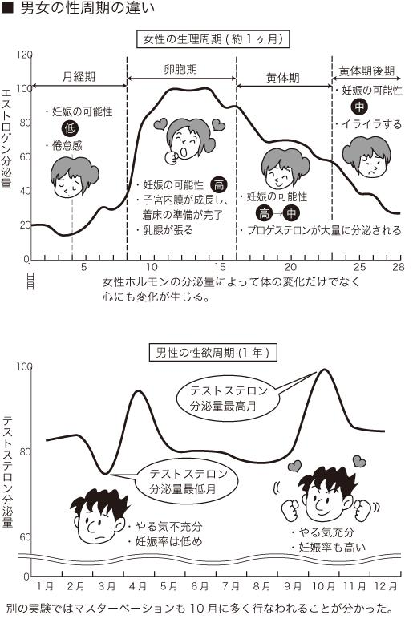

| 「人体の謎」未解決ファイル (PHP文庫) | |
| 日本博学倶楽部 | |
| PHP研究所 (2009) | |

「人体の謎」未解決ファイル
日本博学倶楽部
まえがき
――６０００００００００００００。
この数字が何をあらわすものなのか、わかるだろうか？ 答えは、ヒト一人の細胞の数である。想像もつかない数字だが、60兆個の細胞が、ヒトの内臓や血液、筋肉、骨などを形作っている。そしてそれらが複雑に機能して、生命活動を行なっているのだ。
ヒトの体は、あまりに複雑で精緻な機能を持っているため、未解明な部分が多い。そういったことから、人体の研究領域の未踏地を指して最後のフロンティアと呼ぶことさえある。
たとえば、「なぜ指には指紋があるのか」という単純な疑問にすら、明確な答えが出ていない。長いあいだ学者たちは、指紋の存在理由を単なる「滑り止め」と信じて疑わなかった。ところが、最近の研究によってそうとはいい切れない可能性が出てきたのだ。２００９年に発表された研究によると、指紋は触ったものを感知し、脳に対象物の情報を送る手助けをしているという。
このような生物学的な謎ばかりではない。男性がどうしても惹かれてしまう女性の体型にはある法則が隠されていたり、浮気をしてしまう女性になぜか一定の共通点が見られたりと、ヒトの性にもミステリーが数多く存在するのだ。
本書は、このような人体に関するあらゆる謎について、研究者たちが唱えてきたいくつもの仮説を、かみくだいて紹介している。わかりやすさを重視するために、あえて厳密な記述を避け、簡素な表現を心がけた。
本書を通して、人体の不思議、ひいては神秘性を感じ取っていただけることを確信している。
２００９年７月
日本博学倶楽部
「人体の謎」未解決ファイル 目次
遺伝子の特定に成功！ はげる人とはげない人の差は明らかになった!?
怖がりだとお酒に弱い!? お酒に「強い」「弱い」は何で決まるのか？
５人に１人はアスパラ尿!? 謎の体質はどこまで解明されたのか？
原因はストレス？ 遺伝？ 白髪になる人と白髪にならない人の違いは何だ？
右利きと左利きが存在する不思議 利き手はいつどのように決まるのか？
出口も一緒なら仕組みも一緒！ うんことおならはどう出し分けている？
母から子へと受け継がれる!? 謎に包まれた双子の妊娠メカニズム
止まらないカルシウムの流出!! 宇宙に行くと骨がもろくなるのはなぜか？
日本人の貯蓄好きは遺伝子の賜物か？ 遺伝子が明かした日本人の国民性
母親の妊娠期が鍵？ 同性愛は嗜好によって決まるものではない!?
電車で眠くなるのには理由があった！ 電車の揺れと生体リズムの不思議な関係
４分の３を切除しても元に戻る沈黙の臓器・肝臓の驚くべき再生システム
重い病気にかかるリスクを高めてまで女性に閉経があるのはなぜか？
「脳が酸素を欲しがっている」は嘘!? あくびの原因はこれだ！
「飲んで忘れよう！」は逆効果だった!? アルコールと脳の不思議な関係
「生理はうつる」って本当!? 生存競争が育んだ女性の神秘現象
「女性はおしゃべり」はまったくの濡れ衣！ 通説を覆した新発見とは？
「手が温かい人は心も温かい」？ 手の温度と心の温度の密接な関係
大人と子どもは感覚が違う!? 大人の一年はなぜ「あっという間」なのか？
「甘いものは別腹」はどうして起こる？ 女性ホルモンに隠された不思議
オカルトでは片づけられない！ 幽体離脱を科学的に証明してみせた驚くべき実験
男性は犯罪者になりやすい？ 男性ホルモンは本当に悪の根源なのか？
血液型性格判断はデタラメとはいえない？ 血液型でわかる病気のリスク
「お年寄りは早起き」論には理由があった 加齢と睡眠の関係とは？
ヒトは誰もが「美形好き」！ めんくいは遺伝子で決められていた！
装丁――中山銀士
装丁写真――荒川健一
遺伝子の特定に成功！ はげる人とはげない人の差は明らかになった!?
昨今、男性だけでなく女性にも頭髪の悩みを持つ人は多いようだ。だがこの悩みが、すぐに解決するものではないのは周知のこと。たとえば、さまざまな種類の育毛剤が市販されているが、誰にでも必ず効果が表われるわけではない。それは「はげる人」と「はげない人」にどのような違いが生じているのか、今もって明確な答えが出ていないためである。
これまで、はげの原因が何かという問いかけに対し、いくつかの説が唱えられてきた。その一つが、遺伝によるとするもの。二つめが、ストレスが影響するというもの。さらには、性ホルモンの分泌量によって、はげる人とはげない人が決まるとも考えられてきた。いったい、何がいちばんの原因なのだろうか。
そんななか、最近になってこの疑問を解決する糸口が見つかった。２００８年、イギリスなどの研究チームが、はげる遺伝子の特定に成功したというのだ。
カナダのマギル大学、イギリスのキングズカレッジ、そしてイギリスの大手医薬品会社グラクソ・スミスクラインによる共同研究で、１１２５人のコーカソイド（白色人種）の男性を被験者として、遺伝子のゲノム分析を実施。その結果、はげには、２種類のＸ染色体の遺伝子変異が関係していることを突きとめたのだ。研究グループでは、さらに１６５０人のコーカソイドのゲノム分析を行ない、この結果に間違いないことを確認したという。また、同グループによると、７人に１人がこの遺伝子変異を持っていたといい、保持者がはげになる確率は、そうでない人の７倍に及ぶとしている。
前述した通り、昔から、はげは遺伝によるものだという説は広く唱えられてきた。しかし、それがどういうメカニズムで起きるのかまでは解明されていなかった。その点でこの研究は、はげ研究史上初の快挙といえるだろう。
ただし、この研究はコーカソイドを対象としたものであり、全ての人に適用できるかは明らかでない。また、研究グループは、２種類の遺伝子変異は母親から子へと受け継がれる母系遺伝だと推測しているが、本当にそうした経路で遺伝しているのかも未解明である。
仮にこの説が正しかったとして、はげの原因が遺伝子にあるとするならば、運命として受け入れるしか道がないのだろうか？
じつは、はげに関する研究として、最近日本でも注目される研究結果が発表されている。２００９年４月、松本歯科大学の八巻真理子講師が、マウスの胚性幹細胞（ＥＳ細胞）を使って、毛を新しく生えさせることに成功したというのだ。
幹細胞生物学を研究している同氏は、ＥＳ細胞だけで毛を生えさせるのは難しいと考えた。そこで、生物の各器官を作り出す「間葉系細胞」という細胞を混ぜて培養したところ、全体の44％に毛が生えたという。さらに、細胞の増殖を促すタンパク質を加えることで、毛が生える割合が飛躍的にアップしたのだ。今後、この技術が人間にも応用できるようになれば、はげ治療に役立つのではないかと期待されている。
たくさんお酒を飲んでもほとんど酔わない人もいれば、ほんの少しの量でベロベロに酔ってしまう人がいる。こうしたお酒の強い、弱いについては、従来体内にあるＡＬＤＨ（アセトアルデヒド脱水素酵素）によって決まるといわれてきた。ここでまずは、ＡＬＤＨの働きについておさらいしておこう。
人間がお酒を飲むと、まずアルコールがＡＤＨ（アルコール脱水素酵素）の働きで有毒物質アセトアルデヒドに分解される。次にＡＬＤＨが、このアセトアルデヒドを酢酸に分解し、無害化。最終的には二酸化炭素と水になる。
アセトアルデヒドは、体内に多量にたまると呼吸困難を引き起こすなどの毒性を持っているため、ＡＬＤＨの働きによって、それをいかに素早く分解できるかが、お酒に対して強い・弱いを決定づけるのだ。
このＡＬＤＨにはいくつかの種類があり、とくにＡＬＤＨ２（アセトアルデヒド脱水素酵素２型）がアルコールへの耐性に関連しているという。ＡＬＤＨ２は活性型と不活性型があり、どちらかが両親から一つずつ受け継がれる。このとき、活性型を遺伝している人ほどお酒に強く、不活性型を遺伝しているほど弱くなる。
以上が従来の定説である。
しかし近年、お酒の強い・弱いを決定づけるのは遺伝子だけでなく、別の要因もあるかもしれない、という可能性が出てきた。お酒と性格に大きな関係があるというのだ。理化学研究所脳科学総合研究センターの二木宏明博士がマウスを使って、恐怖感情についての実験を行なった結果、恐怖の感情にはｆｙｎ（チロシンリン酸化酵素の一種）という遺伝子が関係していることが明らかとなった。
さらにこのｆｙｎは、アルコールが生物に及ぼす影響の強さに関係した遺伝子であることも判明している。ｆｙｎが正常に機能しない怖がりのマウスは、正常なマウスと同量のアルコールを与えたとき、起き上がるのに倍以上の時間がかかったという。つまり、血中のアルコール濃度は等しいのにもかかわらず、お酒への耐性がなかったと考えられる。
こうしたことから、ひょっとしてヒトの場合もお酒の強さに、性格が影響しているかもしれないのだ。
アスパラガス、通称アスパラは、南ヨーロッパを原産とするユリ科の植物で、日本には１７８１年に持ち込まれ、１８７１年頃から食用とされてきた。その食感のよさから、今では食卓に欠かせない野菜である。かつては缶詰などに使用されるホワイトアスパラガスが主流だったが、現在ではグリーンアスパラガスが主流となり、サラダや炒めものに使われる。ビタミンＡ、 、、Ｃ、Ｅなどを含む栄養豊富な食材である。
、、Ｃ、Ｅなどを含む栄養豊富な食材である。
このアスパラガスが人体とどうかかわるのか不思議に思うことだろう。
じつは、アスパラを食べると尿が臭くなるという、謎の現象を起こす人がいる。いわゆるアスパラ尿体質といわれる人たちだ。彼らは、アスパラを数本食べただけで、だいたい１時間以内に、早い場合にはわずか数分で、尿が刺激臭を放つようになる。いったいなぜそのような現象が起こるのだろう？
『そうだったのか！』（講談社）の著者ジェイ・イングラムによると、アスパラ尿の臭いの原因は、硫黄を含むＳ―メチルチオアクリレートとＳ―メチル３―チオプロピオネート（メチルチオ）であることがわかっているという。これらは腐った卵やキャベツを煮たときの臭い、スカンクのおならといった悪臭の原因物質メルカプタンの仲間だ。
この不思議な体質についての研究がはじめて発表されたのは、１８９１年のこと。その後１９７５年にカリフォルニアの科学者がメチルメルカプタン説を否定し、Ｓメチル・チオエステルこそが、アスパラ尿の臭いのもとだと主張したが、真偽のほどは定かではない。
１８９１年の発表によるとアスパラ尿の人は、二つの化学物質を体内で作る遺伝子を持っており、アスパラを食べると化学物質が発生し、尿を臭くするという。ただし、アスパラを食べて消化されたのち、どのようなメカニズムが働いて尿が臭くなるのかはわかっていない。また、なぜそんな現象が起きるのかも不明だ。
一切が謎に満ちたアスパラ尿だが、ある調査によれば、アスパラ尿遺伝子を持つ人は40％にものぼったという。しかし一方で、「自分はアスパラ尿だ」と自覚しているのは嗅覚が鋭敏な人だけで、ほとんどの人は自分がアスパラ尿であっても感じることなく過ごしているという。もしかしたらあなた自身も、自覚をしていないだけで、アスパラ尿体質かもしれない。
人間誰しも年をとると白髪になる。これは仕方ないことだとしても、白髪が出始める年齢には、かなりの個人差が見られるようだ。10代あるいは、20代と若くして白髪になる人もいれば、40～50代になっても変わらず黒々としている人もいる。
白髪になるのは少しでも遅いに越したことはないが、個人によって差が生じる理由は何なのだろう。
まずは、白髪が生える構造から見てみよう。勘違いしている人も少なくないが、白髪は現在生えている黒髪が白くなるのではない。もともと白い髪が生えるのだ。
黒髪の色のもととなっているのは、メラニンという色素細胞。メラニン色素は、しみやそばかすの原因として女性たちから天敵といった扱いを受けているが、一方で髪を黒くする働きを持つ物質であり、人体に必要不可欠なものである。
メラニンは毛根付近にある色素細胞で作られるが、年をとるとメラニンの細胞が減ったり、働きが弱まったりする。そのためメラニンのない髪が生える。これが白髪である。そして、このメラニンの働きが衰えるのに個人差があるため、若くして白髪となる人やいつまでも黒髪のままな人がいるわけだ。
では、この違いはどこから生まれるのか。その答えはいくつかあり、主にストレス、遺伝、体質などの原因があげられている。
『15歳からの毛髪革命』（祥伝社）の著者・原田裕文氏によると、過度なストレスは自律神経などに影響を与え、メラニンの働きに変調をきたすのだという。マリー・アントワネットの伝説など、極度の恐怖体験のため、一晩で総白髪になった体験などが語られるが、やはりメラニンにストレスは禁物のようだ。
ただし、実際には一晩で総白髪になるというのはありえない。前述した通り、現在生えている毛が白くなるのではないため、全部が生え変わるまでに三ヶ月程度かかるからだ。
また、恐怖などの極端なストレス以外にも、不規則な生活や偏った食生活も大きな要因となる。若白髪が出始めたら、まずは生活習慣を見直してみるのも有効かもしれない。
ストレスといった外因性の要素がある一方、内因性要素として、遺伝子にはメラニンの働き具合があらかじめプログラムされているという説もある。そのほか、体質によるものだという説もあるが、詳しいメカニズムは明らかになっていない。
しかし、この白髪研究に近年、一筋の光明がさしている。
２００８年、理化学研究所とＫＥＫ（高エネルギー加速器研究機構）が共同で行なった研究により、メラニン色素を運ぶタンパク質複合体Ｒａｂ27の立体構造が明らかとなったのである。詳しい構造については省くが、この研究成果により、複合体形成を促進して白髪予防の物質が開発される可能性もなくはない。
白髪になる、ならないの要因はまだ特定できていないが、若白髪に悩む人には朗報といえるだろう。やがては何歳になっても髪の毛は黒々......という時代が来てもおかしくないのだ。
ハサミの構造や駅の改札が象徴するように、世の中は右利き社会といえる。実際のところ、利き手が右である人が多いが、これはどうしてなのだろう？ 右利きと左利きが、半分ずついてもおかしくないが、そうならない理由があるのだろうか？
一説には心臓が左にあるため、とっさの場合にそこを守るために右利きのほうが都合がよかったのだろうといわれているが、答えはほかにもありそうだ。
世界的に見ると、左利きの人の割合は、全体のおよそ１割だという。男性の方が女性より多く、アメリカの方が日本より多いなどさまざまな調査結果が見られるが、おおまかにいって全体の９割は右利きで、残りの１割が左利きといっていい。古代に描かれた洞窟の壁画を見ても、右手に武器を持った図柄が多く、当時から右利きが多かったと考えられる。
では、利き手はどのような要因で決まるのだろうか？ これについては諸説ある。
まずは遺伝的な要因があげられるが、たしかに両親が左利きだと、その子どもには左利きが生まれるケースが多いようだ。
また、生来の左利きはもっと大勢いたのだが、右利き社会に順応するため、後天的な右利きが増えたという説もある。幼い頃、左手でクレヨンを握っていたずら書きをしていたら、「お絵かきは右手でしょ」と言われて矯正された経験がある人も少なくないだろう。ハサミや改札などのほか自動販売機の投入口、パソコンのエンターキーに至るまで、右利きに便利なように作られているので、右利きにならざるを得なかったというのだ。
このほか、胎児期に浴びるホルモンの影響で、左利きが生まれるという説もある。
男性ホルモンの一つであるアンドロゲンは、主に精巣内で作られ、男性の第二次性徴を促す働きがある。ヒトは本来なら全員右利きになるところなのだが、胎児期にアンドロゲンを浴びると、右脳が発達し左利きになるのではないかというのである。男性の方が左利きが多いのも、このホルモンの影響であるという。もしこの説が正しいとするならば、利き手は胎児の段階で決められることを意味するが、真偽は不明だ。
このように、利き手を決定づける要因が何で、どのように定まるのかという問いに対する明確な答えは、いまだ見つかっていない。
前項でも述べたように、世界中を見渡してみると、左利きの人が占める割合は全体の１割程度である。利き手を決定づける要因はいくつか説が提唱されているが、今度は左利きが少数派である理由について考えてみよう。
じつは、左利きが少ないのは、短命であるからというショッキングな報告がある。カリフォルニア州立大学のハルパーン博士とブリティッシュコロンビア大学のコレン博士による研究結果で、彼らが、南カリフォルニアで行なった調査によると、左利きの平均年齢は、右利きの人よりも男性なら10歳、女性なら５歳ほど短かったというのである。
これは、社会が右利きに都合のいいようにできているためで、左利きの人は交通事故をはじめ、色々な事故に遭う確率が高いからではないかと推測している。彼らの調査では、その差が６倍にのぼることがわかっている。また、フランスのモンペリエ大学の研究チームが左利きに関するデータを調べたところ、統合失調症などの生活のハンデとなる病気にかかるリスクも高いという。だとすると、少数派となる理由にはなるかもしれないが、新たな謎が生じる。生存に不利な左利きが絶滅しない理由が説明できないのだ。
これには面白い仮説が立てられている。
スポーツの世界では左利きが有利とされている。野球、テニス、ボクシングなど、歴史に残る名選手が幾人も存在しているのは周知の事実だ。これは右利きの人が、左利きの人からの攻撃に弱いのが要因とされる。右利き同士の対戦では相手の動きをほぼ予測できるものの、少数派である左利きの行動は、右利きにとって予測がしづらく、不意をつかれてしまう。これが左利きを有利にしている。
このことは、人類が武器を手に互いに戦っていた時代に当てはめることができるだろう。戦いに強ければ、そのぶん生き延びる確率も高くなる。さらに勝者は異性にもてるので、繁殖にも有利なはずである。
また、モンペリエ大学の研究チームは、左利きの男性は、右利きの男性よりも平均収入が高いという事実も突き止めている。これも生存競争に有利であることはいうまでもない。
では、今後左利きは増加していくのだろうか？
日本の精神医学者・前原勝矢氏らの調査によると、日本では若い世代ほど左利きの割合が多いという。これは、昔は左利きをタブー視する傾向があったが、現代ではそれがなくなったためといった理由が考えられる。
利き手を決める要因は定かではないが、もし遺伝によるものなら、世間の風潮が変わった今、左利きの人口が増す可能性も否定できない。
デスクワークをしている人間が、休日にテニスなどの激しい運動をして、普段使わない手や足の筋肉をフル稼働させれば、翌日まで筋肉疲労を持ち越して、後悔するのがオチである。
しかし、そのくらいの運動量で「疲れた」などとこぼしていては、心臓の筋肉に怒られるかもしれない。
考えてもみてほしい。心臓の筋肉は生まれてから亡くなるまでの数十年間、24時間不眠不休で働いている。「疲れた」といってひと休みをするわけにもいかないだろう。
しかも、その働きはかなりハードなもの。心臓の役割が酸素を含んだ血液を体内に送り出すことにある、というのは誰でも知るところだが、その送り出す血液の量たるや１日８トンに及ぶ。たとえていうならば、心臓の筋肉は、１００メートル走を休みなく続けているようなものである。
それなのに、心臓の筋肉はどうして疲れないのだろうか？
まず、心臓が骨格や内臓といったほかの筋肉とは違う「心筋」という特別な筋肉で動いているという点が、この謎を解く鍵となる。また、ヒトの体のほとんどの筋肉が神経の命令を受けて動く中、心筋は自分自身で規則的に動くのが特徴である。
そんな心筋が疲れ知らずである理由については諸説あるが、有力視されているのは、ほかの筋肉より酸素をたくさん蓄えられる構造だからではないかという説である。
通常、筋肉疲労は、筋肉を動かすことで酸素が不足し、乳酸が細胞内に蓄積するのが原因とされる。ところが、心臓は酸素を取り込む力が強いため、乳酸がたまりにくい。これは、ほかの筋肉より数も大きさも格段に違うミトコンドリアの存在が大きい。このミトコンドリアが酸素をたくさん吸収して乳酸の発生を防ぐため、心臓は疲れずにいつまでも動き続けることができるのだと考えられている。
また、手や足の筋肉は、力を出して縮んでいるときに、別の力に引っ張られるなどして無理な動きを強いられることがある。これは、筋肉疲労のみならず筋肉痛をまねきかねないほど大きな負担になる。
その点、心臓の動きはじつに自然だ。縮んで血液を送り出し、力を緩めて膨らむという一定のリズムにのっとって運動しているため、イレギュラーな動きに起因する筋肉疲労が起きにくいという説も唱えられている。
こうした考えも、疲れ知らずの一因といえるのかもしれない。心臓は、乳酸が少ないために疲労しないのか、はたまたリズムが一定なために負荷が少なく、疲れないのか、そのタフなメカニズムはまだまだ謎に満ちている。
まるでギャグマンガのような話だが、ガス（おなら）だと思ったら実（うんこ）まで出てしまった......。こんな粗相を経験した人が実際にいる。
普通、誰でも無意識のうちに出し分けているのだから、めったなことでは間違えないだろう。しかし、じつはうんことおならは、出る場所はもとより、仕組みも非常によく似ているという。では、どのようにして区別しているのだろうか。
『科学・１７８の大疑問』（講談社）で佐藤信紘氏は、おならとうんこの出る仕組みは、括約筋の緩ませ方が少し違うほかはほとんど同じだと述べている。わずかな違いでも出し分けられるとは何とも不思議な話である。
その仕組みはどのようなものなのだろうか。
お腹の中の腸管内には、固形物やガス体が入る場所がある。つまり、この固形物というのがうんこでガス体がおならだ。これらは徐々に直腸膨大部へと押し出され、直腸まで進む。すると、脳へ「うんこがしたいですよ」「おならがしたいですよ」と連絡が入る。
続いて脳からの指令で内肛門括約筋が緩めば、いよいよ出るのを待つばかりだ。しかし、ここでいったんとどめて、出してもいいかどうか脳に判断を仰がなくてはならない。そのあいだ、もれないように、自分の意志で肛門の外側の筋肉である外肛門括約筋を縮ませる。ここで、うんこかおならかをジャッジするのだ。
では、判断の決め手となるのは何なのだろう？
「肛門近くに固形物があるかどうかなんて、感覚でわかるよ」という声も聞こえてきそうだが、前出の佐藤氏によると、腸管の圧迫感の違いで判定が下るのだという。このとき働いているのが自律神経で、これによって外肛門括約筋をコントロールしているのだ。
この違いがわからないと、おならかうんこか判断できず、粗相をしてしまうことになる。
こうして脳によるジャッジが下って、はじめて排出に至るのだが、排出時の外肛門括約筋の緩ませ方こそが、うんこを出すか、おならを出すかの決定的な違いになる。
うんこの場合は、筋肉をゆっくり大きく緩めて押し出す。対するおならの場合は、少し緩めるだけにとどまり、すき間からスルリとすり抜けていく。このとき出るのが、あの「プー」という独特の音である。
このように同じシステムで出すのにもかかわらず、人間は事前にうんことおならのどちらが出るのかを区別して、無意識のうちに肛門の緩ませ方を変えているという高度な処理を行なっているのだ。
ただし、下痢のような通常とは異なる場合には、健康な人でもコントロールできないことがあるというから要注意である。
フィリピンのルソン島北部にあるルブアガン町には「ティウッド・スプリング（宝の泉）」と呼ばれる泉がある。２００８年、この泉の周囲半径１００メートル以内で生活する30世帯のうち、16世帯に双子が誕生しているというニュースが報じられた。そのため、泉には排卵を促す成分が含まれているなどの諸説が飛び交い、世間をにぎわせた。
世界各地にある伝説の一種とみられるが、不妊に苦しんでいた女性が、この水を飲んだところ妊娠したといわれ、子宝に恵まれる神秘の泉として人気を呼んだようだ。
それからほどなく、泉と双子の関連について科学的な見解を出そうという動きが出たため、現在双子誕生のメカニズムを解くヒントとなることが期待されている。というのも双子を妊娠する理由が、今も明らかとなっていないのだ。
周知の通り双子には一卵性と二卵性があり、二卵性は、通常１個の排卵がなぜか２個あるために、受精卵が二つ誕生することで発生する。一方の一卵性は、１個の受精卵が二つに分裂したものだ。もとは一つであった受精卵であるため、一卵性は性別も同じになる。見た目がそっくりなのも一卵性の双子の特徴だ。
厚生労働省の人口動態統計によると日本において双子出産率は全体の０・６％で推移してきたが、２００３年には１％にまで上昇した。
近年の双子出産率上昇の要因は、不妊治療による排卵誘発剤の使用や、体外受精などの外部刺激が関連しているという。
とくに二卵性の双子の伸びは、排卵誘発剤による不妊治療が導入された１９７５年時と比べて倍近い。これは体外受精の際に、受精卵を複数、母体に戻すことが理由の一つとみられる。
しかしこれだけでは、根本的な双子妊娠のメカニズムが解けたとはいえない。
なぜ一つの受精卵が二つに分かれるのか、そして、なぜ一度に複数の排卵が起こるのかが、いまだ解明に至っていないのだ。多胎妊娠は人体の神秘としかいいようがないのである。
この要因として有力視されているのが、母系遺伝だ。一度双子を産んだ母親は再度双子を産む可能性が高くなり、双子を出産しやすい家系は母から娘へと受け継がれていくという。
さらに、双子の発現率は、人種によっても違うようで、ネグロイド（黒色人種）、コーカソイド（白色人種）、モンゴロイド（黄色人種）の順で高い傾向にあるというが、その理由も明らかではない。
双子の出生がたんなる偶然なのか、物理的要因なのか、遺伝的要因か、はたまた体質的要因なのか？ いまだ特定されていないが、神秘とされた妊娠の世界も、科学の手で真実の扉が開かれつつある。
日本人の多くは黒色でストレートな頭髪を持つ。しかし、そんな人でも必ず陰毛や腋毛はちぢれている。このちぢれは日本人に限った話ではなく、人種を問わず共通した現象だという。陰毛の別名は〝隠し毛〟というが、めったに人に見せない部分の毛だけが、どうしてちぢれているのだろうか？
じつは陰毛や腋毛は、同じ毛でありながら髪の毛とは根本的な部分で異なる。頭髪は女性ホルモンによって成長するが、〝隠し毛〟は男性ホルモンであるアンドロゲンによって成長が促されている。また、頭髪は１ヶ月に約１センチのペースで伸び、３～７年の寿命があるが、陰毛や腋毛の成長は１ヶ月に６～８ミリというスローペースで、最大でも１年で生え変わってしまう。
陰毛や腋毛を伸ばしっぱなしにしても一定の長さ以上にならないのは、そのためだ。だが、これらの違いだけではちぢれている理由を説明したことにならない。
この疑問に対する答えはいくつかある。たとえば島根大学の松崎貴氏によると頭髪の断面は円形だが、陰毛や腋毛は楕円形をしているという。これは、毛の根元にある「毛包」という器官そのものが歪んで形成されるためであり、さらに毛の内部にある組織構造も不均衡なため、ちぢれているのだという説を述べている。
このほか、デリケートな部分を覆っている毛であることから、ちぢれによってクッション性を高め、皮膚を保護しているといった説もある。
また、陰部や脇の下に多く分布しているアポクリン腺という汗腺に、毛がちぢれている要因があるのではないかという考えも提唱されている。
アポクリン腺は分泌機能を持つ腺の一種だが、ここから異性を惹きつける臭いが出ていると考えられている。そういった点から、毛をちぢれらせることで腺の周囲に多くの空気を含ませ、臭いをやたらと周囲にまき散らすのを防いでいるというのだ。
しかし、その一方で、これと矛盾する考えもある。ちぢれた毛で空間を作り、臭いを長くこもらせて、より多くの異性を惹きつけようとしているのだという。
なるほど、頭髪でさえ思いのほか臭いがこもるのだから、ちぢれた毛なら、さらに臭いを長時間保つ働きがあるだろう。だが、これも決定的な理由には至っていない。
企業が企画立てた宇宙への観光ツアーが身近なものになりつつある昨今、一般人による宇宙旅行も絵空事とはいえなくなってきた。
資金さえあれば挑戦してみたいと誰もが思うだろうが、実際のところ宇宙での生活となると、いろいろと大変なようだ。
宇宙といえば、飛行士たちがフワフワ浮いているのを見たことがあるだろう。これは無重力状態にあるために起こる現象である。これは目に見える変化だが、見えない部分でも宇宙では人体にさまざまな変化をおよぼしているという。
たとえばむくみが生じて顔が腫れぼったくなったり、足が細くなったりするのは、重力から解放された体液が上半身に移動するために起こる。この変化はさほど悪影響とはいえないが、深刻なのが骨の劣化だ。骨がもろくなっていくというのだから一大事である。
アメリカのカリフォルニア大学アーバイン校が宇宙飛行士たちをＣＴスキャンで調べたところ、被験者13人のうち３人に、半年の滞在で約20～30％の骨の強度低下がみられたという。これは骨粗しょう症と診断された高齢の女性に匹敵する数値である。
同研究を発表した教授は、「宇宙飛行士たちが宇宙に長期滞在したら、骨折の危険性が高まるかもしれない」と警鐘を鳴らしている。
ではなぜ、宇宙空間にいるだけで骨がもろくなってしまうのだろうか？
この謎については答えが出ている。骨のカルシウムが溶け出してしまうからである。
地上にいる場合、骨は古い組織が溶け出し、新しい骨が再生されるというサイクルが繰り返されている。ところが、宇宙のような無重力状態におかれた場合、骨内のカルシウムとリンが溶け出し、尿や便と一緒に過剰に排出されてしまうのだ。
その一方で、再生される速度が極端に遅い。そのため、骨の再生が追いつかず、約10日間の滞在で、平均３・２％もの骨成分が失われる。これはカルシウムを飲んで補っても改善しないというから、厄介だ。
カルシウムが流出する原因ははっきりしない。宇宙航空研究開発機構（ＪＡＸＡ）の嶋田和人氏によると、背骨やかかとなど地上において体重を支える部分からの流出が多いことから、無重力によって骨への刺激がなくなるのが影響しているのではないかと推測している。その証拠に、食べ物を噛むことで刺激を受ける歯槽骨（歯を支える骨）からは、カルシウムの流出が抑えられたという。
しかし、いまだ研究段階に過ぎず、原因とこの対処法は見つかっていないようだ。現在、予防のため飛行中に自転車こぎなどの運動を行なうなどの対策が練られているというが、今後は食事療法や薬物療法といった解決策もとられるかもしれない。
さて、宇宙空間と骨の関係を示したところで、「宇宙では、悪化する可能性が高いため、虫歯のある人は宇宙飛行士になれない」という俗説があることについても触れておこう。結論から先にいうと、これは真っ赤な嘘である。前出の宇宙航空研究開発機構によると、たとえ虫歯があっても治療が施されていれば、詰め物があっても問題ないようだ。ただし、船外活動時に痛みが生ずるケースがあることから、宇宙飛行士たちはデンタルケアにも余念がないという。
唐突だが、日本人は貯金好きだという調査結果がある。
手取り収入の中で貯蓄に回した割合を示す「貯蓄率」を見ると、日本の貯蓄率が７・５％なのに対し、アメリカはわずかに２・１％（２００３年・ＮＮＡＨＰとＯＥＣＤ東京センター）。日本人はアメリカ人の、じつに３倍以上もの額を貯蓄に回しているのである。
また、貯蓄額の伸びも、目を見張るものがある。総務省が行なった「貯蓄動向調査」と「家計調査」の１９８０年から２００７年のデータを引用してみよう。それによれば、１９６０年頃の日本の勤労者世帯の平均貯蓄保有額がおよそ30万円だったのに対し、バブル経済ピークの１９９０年には１０５１万円となり、２０００年には１３００万円を突破。その後、バブル崩壊の影響を受けて金額は減少したものの、２００７年の平均貯蓄額は１２６８万円という結果が出ている。バブルがはじけ、所得が減少してなお、日本人はせっせと貯蓄に励んでいるのである。
なぜ日本人はここまで貯蓄が好きなのか？ その理由を解く鍵となりそうな発見が、近年報告された。なんと、日本人は欧米人より不安を感じやすい遺伝子を持っているというのだ。では、不安を感じやすい遺伝子とは何か？
アメリカの研究者が発見したものだが、人間の不安な感情は、５―ＨＴＴ（セロトニントランスポーター）という遺伝子に関係しているといわれている。この遺伝子は、神経伝達物質であるセロトニンを再吸収するための輸送体であり、ショート（Ｓ）型とロング（Ｌ）型の２種類に分類される。
この５―ＨＴＴ遺伝子がＳ型だとセロトニンの分泌が悪く、人間は神経質になりやすいという。
実際、うつ病の人はセロトニンの量が非常に少なくなっているという研究結果もあり、電気刺激や薬を使ってセロトニンの寿命を長くしたり、セロトニンの受容体を刺激して神経の伝達を速めるなどして、不安を解消できることもわかってきた。
そこで気になる人種と型の関係だが、日本人の場合、Ｓ型の５―ＨＴＴを持つ割合がなんと98・３％にものぼる。ほぼすべてがＳ型だということだ。対するアメリカ人は67・７％である。つまり、日本人はセロトニンを分泌する力がアメリカ人の３分の２に過ぎないため、とくに、神経質で不安を感じやすい性格に生まれつくのではないかというわけである。
これが事実だとするなら、日本人がせっせと貯金するのは、将来への不安感によるものとも考えられ、別段アメリカ人より真面目だとか、勤勉だとかという意味ではないのかもしれない。
それにしても、いくら勤労世帯といえど、日本の世帯の平均貯蓄額が１０００万円以上もあるとは驚きである。自分の預金通帳を眺めつつ、さらに不安感が湧き上がってきた人も多いのでは......？
長いあいだ掃除をしないと、耳の中にはアカがたまってくる。耳アカの正体が何かといえば、耳にある皮脂腺や、アポクリン腺などから出た分泌物と、皮膚の残骸が混じったものである。
ただし、ひと口に耳アカといっても、大きく二つのタイプに分かれる。耳掃除をすれば一目瞭然だが、綿棒についてくるようなネバネバしたタイプと、耳かきを使わないととれないようなサラサラしたタイプだ。
サラサラの耳アカは「乾型」といわれ、日本人の約８割がこの種に属している。同じモンゴロイドである韓国人や中国人も、８割から９割は乾型だ。一方、コーカソイドやネグロイドは、「湿型」と呼ばれるネバネバの耳アカ派が多く、95％以上が属しているという調査結果がある。
両者の違いは、アポクリン腺からの分泌物が人種によって違うためと考えられている。欧米系の人々の体臭が強いのも、それが要因となっているようだ。ではいったいなぜ、こういった違いが生じるのだろうか？
耳アカが乾型であるか湿型であるかは、一般に遺伝子で決まるといわれる。現在の定説では、かつてはすべての人類が湿型であったが、今から２～３万年前に中国大陸で突然変異が起き、乾型の遺伝子が生まれたとされる。そしてこの遺伝子を持つ人々が子孫を残し、現在に至るというわけだ。乾型は寒さに強いとも、湿型は母乳の出がよいともいわれるが、その論拠は判然としない。
だが、２００６年、同研究を進展させる新たな発見があった。長崎大学の研究チームが耳アカのタイプを決定づける遺伝子の特定に成功したのである。遺伝子の構造と発見の経緯はここでは触れないが、この遺伝子（ＡＢＣＣ11）は、細胞の中に入ってきた薬物や物質を、細胞の外に排出する機能を持つことがわかっている。そのため同チームは、湿型の人は排出機能が強く、乾型の人は弱いと推測している。
現在ではこの研究成果をもとに、耳アカのタイプと身体機能の差や、湿型と体臭の関係など、さまざまな研究が日々進められている。
耳アカの秘密はようやく解明され始めたばかりで、謎の部分の方がまだまだ多い。それだけに、今後の研究に大きな期待が寄せられている。
昨今、「脳トレ」という言葉がテレビや本のコピーに躍ることが多くなった。ゲームにもなり、一大ブームとなったのも記憶に新しいだろう。それだけ記憶力アップに対する人々の関心は高く、これまでもさまざまな方法が紹介されてきた。
まず、どの学者も基本とするのが、記憶力を向上させたいのなら、朝食をしっかり食べるべきということ。睡眠から目覚めた脳は、記憶整理などのひと仕事を終えたところであるため、エネルギーを欲する。それが与えられなければ、機能が低下するのも無理はない。朝食を抜くと、記憶力、注意力、情報処理速度などの各能力が低下するという報告もある。
また、反復も記憶力アップに有効だ。遺伝子は覚え過ぎを抑制するため、一度では覚えられないような仕組みになっている。このため、４回以上の反復が効果的で、それも毎日繰り返すことが重要である。
一方、記憶力向上に厳禁なのはストレスだ。記憶にかかわる脳の部位、海馬はストレスにさらされやすい。極度のストレスを感じると海馬は記憶検索という機能をストップさせ、結果、記憶障害を引き起こすのである。試験前などの極度のプレッシャーのもとで行なう勉強がなかなか身にならないのは、こういった理由があったのだ。
このほか、諏訪東京理科大学の篠原菊紀氏は、記憶力アップのためのコツをいくつか示している。それを簡単に紹介してみよう。
まず、覚え方に工夫が必要だという。画像や図などを利用し、ひとかたまりの物語にして覚えると頭に入りやすい。覚えるときは、それらをよく聞いて見てイメージすること。または音読したり、書いて覚えるのが効果的である。
だが、「若いうちはそれでいいかもしれないが、年をとると覚えが悪くなる一方で、記憶力の向上など困難だ」と思う人は少なくないだろう。「老化すると脳細胞が死滅していく」という話もあるくらいだ。実際のところ年をとってからの記憶力アップは、本当に望めないのだろうか？
そんななか、２００４年に東京大学大学院の久恒辰博氏が発表した実験結果は、それを覆す可能性を示唆している。脳に複雑な刺激を与えると、年齢にかかわらず記憶力の向上につながるというのである。
難問を解いているときに出るシータ波に近い電気刺激を脳に与えたところ、細胞分裂を促す神経伝達物質・ＧＡＢＡが放出。海馬の細胞分裂が促進されることが判明したのである。つまり、難しい問題に挑んでいるときほど、記憶力が上昇するのだ。
実際、ＧＡＢＡをマウスに投与したところ、与えなかったマウスより神経細胞が１・５倍も増えたという。
久恒氏によると、ヒトは加齢とともに、脳細胞が死滅するのではなく、細胞間を行き交う刺激のスピードが落ちるために記憶力が低下するのだという。よってそこに刺激を与えれば、年を重ねてからでも脳細胞は活性化できるはずだ。
このメカニズムが応用され、いくつになってもバツグンの記憶力を持てる日がくるかもしれない。
人はなぜ同性愛になるのか？ この疑問を同性愛の人に尋ねても、はっきりした理由は返ってこないだろう。異性愛の人に、「どうして異性を好きなの？」と尋ねても、これといった明確な答えがないのと同じである。
同性愛はこれまで個々人の嗜好に過ぎないとか、幼年期を過ごした環境が影響するといわれてきたが、近年の研究の結果、これらはほとんど関係がないと考えられている。むしろ、男性の同性愛については本人の問題ではなく、その母親の妊娠期の状況が関与している可能性が高いという。
その理由は以下の通りだ。妊娠中に母体が強いストレスにさらされると、胎児へのアンドロステロンの放出が十分ではなくなる。アンドロステロンは男性ホルモンの一種で、これが不足した場合、生まれてくる男児が同性愛者になる確率が高くなるというのである。
この説の根拠となっているのは、第二次世界大戦中に、東ドイツ地域で生まれた男性を対象に行われた調査結果だ。死への恐怖に日々さらされ続けた妊娠中の女性たちに多大なストレスがかかっていただろうことは、想像に難くない。
そんな女性たちが出産した男性10万人を調べたところ、同性愛者が50～70人存在していた。通常であれば10万人あたりの同性愛者の人数は、おおよそ20人とされる。確率であらわすのであれば、これは２・５倍～３・５倍にも相当する。また、調査がなされたのは社会的偏見がまだ色濃く残る時代であり、調査の正確性も疑問が残るため、実際にはもっと多かったかもしれない。
一方で、同性愛には遺伝的要素が強いという説もある。たとえば一卵性双生児の場合、片方が同性愛なら、もう片方も同性愛である確率は52％にものぼるという。これが二卵性双生児だと、その確率は22％とぐっと低くなる。天乃真中氏の『すれ違う男と女』（河出書房新社）によると、男性の同性愛は母方を経由して男性にあらわれることが多いという。
これらの調査結果から考えると、同性愛者は遺伝的要因なのか、母親の受けた環境が要因なのかを結論づけることは難しい。しかし、多様化した現代社会と照らし合わせてみると、生まれ持った個性の一つと考えてみてもよいのではないだろうか。
睡眠にふさわしいかどうかと問われれば、電車の中は、決してふさわしい場所とはいえない。新幹線や寝台列車ならともかく、人々の乗降が激しく、騒々しい通勤電車などは、眠るのにはまったく不向きな場所といえるだろう。
それなのに、電車の座席に座ると、なぜか眠くなる。ゴトンゴトンと揺られているうちに、ついうつらうつらとして、気づいたら寝過ごしてしまった！ という経験も多いのでは？ なぜ電車はこうまで眠気を誘うのだろうか？
その原因は、「１／ｆゆらぎ」にあるという説を唱えるのが、物理学者である武者利光氏だ。ゆらぎとは、予測のできない空間的、あるいは時間的変化や動きをさす。もう少し噛み砕いて表現するなら、変化や動きが不規則で、予測が部分的にしかできない様子とでもいおうか。
１／ｆについておおまかにいうと、人間の神経細胞（ニューロン）は、生体信号として電気パルスを発射しているのだが、その際の生体リズムが基本的に１／ｆというノイズになっているのだという。
人間の心臓の鼓動を例にとって説明しよう。心電図に安静時の心拍を記録しておき、各心拍間を測ると、前後10％程度のゆらぎがみられる。そして健康な人の場合、心拍周期と時間の経過を分析にかけると、そこには見事に１／ｆをなしているというのである。
また、感情面にもゆらぎは存在し、脳波のうちでもっとも安定した状態を示すアルファ波も１／ｆだし、人間がぐっすりと眠っている状態であるノンレム睡眠時も、脳波は１／ｆを示す。つまり１／ｆゆらぎとは、ヒトの身体がリラックスした状態を意味している。なぜそうなるのかはわかっていないが、１／ｆゆらぎが、快適な感覚を与えてくれるものであるのは確かなようだ。
さて、冒頭の電車の問題だが、乗車中に眠くなるのはなぜか。それは電車の揺れこそが１／ｆゆらぎになっているからだ。電車が揺れるのは、左右のレールの高さがずれる「水準狂い」が起こるため。それが乗っている人間に伝わってくるのである。やがて乗客はその揺れに同調し、人間にとってもっとも心地よいと感じる１／ｆゆらぎに身を任せることになり、眠くなってしまうらしい。
この１／ｆゆらぎは、ベートーベンやモーツァルトなどの有名な楽曲の振動数の変化にも見られるし、優れた絵画や書にも存在している。さらには、街の景観や小川のせせらぎにも１／ｆゆらぎが存在しているといわれている。
また、高速道路をスムーズに走る自動車の流れにも、１／ｆゆらぎを見出すことができるという。これが事実ならば、高速道路を運転しているときこそ、一般道より気持ちをひきしめて運転に臨む必要がある。
肝臓は、人体の中で最大にして最重量を誇る臓器である。それもただ大きいだけでなく、その働きも大規模なもので、栄養分の分解と合成、そして貯蔵に始まり、有害物質の解毒、胆汁の生産に至るまでを一手に担っており、まるで巨大な化学工場といえるほどの働き者だ。
さらに、肝臓の能力でもう一つ特筆すべきは、その再生能力の高さだ。肝臓は、一つしか存在しないのにもかかわらず、骨髄と並んで、生体移植が行なえる臓器である。具体的にいうと、肝臓は手術で４分の３を切除しても元の大きさに戻ることができるためで、驚異的な再生能力を持ち合わせているのだ。だいたい、完全に修復が完了するまでには、４ヶ月ほどかかるといわれている。
肝臓の再生因子については、これまでに数多くの成長因子や細胞間の相互作用を担うタンパク質が報告されており、細胞の増殖の仕方や細胞内がどのように伝達されていくのかが、徐々に分かってきている。
たとえば、肝臓修復のシステムは、切除後に残された未分化の肝細胞が増殖し、分化しているものと推測されている。ただ、この分化にどういった物質がかかわっているのかまでは、解明できていない。
さらに、肝臓の再生がぴたりと元の大きさで止まり、それ以上の増殖が見られない点も謎とされてきた。しかし、この点は、最近になってようやく明らかになりつつある。
２００４年、ベイラー大学分子生物学教室から発表された研究結果によると、そのメカニズムを解く鍵となるのが、胆汁に含まれるステロイド化合物・胆汁酸であることを突き止めたというのだ。
肝臓が切除されると、傷ついた状態の肝細胞に作用する胆汁酸の量が増加する。そうすることで再生作業を活性化させ、細胞増殖をせよとの司令が下る。このとき、肝臓は胆汁酸で保護され、同時に胆汁酸の分泌量が調整される。
さらに、肝臓が再生してすっかり元の大きさに回復すると、胆汁酸の作用が消失して、増殖の機能が停止するというのである。
人体の化学工場である肝臓は、傷ついた自らを再生し、修復しながら、今日も静かに働き続けているというわけだ。不満もいわず、ひたすら恒常性を保とうとする肝臓の能力の高さには、ただただ驚くばかりである。
人間が美しいものに惹かれるのは、何も不思議な話ではない。美しいものに目がとまり、心の琴線を震わせるのはごく自然であるように思える。しかし一方で気になるのが、そのような美的感覚はどこからくるのか？ という点だ。
美しいとか綺麗といった感覚は、あくまで個人の感覚であり、それぞれに感性は異なるはずである。それなのに、花や建物、絵画から人間に至るまで、一定の条件を満たしたものに対し、ヒトは一様に美しさを覚える傾向がある。
その美の基準とは、「黄金比」と呼ばれる数値だ。
黄金比というのは、線分ＡＣ上に点Ｂを取って分割する場合、
ＡＢ：ＢＣ＝ＢＣ：ＡＣ
となるようにする比率で、およそ１対１・６１８となる。これが、ヒトに心地よさを覚えさせる線の分割であると考えられており、縦と横の長さがこの比率に相当する長方形は、黄金長方形と呼ばれている。
この黄金比、じつはさまざまな場所で目にすることができるのだ。その代表的建造物だといわれるものが、ギリシャのパルテノン神殿とエジプトのピラミッドだ。パルテノン神殿は、基台の長さと高さの比率がこれに相当し、ピラミッドも底辺と高さの比率がそれぞれ黄金比となっている。
この黄金比は、建造物のみならず、自然の中にも数多くひそんでいて、貝殻や花びらからも見出すことができるという。
また、レオナルド・ダ・ヴィンチが描いた、両手と両足を広げた男性が、完璧な四角と円に当てはまる理想の男性体型像（ウィトルウィウス的人体図）の絵にも、両手の長さと全身の比が当てはまるし、ミロのヴィーナスからもいくつかを見出すことができるという。つまり、人間の身体にも黄比率が存在している可能性がないともいえない。
じつは、人体にも黄金比とみられる箇所がある。それが、指の三つに分かれた関節だ。この三つの関節は、たいていのヒトの場合、それぞれが互いに黄金比を示しているという。さらに、歯科医のロバート・リケッツや、美容外科医のＷ・アール・マトリー・ジュニアらは、独自の調査の結果、美しいと評価されている男女の顔から、黄金比の例を見出したと発表している。ただし、彼らの研究においては、魅力的でないとされる顔との比較は行なわれていないため、黄金比が存在する人＝美しい顔という判断はつけられない。
おそらく、黄金比に人間の美の琴線に触れる何かがあるのは間違いないだろう。しかし、何ゆえこの比率が心地よさを覚えさせるのか、という根本的な部分の解明はなされていない。
男性が年をとっても精子を作り続けることができるのに対し、女性は40代半ば～50代半ばになると、閉経を迎えて生殖活動に終わりを告げる。
このように、女性に閉経があることは誰もが知っている話だが、なぜ閉経があるのか、考えたことがあるだろうか？
じつは、閉経という現象は女性の体にとってマイナスに働くばかりで、必然性が見出せないものなのである。閉経を迎えると卵巣が萎縮するのだが、それにともない、そこで生産されるエストロゲンやプロゲステロンといった女性ホルモンの量が不規則になる。するとのぼせや発汗、無気力といった更年期障害を引き起こす。それだけではない。骨粗しょう症や心臓病などの重病に罹患するリスクまで高まってしまうのだ。
なぜこのようなリスクがあるのに、閉経は訪れるのか？ 自然の摂理から考えれば、わざわざリスクの高い選択をするのはおかしな話である。
その理由の一つに、卵子の寿命説がある。女性は胎児のとき、すでにある程度まで発育した状態の卵子を何十万個と保持している。そして、このうち数百個程度に絞られた卵子は排卵されて減少していく。それと同時に、排卵に至るまで卵巣内で生存し続けられない卵子は退化し、徐々に吸収されて消滅していくという。
一方で体内に保持された卵子は、日常生活を送っているあいだにも、放射線や薬などの外部からの影響や、卵子自体の突然変異といった原因で染色体の異常が蓄積する。そしてその蓄積できる限界が40年から50年と考えられ、これ以上経っての妊娠・出産は、子孫に染色体異常を与えるリスクが高まるのだという。つまり、閉経とは、卵子に寿命を設けることで、遺伝子異常から子孫を守るという自然の摂理にのっとったものだと推測されている。
また、ミネソタ大学のクレイグ・パッカー氏は、ある一定の年齢を超えると、生理の新陳代謝を継続するのが難しくなるからだと述べている。この説は、１９９８年に科学雑誌『ネイチャー』に発表されたもので、閉経は、月経を継続するためにかかるコストを回避するために存在するというのである。
閉経はリスクがあるが、そのリスク以上に生理を継続する方が体への負担が大きいということだ。男性が精子を製造し続けられるのは、そのコストが女性に比べて非常に軽いからだと説明している。
このほか、少しユニークなのが「おばあさん仮説」と呼ばれているものだ。これは東京大学の松井孝典氏をはじめとする各国の研究者が導き出した説である。人類は他の動物と比べて育児に手間がかかるため、生殖に不利になった女性は生殖競争に参加せず、自分の子ども世代の繁殖を手伝う方が、種の集団維持としては効率がよいからだという考えである。つまり、人間は進化の過程で寿命を延ばし、「おばあさん」を作り出し、その知恵を子孫繁栄のために孫の代で生かせるようにしたのだという。
また、おばあさん仮説を唱える学者は、おばあさんの多くが、自分の娘が閉経を迎えた頃に亡くなっていることも指摘している。これは娘が閉経を迎えたことで任務を譲り渡す意味があると考えられている。
実際、現代日本の平均閉経年齢は50歳前後で、その母親はだいたい80～85歳。寿命としても整合性がある。
この説を事実とするならば、核家族化が進み、その役割を果たすべき女性が孫から離されている現代の日本は、人類の進化の目論見とはかけ離れたものになっているといえそうだ。
人類の祖先にもっとも近い種が、チンパンジーであることはご存知の通り。事実、人間はチンパンジーとの共通祖先から分岐して進化したものなのだ。分岐後、チンパンジーはさほど変化しなかったが、ヒトはそこから大きく変貌を遂げ、現在の姿となった。しかし、その進化の過程で学者を悩ませてきた一つの疑問がある。なぜヒトは天然の毛皮を脱ぎ、細くて頼りないうぶ毛だけの、裸同然の姿になってしまったのだろうか？
体毛は太陽の光、特に紫外線の悪影響から皮膚を守る重要な役目がある上、冬は防寒具として機能する。これを手放した人類は、皮膚を強くし、天然のＵＶカット剤であるメラニンを増やすために皮膚の色素を沈着させるなど、進化の過程でかなりの苦労を重ねたに違いない。
この謎は人類の長年の疑問であり、これまではダーウィンが提唱した「性淘汰」説が有力視されてきた。「性淘汰」説とは、人間の体毛が退化したのは、異性の好みに合わせようとしたからだというもの。毛深い男女より、毛の薄い男女の方がもてるようになったため、毛深くない子どもが増えていったというのである。結果、生存にリスキーでありながらも、繁殖する確率の高い、薄毛の身体へと淘汰されていったのだと考えられている。
しかし近年、人間が体毛を失ったのは、二足歩行への進化が関与しているという説が浮上した。これはジョン・ムーアズ大学のホイーラー氏が唱えたものである。いわく、二足歩行となって活発に地上を動き回るようになった人類は、脳が過熱しないように体を冷やす必要が生じたため、体毛を減らして表面の汗腺の数を増やしたのではないかというのだ。近年は、こちらの説が有力になりつつある。
とはいえ、今も女性が薄い体毛をせっせと処理し、できるだけツルツルの肌を手に入れようと努力している姿を見ると、ダーウィンの説もあながち間違いとはいい切れないのではないだろうか。
ＳＦなどで人類がイメージする進化した宇宙人の姿は、頭の毛すらないツルツルの皮膚のものが多い。もしかしたら、ムダ毛のまったくない皮膚こそが、人類が無意識に思い描く、もっとも進化した姿なのかもしれない。
コラム
「加齢臭」という言葉を耳にしたことがあるだろう。一般におじさんが発するといわれ、ポマードのような独特な臭いと表現されている。実際は、男女に関係なく、40歳を過ぎた頃から臭い始めるものと考えられており、ある調査によれば、早ければ20代後半から臭いが出てくることも珍しくないのだとか。
できれば臭わない体でいたいものだが、そもそも何が臭いの原因なのだろう？ じつは、加齢臭は免疫力の低下によって起こるのだという。１９９９年に資生堂が発表した研究成果によると、加齢臭の原因物質はノネナールであったという。ノネナールは、皮脂腺から分泌される皮脂に含まれる脂肪酸の一種（９―ヘキサデセン酸）が酸化分解されることで発生する。
加齢によって免疫力が低下すると、増殖した皮膚のバクテリアが皮脂を分解してノネナールを生成するため、加齢臭が発生しやすくなるのである。また、男女でなぜ臭いの濃さが違うのかというと、女性に比べて男性は年をとっても皮脂量が減りにくいため、女性より臭いやすくなるのだと考えられている。
つまり、免疫力さえ強化すれば、「おじさん臭い」なんていわれることもなくなるはず!?
１日の仕事を終えて靴を脱ぎ捨てた瞬間、思わず「うっ」とうめいてしまうような臭いが立ちのぼることがあるかもしれない。一般に、足がほかの部位より臭くなりやすいのは、汗をかきやすいためだといわれる。
しかし、不思議なことに、足の裏には悪臭のもととなる物質を出すアポクリン腺がない。その代わり１平方センチあたり１０００個を超えるエクリン腺という汗腺が存在する。
エクリン腺から分泌された汗は、アポクリン腺から出た汗と違って当初は臭わない。しかし、汗腺があまりに多いため、足の裏は１日に２００ミリリットルともいわれるほどの大量の汗をかく。その影響で、靴の中は常に温度が30度以上、湿度は90％と、雑菌が繁殖するのに適した環境となってしまうのだ。とくに、黄色ブドウ球菌やコリネバクテリウムといった細菌が、皮膚や汗の中の脂肪酸を分解することで、イソ吉草酸という物質が発生。これが臭いを生み出し、足が臭くなるのである。
つまり足を臭わないようにするには、靴下を頻繁に替えたり、靴の中の風通しをよくしたり、足を清潔にするなどして、雑菌が繁殖しにくい環境をつくればよいのだ。
「出物腫物ところかまわず」などというけれど、さすがに人前でおならをするのは恥ずかしい。そこで、ＴＰＯによってはじっとガマンすることになるわけだが、そのときガマンしたおならはいったいどこへ消えてしまうのだろう？
そもそもおならとは、食べ物が消化される際に、飲み込んだ空気と一緒になって発生するガス体で、窒素、炭酸ガス、水素、メタンなどを主成分とする。しかしこれらは無臭であるため、このままでは臭わない。
だが、ここに悪臭のもととなるインドールやスカトール、硫化水素などの物質が加わることで、とたんに豹変。臭いおならになってしまうのだ。
さて問題のガマンしたおならだが、これは大腸粘膜の毛細血管の中にもぐり込んで、血液の中に入る。そして一部はそこから腎臓に送られ、ろ過されたあとに尿となって排出される。また、一部のおならは肺へと運ばれ、口や鼻から出て行くこともあるという。つまり、無意識のうちに体外へと排出されているのだ。
ちなみに、おならの量は人によって違い、多い人は１日１９００ミリリットルもあるが、少ない人は２４０ミリリットル程度であるとのこと。この差は食生活や飲み込む空気の量によるものと考えられている。
重要な会議中、上司の前で、ついつい大あくびをしてしまい、あわてて口を押さえた......。こんな失敗談を持つ人は少なくないだろう。
何しろあくびは、眠いときや退屈なときに出るものというのが世間の認識だから始末に悪い。仕事中や授業中にしようものなら、集中していないと怒られるのが関の山だ。
それにしても、あくびはどういう仕組みで出るのだろうか？
従来、あくびが出る理由は、脳の酸素不足のせいだといわれてきた。眠かったり、部屋の換気が悪かったりすると浅い呼吸が続き、老廃物である炭酸ガスが脳にたまる。そこで、不要な炭酸ガスを追い出し、新鮮な酸素を取り入れるために、深呼吸、つまりあくびをするというのだ。いわば、あくびは脳のリフレッシュのための呼吸運動とみなされてきたのである。
ところが、この説で決まりかというと、どうやらそうともいえないらしい。
メリーランド大学の心理学者ロバート・プロビンは、実験によって、血液中の炭酸ガスや酸素濃度を変えても、あくびが増えたり減ったりといった変化はみられないということを発見した。これによって、あくびと酸素不足とは関係がないか、もしくは直接の原因とはいえない可能性が浮上したのである。
その上、羊水の中に漂い、酸素を取り込めないはずの胎児もあくびをしているという発見もあり、酸素不足説に不利な状況となっている。
そのためか現在、あくびの原因については、多くの説が提唱されている。
前述の酸素説のほかに、脳の貧血を知らせる合図であるという説や、長いくしゃみであるといった奇抜なものまでさまざまだ。もっとも有力とされている説は、口を開けて顎と顔の筋肉を伸ばすことで、血管の収縮と拡大を行ない、疲れを和らげるというものだが、これも確証を得るまでには至っていない。
さらに、あくびが他人にうつるという不可思議な現象も大きな謎といえる。おかしなことに、一人があくびをすると、周りの人々も次々とあくびをする傾向がある。これは、あくびが伝染したともいうが、本当にそうなのだろうか？
一説によると、同じ空間にいればみんながあくびをする姿が視覚的にとらえられるため、うつったように見えるだけだという。つまりそう感じるだけで、実際にうつることはないだろうという考えだ。
ところが、前述のロバート・プロビンの研究によると、映像や音を見ただけでもあくびがうつるという結果が出たという。学生にビデオを見せたとき、ビデオの出演者があくびをしているシーンになると、頻繁にあくびが見られたというのだ。つまり、あくびは一種の条件反射に近い行動なのかもしれない。
さらに、イギリスのスターリング大学のジェームズ・アンダーソン氏は、あくびは親しい人ほどうつりやすいとしている。これは、無意識のうちに、あくびをしている人に共感しているからであるという。その証拠に、自己中心的な人ほどうつりにくい傾向があるということがわかっている。「あくび」もなかなか奥が深そうである。
アインシュタインや湯川秀樹など、歴史に名を残す天才は少なくない。しかし、これらの偉人と一般人の違いはどこにあるのだろうか？
単純に考えて、脳が頭の良し悪しに関係しているのは間違いない。では、脳のどこが違うのか？ それを突き止めれば、一般人が天才になることも不可能でなくなるかもしれない。
従来いわれてきたのは、脳の重さやしわの数が関係しているという説だ。
確かに、ヒトは進化の過程で脳が重くなったが、じつは頭の良し悪しは必ずしも脳の重さに比例しない。というのも、成人男性の脳の重さは平均１３５０グラムで、女性は１２００グラム前後と差があるが、男性の方が女性より知能が高いかといえば、まったくそんな事実はない。つまるところ、脳の重さは知能とは関係なく、単なる体格差にすぎないのである。
また、しわの数についても知能との関連性は見出せない。年をとるとしわの数がだんだん減少して脳が退化し、物忘れが激しくなると考えられてきた。
ところが、しわの数だけでいうと、ヒトよりイルカの方が多い。イルカの利口さは知られた話だが、ヒトの方が賢いことに異論を唱える人はいないはずだ。
実際のところしわの役割は、広い大脳皮質を脳内に効率よく収めるために折りたたむための、折り目に過ぎない。広げるとほぼ新聞紙一枚分もの面積になるという大脳皮質が頭に収まっていられるのも、ひとえにしわのおかげなのである。
広い表面積は、激しく使ってヒートアップしがちな脳の余剰熱をうまく冷ますために必要とされているようだ。
また、しわには一定のパターンがあり、個人差もある。音楽家など特殊な技能に長けた人は一般人とは異なっているというが、それが頭の良さに直接繋がるかといえば疑問である。
以上を踏まえても、頭の良さを脳の重さや、しわの数だけで説明するのは難しい。
そして現在、頭の良し悪しを決めるものとしてもっとも有力視されているのが、大脳皮質に存在する神経細胞（ニューロン）の数とその繋がり方によるという説である。
ニューロンは細胞体部、終末部、軸索部、樹状突起などで構成されており、別のニューロンや外部刺激を感じ取ったり、情報を伝達したりする役目を担う。いわば脳内をネットワーク化するＩＣチップのようなもの。
頭の出来は、脳内に存在する数千億ともいわれるニューロンのからみ具合によって異なるのではないかというのが、その説の概容だ。つまり、神経細胞の数が多く存在し、ニューロン同士の突起が複雑にからまっているほど、情報の需要と伝達が活発になるため、処理能力が上がるというわけだ。
とはいえ、ニューロンのからまり具合が個人によってどのように決定づけられているのかなど、まだ明らかにならない部分も少なくない。頭の良し悪しは先天的なものなのか、後天的なものなのか。新たな謎が誕生している。
お酒を飲み過ぎて記憶をなくしてしまった経験はないだろうか。たいてい、店で飲んでいたあたりまでは覚えているが、その後のことはまったく思い出せず、「あれ、どうやって家に帰って来たのだろう？」という場合が多い。なぜアルコールを飲むと、前日の言動を忘れてしまうのだろう？
まず、アルコールと記憶の話に入る前に、記憶について少しだけ復習しておこう。人間の記憶には、おおまかにいって「短期記憶」という数十秒程度のものと、それを永続的にする「長期記憶」が存在する。短期記憶と長期記憶は連動しており、短期記憶で蓄えた情報が固定化することで長期記憶となると考えられている。短期記憶では、側頭葉内にある海馬や嗅内皮質などが活躍するが、一方の長期記憶は海馬が要となる。記憶を固定化するという重要な働きは、海馬が担っているのだ。
記憶の概要をつかんだところで、アルコールの話に戻そう。アルコールを摂取すると、じつはこの海馬が麻痺してしまう。そのため、記憶が定着できなくなり、翌日にはすっかり忘れてしまうのだ。
昔から嫌な目に遭ったときこそ「飲んで忘れよう」といわれてきたのは、そういうわけである。しかし、じつはこの「飲んで忘れよう」という行動をとることで、逆に嫌なことがいつまでも忘れられなくなる可能性があるという。
２００８年２月、新聞各紙が、アルコールには嫌な記憶を強く残す働きがあると報じたのである。
これは、東京大学大学院の松木則夫氏率いる研究チームが、ラットを使って行なった実験で明らかとなったものだ。実験では、まずラットを囲いに入れて電気ショックを与え、そのあとに囲いから出す。翌日、同じ囲いにラットを入れると、電気ショックを与えなくてもラットは恐怖の記憶から身をすくませる。
続いてラットを二つの群れに分け、一方にはアルコールを注入し、もう一方には生理食塩水を注入する。すると、アルコールを注入した群れ（Ａ群とする）は１週間たっても囲いに入れると身をすくませ続け、２週間たってからもすくむ時間は１割ほど減っただけだった。これに対して生理食塩水を注入した群れ（Ｂ群とする）は、２週間後には身をすくめる時間がＡ群の半分ほどに短縮された。これは、恐怖の記憶が薄れたことを意味する。
この実験から、深酒をしたときの記憶がなくなるのは、アルコールが記憶の獲得を妨げるからだが、いったん経験したことを記憶として再固定する際には、アルコールはむしろ逆の作用をするのではないかと推測されている。つまり、嫌なことを忘れようとしてお酒を飲んでも、かえってそれをのちのちまで引きずることになりかねないのだ。飲んで忘れるどころか、しっかり覚えてしまうのではまったく逆効果である。
男性にはわかりづらいかもしれないが、自分が生理になっているとき、聞くと周りの友人も同じように生理中だった、という偶然の一致は女性のあいだでよくある。一人に生理が訪れると、なぜか周りの女性たちも生理になるという、俗にいう「生理はうつる」現象は、女性たちのあいだで一度や二度は話題に上がるものだ。しかし、本当にうつるということなどあり得るのだろうか？
生理は月経ともいい、性的に成熟した女性に見られる子宮内膜脱落による出血をさす。個々人に一定の周期性をもって発生するため、普通に考えれば感染するようなものではない。
だからこそ医学的には、この俗説はなんら根拠がないとされていたが、じつはそうともいい切れない実験結果がある。１９７０年代、シカゴ大学で寮生活を送る女学生を被験者とした調査によって判明したことで、実験の概要は次の通りだ。
まず、一人の学生の脇の下にコットンを挟み、そのコットンを別の学生の鼻の下にすりつけ、数時間、顔を洗わないようにする。これを数ヶ月に渡って毎日繰り返したところ、後者の学生の周期がずれはじめ、前者の学生の生理周期に重なっていったという。つまり、生理がうつったのである。
この結果から、女性同士が近い環境で生活を送る際、生理の周期が重なる現象を「ドミトリー効果」と呼ぶが、これは脇の下にあるアポクリン腺から出ているとみられるフェロモンにより、排卵周期を合わせようとする作用が働いていると考えられる。
フェロモンといえば、一般的に異性を惹きつけるものと思われがちだが、この場合のフェロモンに関していうとそういった作用はなく、女性間のみ有効で、生理周期に影響を与えるものであるようだ。ではなぜ、このような現象が起こるのだろう。また、生理周期を統一することにどんな意味があるのだろうか。
東北大学大学院の山元大輔氏は、「ドミトリー効果」を原始時代の名残ではないかと推測している。
現代と比べて生活環境が厳しかった当時、生理の周期を合わせて妊娠・出産することで、互いに授乳や育児を行ない、助け合ったのだろうというのだ。
これには根拠が示されていないため、憶測の域を出ない。しかし、育児の効率が上がれば、そのぶん生存率も高まるはずだ。「生理がうつる」現象は、子孫繁栄のために、人類が会得した知恵なのかもしれない。
昔からよくいわれるように、男性は女性に比べ、口喧嘩は弱いが地図を読むのは得意だ。一方女性は、口が達者で、時おり男性を言い負かすが、地図を読むのが苦手だという人が多い。このことは、脳の構造からいって、男性は空間認識力に優れ、女性は言語能力に優れているためと考えられてきた。
たとえば、ある図形を見せて「これを回転させたときに一致する図形はどれか」といった空間認識力を調べるテストを行なうと、男性の方が女性よりもよい成績をあげる。一方で、「動物の名前を１分間にできるだけ多くあげよ」というような言葉の流暢さを調べるテストでは、女性の方が勝っているという。もちろん個人差はあるが、概してこのような結果になるようだ。
空間認識の能力は、認知心理学上で分類される「知能」の中の一つで、論理数学的知能、身体運動的知能、音楽的知能と同列に並んでいる。そして、男性の脳は、空間的知能や論理数学的知能が発達しているのだ。おおざっぱにいえば、論理数学的知能は理系の脳で、女性が得意とする言語的知能は文系の脳と表現してもいいだろう。
これまで女性は、数学が苦手だというのが当然のごとく信じられてきた。子どもの頃を思い出してみると、なるほど、たしかに算数や数学のテストの成績は男子の方が良かったし、理数系の学問の学者は男性が多い。今から40年ほど前に中学生を対象として行なった学力調査でも、男の子の方が数学の得点が高い。やはり、「女は数学が苦手」は事実なのだろうか？
じつは、２０００年以降の学力調査では、小学生、中学生のいずれも数学の成績に性差が見られなくなっている。さらに、２００８年アメリカ・ウィスコンシン大学の研究チームが発表した統計によると、トップレベルの成績に男女差はなかったという。また、高校や大学で数学を選択したり、数学の学位を取る女性が増加傾向にあるようだ。
では、なぜこのような俗説が生まれたのか。これは、かつて存在していた男女間の、教育に関する世間の考えによるものと考えられている。昔は、ことあるごとに「女の子は算数なんかできなくていい」「大学に行くなら文学部にしなさい、お嫁に行けなくなるから」などといわれ、数学への意欲がそがれたり、能力を伸ばす機会を与えられなかったのではないだろうか。
だからこそ、女性の社会進出が目覚ましくなった昨今、学力はもちろん、数学の能力にも男女差がなくなったのかもしれない。
今後、ますます女性が社会で活躍することを考えれば、もしかしたら、空間認識力や言語能力といった知能の発達の仕方についての男女差も、覆される日が来るかもしれない。
前項では、男性と女性の脳の特徴について紹介した。このくくりを象徴するような俗説の一つに、「女性はおしゃべり」というのがある。
言語的知能の中でも、とくに女性は発語能力に長けているという科学的な検証もあり、この通説は確定に傾いているようだ。しかし、これだけの理由で断定できるのだろうか。
まず、女性が言語的能力に優れている根拠をおさらいしておこう。
その一つが、左右の脳を結ぶ脳梁の違いである。ヒトの脳には知られているように、右脳と左脳があり、互いを脳梁という部分で結んでいる。そして、脳梁を通して視覚や言語などの情報を交換しているのだが、女性の方が脳梁が太く、その後方部分の膨大部が太くふくらんでいる傾向があるという。さらにカリフォルニア大学のハインズ氏の研究では、この膨大部が太いほど、言語能力のテストの成績がよいという結果が出ているのだ。
よって、女性がおしゃべりなのは、この膨大部の大きさが関係していると考えられる。
また、『急いでいるときにかぎって信号が赤になるのはなぜ？』（東京書籍）の著者セルジュ・シコッティは、２００２年に実施されたヘスとハーゲンの実験を引き合いに出し、おしゃべりは生き延びるためにヒトが身につけた能力であると推察している。ヘスらが行なった実験では、脅しをかけられたとき、男性は身体的暴力を恐れ、女性は陰口をたたかれることを恐れる傾向が見られた。
こうした男女の違いは、ヘスによると有史前に端を発するという。
すなわち、男性が部族間闘争などの戦いの際に、肉体を使ってしのぎを削ってきたのに対し、女性は陰口や噂話という、情報のフィールドで戦ってきたというのだ。
このことから、シコッティは、身体能力の劣る女性は同盟関係を築き、情報を仕入れることで、男性のように力を使うのではなく、口でライバルに対抗してきたと見ている。そして、戦いに勝つために女性はせっせとおしゃべりに励んできたのだという。
いわば、おしゃべりは女性の最大の武器だったのである。
そんな「女性おしゃべり説」は、２００６年、カリフォルニア大学の学者・ローアンが示した研究結果によって裏付けられた。
同氏は『The Female Brain（女性脳）』という著書の中で、１日にしゃべる語数は男性が７０００語なのに対し、女性は２万語だとしている。女性が１日に男性の３倍もしゃべっていたことが判明したのだ。
だが翌２００７年、これを覆す新説が発表され、「女性おしゃべり説」が揺らいでいる。
アリゾナ大学とテキサス大学の研究チームが同様の実験を行なったところ、１日の使用語数は男性が１万５６６９語で、女性は１万６２１５語とほぼ同じという結果が発表されたのである。そのため「女性おしゃべり説」には根拠がないとされたのだ。
しかし、この答えに納得のいかない男性陣も少なくないだろう。長きに渡る謎の解明は、次なる段階に進んだばかりなのかもしれない。
「手が温かい人は心が冷たく、手が冷たい人は心が温かい」あるいは「手が温かい人ほど心が温かく、手が冷たい人ほど心も冷たい」。これは誰もが迷信だと思いながらも、日本で長く語り継がれてきた俗説である。
ところが、近年アメリカで行なわれた実験で、この俗説に結論が出されようとしている。
２００８年、アメリカのエール大学とコロラド大学の共同グループの実験によって得られた結果だが、温かいものを手に持っている人は他人に何かをしてあげようとする傾向がある一方、冷たいものを持っている人は自分を優先させる傾向が見られたと報告している。
具体的にいうと、冷たいコーヒーと温かいコーヒーを持たせたとき、ホットコーヒーを手に持った人は、アイスコーヒーを持った人に比べて他人に好印象を抱きやすいというのだ。さらに他人に対してより寛容で、思いやりを持つようになったと指摘している。
つまり、温かいものを手にした人は心も温かくなり、冷たいものを手にした人は心も冷たくなったのである。
コロラド大学のローレンス・ウィリアムズ氏はこの実験結果を踏まえ、人間は肉体が温まると無意識のうちに心も温まり、他者への振る舞いが優しくなるのではないかと推測している。
また、ペンシルベニア大学のジョナ・バーガー氏は、これを「キャリーオーバー効果（最初の質問があとの質問の回答へ影響を与えること）」にたとえ、人間の立ち振る舞いが、無意識のうちに環境の影響を受けているという自説の裏付けになるとしている。そのうえで、温かい飲み物が、相手に好感を抱かせる最後の一押しとなり得るのではないかと述べている。
このほか、脳画像の研究においても、ヒトの行動と温度との関係が明らかになるなど、心と身体が密接につながっている可能性は高い。
よって、身体が温かいと心も温かくなり、冷たいと心まで冷え冷えしてしまう傾向にあることを踏まえれば、「手が温かい人は心も温かい」という説に軍配が上がるといえるかもしれない。
「光陰矢のごとし」ということわざがあるが、年をとるごとに一年がたつのが早く感じられるようになるのは、なぜだろう。
子どもの頃は一刻も早く大人になりたかったのに、いざ大人になってみればあっという間に月日が流れるという感覚は、多くの人が抱いているようだ。もちろん、実際の時間が変わるわけではない。あくまで感覚が変化しただけの話である。
どうして大人になるとこのような現象が起こるのかという疑問は、昔から専門家も気になるところだったようで、じつにさまざまな説が唱えられている。
たとえば、脳への新しい刺激が年を追うごとに減少しているからだという説がある。子どもの頃は毎日が新発見に満ちているため、学ぶことが多く、脳は常にフル稼働だ。しかし、大人になると同じ生活の繰り返しで、脳は退屈してしまう。そして同じ刺激が定期的に続くと、脳の神経活動が沈静化してしまうため記憶されず、振り返ってみれば、あっという間に時が過ぎたと感じるのだという。
一方で、加齢にともなって身体代謝が低下するためという説もある。代謝が落ちるとネジマキ時計のゼンマイのネジが緩むのと同じように、心的時計もゆっくり進む。そのため、実際の時間が短く感じるのではないかと考えられている。
また、加齢は身体代謝の情報処理能力も低下させる。つまり、若い頃と同じことをしても同じ時間内にできないため、時間がたつのが早く感じられるという考えもあるようだ。
そのほか、意外なアプローチにのっとった説も提唱されている。
『大人の時間はなぜ短いのか』（集英社）の著者一川誠氏が２００３年に行なった実験によると、年齢を重ねるほど経過時間を過小評価する傾向にあることが判明したという。「マットに寝転んだ状態のまま、３分たったと思った時点でボタンを押すように」と指示した実験では、２～４歳年をとるごとに、評価した時間が１秒ずつ長くなっていたのだ。
そしてこの実験では、新たな発見もあったという。その代表といえるのが男女差である。60代以降でいえば、女性の方が経過時間を短く評価するという結果が見られたのだ。そのため同氏は、時間の感覚と性ホルモンの分泌にはかかわりがあるのではないかと推測している。
さらに、身体のサイズとの関連も要因とする学者もいる。ゾウとネズミを例にとればわかりやすいが、体格の大きなものほど、呼吸や心臓の鼓動がゆっくりで、お腹の中にいる時間や成熟するまでの時間が長くかかるという考えだ。これは昔からいわれていた仮説だが、東京工業大学大学院の本川達雄氏は、近年の実験で「時間は体重の４分の１乗に比例する」という関係式が成り立つことを発見している。
体重が10倍なら時間は１・８倍長くなるという計算になるが、一生の心臓の拍動や呼吸の回数はゾウもネズミも変わらない。このことから、一生分の感覚はどちらも同じだろうと考えられる。その一方で、時間とエネルギーの消費量は反比例する。大きいものほど体の割には消費量が少なく済むからだ。小さい生物はよくエネルギーを使うため、時間の進み具合が早い。
これは人間の大人と子どもとの関係にも当てはまるのではないか、と同氏は見ている。子どもは大人より、体重単位あたりたくさんのエネルギーを使うため、同じ時間で大人より多くのことをする。だから、子どもの方が長く感じる傾向にあるというのだ。
となると、大人同士であっても相撲取りなどの大柄な人物と、小柄な人物では、時間の経過時間が異なることになってしまいそうだが、どうなのだろうか？
脳の刺激の強さが要因なのか、それとも老化による代謝低下が要因なのか、はたまた体重が要因なのか......この謎が解かれるのは、まだまだ先のようだ。
昔から「甘いものは別腹」は女性の専売特許。事実、たっぷりとご飯を食べて「満腹、満腹」とお腹をさするそのそばから、デザートメニューに目を走らせる女性は少なくない。男性たちはそんな女性たちを理解できないというが、どうして女性はこんなに甘いものが好きなのだろう？
エール大学のニスベット氏は、女性の甘いもの好きは赤ちゃんの頃すでに形成されていると報告している。普通のミルクにショ糖を加えて甘くした場合、女の子の方が男の子より、好んでたくさん量を飲んだというのだ。
このことから、甘いもの好きには性ホルモンが影響しているものと考えられている。というのも、それを裏づけるような実験結果も存在しているのだ。
生まれたてのメスのラットに、男性ホルモンであるアンドロゲンを投与すると、思春期以降、甘いもの好きではなくなるというのだ。他方、同じく生まれたてのオスの精巣を摘出してアンドロゲンの分泌を止めると、思春期以降、甘いもの好きになるという。
また、メスのラットの甘いもの好きは、思春期以降に分泌が活発となる２種類の女性ホルモンも大きく影響していることがわかった。卵巣から分泌されるエストロゲンとプロゲステロンの両方が同時にバランスよく働いているときにはじめて、甘いものへの嗜好が強まっていたのだ。
女性は妊娠すると、プロゲステロンの働きが強くなるが、そうした場合、ホルモンのバランスが崩れて味覚が変わり、甘いものに関心がなくなるという現象が起こることもあるようだ。

このように、女性が甘党である原因は、女性ホルモンの作用によると考えられる。
ただし、これだけでは、なぜ女性が「別腹」というほど甘いものを欲するのかの答えにはならない。この件について、米山公啓氏は『こんなに違う！ 女の脳と男の脳』（中経出版）の中で、太古から続く、女性が生き残るための本能ではないかと推測している。
女性には子を出産し、育てる使命がある。そのため、皮下脂肪という非常食を蓄え、飢餓に備えておく必要があった。それが現代にまで続いているというのだ。確かに仮説としてはあり得る話だが、甘いもの＝皮下脂肪の貯蔵とは一概にいえないため、さらなる論拠が欲しいところである。
もし、本当に女性が生きる知恵として培った本能なのであれば、女性の甘いもの好きは、女性の運命のようなものである。なかなかダイエットがうまくいかないのもこれで納得できる!?
気がついたら、寝ている自分の姿を天井から自分が見下ろしていた......!? テレビなどで特集されるこのような現象は、一般的に「幽体離脱」と呼ばれる。体から魂が抜け出た状態だといわれているが、あくまでオカルト的な話に過ぎず、非科学的であるとみなされてきた。
世界各地では古くから幽体離脱の体験談が報告されており、たとえば日本では、古くから伝わる座禅もその一種とされたようだ。瞑想中に無我の境地に到達すると、脳波が特異なパターンを示すといわれ、そのパターンは幽体離脱をしたと主張する人々の脳波と一致するらしい。しかし、これだけでこの現象が実際に起こり得るのかどうかは判断できない。
一説によると、偏頭痛やてんかん、薬物乱用など特殊な状況下で起こりやすいともいわれている。
また、古くから著名人による幽体離脱体験の説話は多く、スウェーデンの科学者スウェーデンボルグは、肉体から離れ、霊界を見たと記録に残している。このように多くの記録が残されていることを考えれば、単純に超常現象と切り捨てるのもためらってしまう。
じつは、東京大学大学院の池谷裕二氏は、著書『ゆらぐ脳』（文藝春秋）の中で人間に幽体離脱の能力が備わっているのは当然のことだと主張している。自分を客観視するという行為はきわめて重要であり、社会性を得るための脳機能の一面であるとも考えられるそうだ。
とはいえ、そのメカニズムがわからないことには話が進まない。現にその仕組みは長いあいだ謎とされてきた。
そんななか、なんとこの不思議な現象を科学的に解き明かす糸口が次々と見つかっているという。２０００年に入ってから、この幽体離脱を人工的に発生させることに成功した実験結果が報告され、話題を呼んでいるのだ。
２００２年、世界的科学雑誌『ネイチャー』に、大脳の後ろ側にある角回という部位を刺激したところ、被験者が「天井に浮かんでいるようだ」と語ったという論文が掲載された。このとき、被験者自身の肉体はベッドに横たわったままだったという。つまり、角回の刺激によって幽体離脱が再現できたのだ。
さらに２００７年、スウェーデンの科学者らが本格的な幽体離脱体験の実験を行なった。被験者にゴーグルを装着させて脳への知覚シグナルを混乱させたところ、なんと10人に１人の割合で幽体離脱を味わうことに成功したという。いわば、オカルトとされてきた現象が意図的に再現できたというのである。
ただし、この実験では幽体離脱が起きたメカニズムまでは明らかになっていない。まだまだ調査段階に過ぎないが、ただ一ついえるのは、いまや超常現象も科学での追跡が進められているということだ。この「不思議」が「なるほど」と納得できる日もそう遠くはないかもしれない。
一卵性双生児といえば、他人から見ると区別がつかないほどそっくりというケースが少なくない。
ここまで似ているのは、第１章で述べた通り、一つの受精卵が分裂したものだからである。遺伝的にまったく同一の二人とみなされるのも当然で、性格や姿形だけでなく、遺伝が影響する病気まで、等しく受け継いでいると考えられている。
そのため、双子のうちの一人が親から遺伝病を受け継いでいれば、必然的にもう一人も病気を保持しているとみなされてきた。
ところが２００８年、誰もが当然のように考えていた一卵性双生児の同一性を覆す新発見が発表され、注目を集めている。
アラバマ大学の研究者たちの実験によって明らかにされたのだが、一卵性双生児といえども、まったく同じ遺伝子を持っているわけではないというのだ。
彼らが、双子のうちの一方がパーキンソン病などの神経症を患っている９組を調査した結果、９組とも遺伝子に相違が認められたというのである。続いて同研究グループは、健康な一卵性双生児を調査したのだが、やはり二人の遺伝子が完全に一致することはなく、コピー数などにばらつきが認められた。
しかも、遺伝子の欠損状況などから判断すると、これらは胚が発生する妊娠初期にあらわれた違いではなく、ある程度成長してから生じたものだと考えられた。初期胚から変化していれば、全身に違いが及ぶはずだからだ。
つまり、身体的に同一と考えられてきた一卵性双生児も、長い時間をかけて遺伝的に差異が生まれる可能性があるというのだ。この話が事実であれば、成長するにつれて差異が大きくなると考えられ、子どもの頃は瓜二つな双子であっても、大人になってから、違いが顕著になるかもしれない。
この遺伝子の変化は、双子に限った話ではなく、すべての人に当てはまる話だ。すなわち、ヒトの設計図であるゲノム（一組の染色体に含まれるすべての遺伝情報）は不変ではなく、誰もが加齢とともに変化していると考えることができる。
もしそうならば、遺伝的なものだとして解決をみてきた、数々の人体の不思議を、ふりだしに戻す重大な発見といえるのではないだろうか。
「何がなんでも男の子を産んで跡継ぎに」という考えは過去の話とは限らない。家業の存続のために男の子を望む親はいるだろうし、逆に最近では、「老後の面倒を見てくれそう」と女の子の誕生を望む親も増えているという。
実際、今も男女の産み分け法を求める声は少なくない。それが簡単に、そして安全にできるのであれば実践してみたいと考える人もいるだろう。
事実、セックスの仕方であったり薬であったりと、古くから人々はさまざまな産み分け法を試してきた。なかでも実践しやすいという点で注目されてきたのが、食事管理による方法である。
たとえば、男の子が欲しいなら父となる男性が肉や魚などの酸性食品を、母となる女性が野菜や果物などのアルカリ性食品を多く摂るという産み分け法がある。女の子を望むのであれば、摂取する食品を逆にすればいい。産まれてくる子どもの性別は、女性の膣の中のコンディションに左右されると考えられており、酸性かアルカリ性かによって変わってくるという。
しかし、人間の体はそれほど単純ではなく、そのとき食べたものによって酸性になったりアルカリ性になったりすることはない。そのため現代では、これは単なる俗説だとされている。
だが、近年になって、食事が産み分けに通じる可能性があるという報告がなされた。イギリスのエクセター大学が７４０人の妊婦を対象に行なった調査結果によって導き出された結果である。
実験では、彼女たちの妊娠前後の食生活を記録し、それぞれ１日あたりの消費カロリー別に三つのグループに振り分けた。すると、消費カロリーがもっとも高かったグループの56％に男の子が生まれたという。消費カロリーがもっとも低かったグループでは、男の子が生まれた割合が45％であったため、確率としては高カロリーのグループの方が高い。このことから、男の子が欲しい人はカロリーを多めに、かつ栄養が偏らないように食事をし、女の子が欲しい人は摂取カロリーを控えめにするといいのでは、と推察された。
確かに体外受精においては、男性胚の生成は糖分が多ければ促進され、女性胚の生成はその反対に抑えられるというから、母親のカロリー摂取量と男女の産み分けには、何らかの関連があるのかもしれない。
法務省の機関である法務総合研究所が刊行している『犯罪白書』は、その年の犯罪情勢などをまとめた報告書である。それによると、犯罪で警察に捕まった人の男女比は４対１くらいで男性が多数を占めているという。最近では女性の犯罪者も少なくないが、毎日のニュースをさわがせている暴力がらみの犯罪者は、なるほど圧倒的に男性が多いと感じるはずだ。
これは、立場や環境などの社会的な要因が多分にあるだろうが、生物学的にも説明できるといわれている。
どういうことかといえば、人の攻撃性を強める働きが男性ホルモンにあるというのだ。その正体は、主に睾丸で作られるテストステロン。
テストステロンは、体内で変換されることによって陰茎や陰嚢、精嚢などを発達させる第二次性徴を促し、性欲を駆り立てる。このように子孫繁栄に欠かせないホルモンである反面、攻撃的、戦闘的にさせる危険な側面も持つと考えられている。そのため、常習的な性犯罪者には抗テストステロンが打たれることもあるという。
また、オリンピックなどのスポーツの世界でよく聞くドーピングも、このテストステロンとのかかわりが深い。選手は激しい練習をすると、やり過ぎを抑制するため、自然にテストステロンの濃度が低下する。それを補うために、このホルモンを含んだステロイド剤などを服用する場合があるのだ。
これが行き過ぎると中毒となり、凶暴性を抑えられなくなって、犯罪に走ってしまうこともあるといわれている。
しかし、本当にこのホルモンが諸悪の根源といい切ってよいのだろうか？
確かに攻撃性を引き起こしたり助長させる効果はあるかもしれないが、テストステロンを摂取しただけで暴力をふるうというようなことはありえないようだ。そのため最近では、このホルモン自体は悪くないという説が提唱されている。
ノックス大学のマカンドルー氏の研究によると、テストステロンと暴力とのあいだにはほとんど結びつきがないのだという。とくに肉体的な暴力行為に限っていえば、その関連性は薄れることがほかの研究からも明らかになってきた。
たとえば、勝負や試合に勝ったときには一時的にテストステロン濃度が高まる。つまり、その働きは凶暴性ではなく、競争や戦いといった自分の地位を脅かす状態におかれた際、それに対処するように身体に教える働きがあるのではないかとマカンドルー氏は述べている。
そのフィールドは政治であったり、スポーツであったり、チェスの試合であったりするだろう。その中に暴力が含まれることもあるかもしれない。どんな分野であれ、人間をアグレッシブに行動させるのがこのテストステロンだという。
もしこの説が本当なら、前向きなエネルギーを与えるホルモンであり、同時に、従来いわれてきた「テストステロンと男性犯罪の多さは関係する」という考えも改めるべきだろう。
性的衝動を促し、社会的な競争に勝つように仕向ける。むしろこのホルモンは、原始時代より、男として生き抜くために必要不可欠なものであっただろうことは間違いない。
昔から肥満は長寿の大敵といわれてきたが、長寿大国の誉高い日本でも近年肥満問題が深刻で、今では「メタボ対策」などを国を挙げて取り組んでいる。事実、肥満は各器官に障害を及ぼし、命を縮めることが科学的に証明されているからだ。
肥満は「命の回数券」とも呼ばれるテロメア（染色体の末端にあるＤＮＡの損傷を防ぐ構造物）にもダメージを与えることがわかったのである。通常、テロメアは加齢にともなって短くなるが、肥ることでも短くなってしまうというのだ。
テロメアの長さをもとに老化速度を推定してみたところ、肥満の女性は、細身の女性に比べ、８・８年分も老化が進んでいたという報告がある。
同様に、カロリーの過剰摂取も長寿には大敵のようだ。
ネズミ、線虫などを使った実験では、カロリーを自由摂取時（好きなだけ食べさせた状態のこと）の70％に抑えたとき、もっとも長生きしたという結果が出ている。ネズミでは１・２倍も長生きしたそうだ。
川島誠一郎氏は『寿命をのばす５つの方法』（どうぶつ社）の中で、寿命を延ばし、老化現象を遅らせるコツは、バランスのよい食事を少量だけ摂ることだと述べている。いわゆる健康食品といわれるものを無理して食べるよりは、栄養バランスに偏りなく、量を抑えめにしていくことが大切なのだ。
ラットの実験においても、食事制限されたラットは、腫瘍や老化にともなう病気の発症が、好きなだけ食事を摂ったラットに比べて明らかに少なかったという。このとき、食事制限をしていたラットも途中で自由食に変えると、さまざまな疾病にかかったというから、食事の量や質と病気に因果関係がある可能性は高い。
ただし、この食事制限については、年齢に即して考える必要がある。ラットの場合、小さな頃にタンパク質を多く摂った方が、寿命が長くなるとの結果があるのだ。いくら食事制限が長寿につながるとはいえ、成長期の段階にやみくもに行なっては、発達を阻害してしまいかねないということである。
さらに２００８年、食事制限とは異なるが、ダイエットが寿命を延ばす思わぬ効果をもたらすという新発見が報告された。
浜松医科大学と三菱化学生命科学研究所の共同研究チームが、適度なダイエットは遺伝子の傷を修復するウェルナータンパク質を増やすということを突き止めたのだ。
ここでの詳細は省くが、遺伝子の傷は発がんに繋がる場合があるため、この発見により、日本における三大疾病の筆頭を予防できる可能性が出てきたのだ。どうやら、「肥満は長寿の敵」は迷信ではなく、限りなく事実に近いといってもよさそうである。
元来よくいわれる言葉に「病は気から」または「病は気の持ちよう」というものがある。たいていの人はその言葉に何ら根拠がないと考えているだろうが、がんを克服したり、難病に冒された患者が余命を上回って生きるといったテーマのドキュメンタリー番組などを見ると、あながち嘘ともいえないだろう。
じつはこの話、さまざまなアプローチからの研究によって、現在では事実だとみなされている。
たしかにストレスは、脱毛症や胃炎などの心身症をもたらすことで知られるが、それだけではない。体を病気から守る免疫にも影響することが報告されているのだ。
すなわち、ひどいストレス下におかれると、ヒトの体は病気に対する抵抗力が低下し、病気にかかりやすくなる。たとえば、試験中の学生などは、がん細胞を攻撃するナチュラルキラー細胞の働きが弱まるという調査結果がある。
またアバディーン大学の研究所が、がん患者に対して通常の治療を施したグループと、治療に加え、白血球ががん細胞を壊滅させる姿を何度もイメージさせるグループにわけた結果、通常の治療だけしていた患者より、イメージをさせた患者の白血球が増加していたという。こうした発見は、まさに気力が病気に打ち勝つ一つの武器となり得ることを示している。
そこから誕生したのが、「笑い」を正式な治療法として取り入れたプログラムである。
映画にもなったアメリカのパッチ・アダムス氏がその先がけといえるだろう。彼がピエロ姿で病院を訪れる「ホスピタル・クラウン（病院の道化師）」が有名だが、日本では筑波大学の村上和雄氏が、存在はしているのに眠りについたまま働かない遺伝子を、笑いの力で目覚めさせ、糖尿病などを治すという研究を重ねている。
実際に村上氏の研究では、糖尿病患者に漫才を楽しんでもらっただけで、血糖値の上昇を抑えられたという。具体的に数字で示せば、ある患者は前日の血糖値が１２３ミリグラム上昇したのに対し、漫才を鑑賞した日は77ミリグラムだったと報告している。
この実験結果を受けて同氏は、インシュリン注射や食事制限といったつらい思いを患者にさせずに血糖値を下げることが可能になると考えている。これはがんなどにも同様の効果があるとされ、今後の研究に期待が寄せられている。
笑いががんまで撃退するとは恐れ入った話だが、病気にとっても「笑う門には福来たる」のようだ。
月という文字が入ることからもわかるように、女性の月経（生理）と天体の月には、古くから何らかの繋がりがあると考えられてきた。実際、生理周期は28日前後で、月の満ち欠けの平均周期29・５日と近似値を示している。
さらに、「満月になると、ヒトは凶暴になる」など月と人体の因果関係をもとにした迷信は少なくないが、科学的に説明をつけようという動きもあり、実証されつつあるという。
まさか、本当にそんなことがあり得るのだろうか？
アーノルド・Ｌ・リーバー氏は『月の魔力』（東京書籍）の中で、数々の研究者たちのデータを提示しながら、月の引力は生物活動に影響を与えるという考えを示している。
たとえば、月経が始まる日は満月や新月であるケースが多いという報告をしている研究者は少なくない。また、受精から出産までの妊娠期間は、ぴったり月齢の９ヶ月で、さらに満月時に出産が多いという事実も立証している。
人間の生殖には月齢が影響し、血液と月とのあいだにも何かしらの関与があるようだ。
ほかにも、エドソン・アンドリュース博士が、満月と新月に怪我をすると、なぜか通常より出血量が多くなることを発見している。
リーバーは、これらの実験結果を踏まえたうえで、ヒトの体液が月の満ち欠けの影響を受けているというバイオタイド（生物学的な潮汐）説を主張している。
そのメカニズムをごく簡単に説明しよう。新月や満月のときにバイオタイドが高まると、体の組織がむくむ。すると体内は、組織間の水分量のバランスをとるために圧力が増した水分が循環器に流れ込み、血液の量が突然増える。結果、ちょっとした傷でも血管を傷つけ、出血量が増すことになるというのだ。しかし、この説もあくまで推測の域を出ていない。
では、月がどのようにバイオタイドに影響しているのだろうか。それについては、月の引力が体内の水分を引っ張っているためか、電磁波にあらわれた変化を、神経組織が感じるからではないかという。
このように因果関係が統計的に実証されたと結論づける学者がいる一方、反論の声も大きい。
第１章で紹介した通り、生理の周期については個人差があり、月が影響を及ぼすのであれば、すべての女性の時期が重なるはずだ。しかし、周知の通り、世界中の女性がまったく同じ周期で生理が来るという事実はない。
この神秘の謎が解き明かされるのは、まだ先の話のようだ。
血液型別の占いや性格判断は、今も昔も話題にのぼるテーマである。しかし、大勢の人間がたった４種類に分類されるはずもなく、実際、血液型と性格の関連性は証明されていない。
とはいえ、血液型性格判断がまったくのデタラメかというと、そうとはいい切れない部分がある。じつは人間は、血液型によってかかりやすい病気が異なり、病気に対する抵抗力の強さも違うということがわかっている。
つまり、この血液型が持つ特性が、人格の形成にも影響を与えていると考えられるのだ。
人間総合科学大学の藤田紘一郎氏は、著書『血液型の暗号』（日東書院本社）で、人間の血液型と病気について以下の通り述べている。人間の血液型は、もともと全員がＯ型で、Ａ型やＢ型といった血液型は腸内細菌によって誕生したもの。腸内細菌はＡＢＯ血液型物質という物質を持っており、これが何億年もの月日を経て、人間の体内にＡ型やＢ型の遺伝子を移したというのである。
血液型を作り出したのが腸内の細菌なら、病気のもととなる病原菌にも血液型があるのは自然の話だ。人体には、異物が侵入した場合、排除しようとする働き（免疫）があるが、自分と同じ性質のものには攻撃を加えないという特徴がある。たとえば、Ａ型の血液型の人ならＡ型の細菌には攻撃できないため、その細菌がもととなっている病気には感染しやすい。
では、血液型別にかかりやすい病気を見ていこう。
まず日本人に一番多いＡ型は、伝染病と感染症に弱い。さらに感染症にかかりやすい上、重症化しやすく、がんにもなりやすいといわれている。
そのほか、Ｂ型は食中毒やインフルエンザにかかりやすいが、Ａ型の細菌である天然痘に強い。そしてＯ型は胃潰瘍になりやすいが、ＡとＢ両方の抗体を持っているため、病気にかかりにくい。
一方、ＡＢ型はＡ型、Ｂ型どちらの抗体も持たないため、全般的に病気に弱いタイプだが、コレラには非常に強い。
ＡＢ型は梅毒に非常に弱いのも特徴で、前出の藤田氏は、世界的にＡＢ型の人口が少ないのは、かつて猛威を振るった梅毒によってＡＢ型の人が数多く命を失ったからだという推論を述べている。
このようなデータを踏まえ、血液型によって性格が違うのは、病気との関連性で性格が形成されていったのではないかというのだ。たとえば、О型の人は病気になりにくいために開放的になり、果敢に新しいものにチャレンジする。ところがＡ型は、感染症など伝染する病気への抗体がないため、行動に制限が設けられ、慎重な性格を持つに至るのではないか......。
以上のように、血液型性格判断は、ごく一部についていえば、科学的な説明ができる可能性がないとはいえない。
しかし、育った環境や周囲とのかかわり合いこそ、個々人の性格や人格を形成する核となるため、基本的には人の性格を血液型で決めつけるのはやめた方がよさそうだ。
たいてい、お年寄りは早起きだといわれている。たしかに、若い頃は朝早く起きるのが辛かったのに、高齢になるにつれ、朝早くに目が覚めるようになったという人は少なくない。
実際、医療・介護用ベッドメーカーのパラマウントベッドが、関東地方の20歳から59歳までの男女１４５０人を対象に行なったアンケート調査によると、日常的に平日の朝６時までに起きる人の割合は20代が13％、30代が17％、40代が25％、50代が43％と、年齢を重ねるにつれて増加していくという結果が出たのである。なぜ年齢とともにこうした変化が起きるのか？
睡眠時間の変化に関係していると思われるのが、人間の体が持っている概日リズム（サーカディアン・リズム）だ。概日リズムとは、24時間周期で起こる生理現象をさし、生物のほとんどはこれに準じて生活を送る。
ヒトでいれば、日の出とともに起き出し、日没後数時間で眠りにつくという、太陽のリズムに合わせて生活するのが本来の在り方だ。ところが、高齢になると脳の機能が低下し、概日リズムがずれてしまう傾向にあるという。結果、深い睡眠を得る力が衰えて眠りが浅くなり、夜中に何度も目が覚めるようになったり、早くから目が覚めてしまったりするのだという。
このほか、お年寄りの睡眠が浅くなる理由については、睡眠の必要性が減ったための生理的現象だという説もある。また、『90分間スーパー睡眠法』（青春出版社）の著者・佐々木三男氏は、体内リズムを社会生活に合わせていく上で不可欠な約束事や、決まったスケジュールが少なくなることで時間の感覚を見失い、睡眠障害が起こりやすくなるのも、理由の一つであると分析している。
では、年をとるごとに睡眠時間が短くなるのかというと、そうではない。周囲のお年寄りを見渡してみれば合点がいくかと思うが、お年寄りは早起きなだけでなく、眠りにつく時間も早くなる。むしろ老人は、睡眠時間が短くなるのではなく、浅い睡眠をできるだけ長くとるために、昼寝の時間などが増えるという。
しかし、これには別の意見もある。睡眠時間そのものが短くなるという説を唱えるのは、睡眠改善インストラクターの山尾碧氏だ。山尾氏は、睡眠には個人差があるとしたうえで、年齢を重ねると睡眠時間が減る傾向があるという。また、前出の佐々木氏も、人間の平均睡眠時間は、成人で７～８時間なのに対し、高齢になると６～６・５時間になると述べている。
人間には、眠りながら体温を下げたり上げたりする生体リズムがあるが、眠りが深いほど体温が低く、目覚めに近づくにつれて体温が上昇する。その振り幅は、加齢にともなって狭くなり、睡眠時の波が浅く短くなるという。すると、少しの物音や光の刺激でも反応しやすくなり、目が覚めやすくなってしまうのだ。さらに、頻尿や睡眠時の呼吸障害といった、身体的条件も多分に作用していると考えられる。
お年寄りの睡眠時間が短くなるか長くなるかは諸説あり結論を見ないが、早起きになる現象は事実といっていいだろう。そしてその理由は、高齢化による睡眠力の低下によるものと考えられる。
「どんな人を結婚相手にしたいか？」と聞かれたとき、「美形」とあからさまに容姿をあげる人はいないだろう。たいていの人が、見かけより内面が大事だと答えるはずだ。事実、結婚相談所に入会する際のアンケートでも、結婚相手に求める条件として、上位に必ずあげられるのが「性格」だという。もちろん収入面などの物理的な問題も要素とはなっているが、見栄えの良さを第一条件にする人は少ない。
しかし、これは人間の本音ではなく、あくまで建前に過ぎないという説がある。動物行動学の専門家・蔵也氏は、著書『遺伝子は美人を選ぶ』（サンマーク出版）の中で、ずばり、人間は異性を選ぶ際、性格や人格よりも見栄えを重視すると述べている。その理由は、人間の遺伝子が「外見のよい人を伴侶としなさい」と指令を出しているからだというのだ。
現在の生物学では、生物の形や行動は、遺伝子が自らの複製を残すために作りあげた戦略の結果であると考えられており、生物の存在意義は、現在生きている個体の存続ではなく、遺伝子のコピーを未来に繋げることにあるといわれている。では、遺伝子を残すにはどうすればよいのか？
答えは簡単だ。子孫を残せばいい。それも美しい異性とつがえば、生まれた子どもも美しくなり、異性を存分に惹きつける。もてればより繁殖に有利になり、遺伝子が脈々と受け継がれていくわけだ。
この説を支持する実験結果は少なくない。たとえば、アメリカの心理学者ワルスターが、ミネソタ大学の学生を対象に行なった実験で、ランダムに男女のカップルを作ってデートさせたあと、互いの印象についてアンケートを取ったところ、もう一度会いたいという最大の判断基準は、圧倒的に外見のよさにあった。
さらに、心理学者であるテッサーらが同様の実験を行なっているが、異性に求める重要な要素を聞かれた被験者たちの答えは、デート前の調査では「人格」を一番においていたのに対し、デート後に相手を選んだ理由をヒアリングし、分析したところ、「見栄え」がトップに躍り出たという。
人格や性格を重視するというのは建前であり、実際に付き合いたい相手の重要ポイントは、美形かどうかであることが明らかとなったのである。
では、ヒトが美しさを認識するのは、いつ頃からなのだろう？
かつての学説では、文化への適応の過程で、美に対する好みを学んでいくと考えられていた。つまり生きてきた環境の中で、美的感覚を身につけていくと考えられていたわけである。しかし、心理学者のジュディス・ラングロワは、美的感覚には環境も学習も関係ないと述べている。ラングロワが生後３ヶ月と６ヶ月の乳児に、人々の顔を写した数百枚の写真を見せたところ、赤ん坊は人種の違いに関係なく、より美しいものを長い時間に渡って凝視したというのである。生まれたばかりの赤ちゃんでさえ、美しいものを見分け、それに興味を示したのだ。
つまり、ヒトはこの世に誕生した瞬間から変わることなく、美しいものに惹かれずにはいられないのだと考えられる。
もちろんいくら見栄えがよくとも、性格が悪くてはそのあとが続かない。外見を磨くのはいいが、やはり内面を磨くのも忘れずにしたいものだ。
日本には昔から「三つ子の魂百まで」という言葉があるが、この言葉を生み出した昔の人の知恵には驚くばかりだ。というのも、近年の科学の発展によって、人間の基本は３歳までに形成されることが証明されつつあるからである。
人間工学という分野では、０歳～３歳そして６歳にかけてヒトとしての基礎が出来上がり、６歳～15歳にかけて大人になるための基礎が作られていくと考えられている。なかでも、もっとも重要なのが妊娠中から誕生、そして０歳～３歳までのごく短い時期だ。３歳までに心と体にひずみが作られてしまうと、思春期に過食や拒食、登校拒否などの行動があらわれ、社会への適応が難しくなるという。また、成人を迎えて以降も働きに出られないことがあるようだ。
３歳以前の記憶など、ほとんどの人が持ち合わせていないだろうが、無意識のうちに性格や行動、情緒といった人間の基礎から、自律神経やホルモンなどの身体のバランスの基礎が作り上げられているのだ。こうした成長は、未発達の状態で生まれてくる大脳皮質が、生後急速に発達し、ほぼ３歳頃に完成するためにみられるのだと考えられる。偏食や味覚障害もこの時期の食生活によって決まるため、離乳食から普通食に馴染ませていく過程で、できるだけ多くの食材や食物を、偏りのないように食べさせることが重要になってくる。
さらに、将来肥満体質になるかどうかも、３歳までが決め手となるという。
肥満は、利用されなかったエネルギーが、脂肪細胞の中に貯蔵されるために起こるもの。エネルギーが過剰に貯蔵された結果、一つひとつの脂肪細胞が風船のようにふくらんでしまい、太ってしまうのだ。
よく、太るのは脂肪細胞が増えたからと考えられがちだが、それは大きな誤解である。人間の脂肪細胞の数は、一度決まってしまえば変化することがなく、太ってもやせても変動しない。要は、脂肪細胞自体がふくらむか否かの違いだ。
そして、この脂肪細胞の数が決定するのが３歳までの幼少期なのだ。つまり３歳の時点で脂肪細胞の数が多ければ、当然脂肪の貯蔵庫も多くなり、太りやすい体質になる。数が一生変わらないのであれば、肥満防止のため、ダイエットや全身運動などで余計なエネルギーをため込まないようにするしかない。
ちなみに、この「三つ子の魂百まで」の原理でいえば、３歳までの幼児教育も大きな効果があるように思えるが、これは一概にそうともいえない。
確かに脳は３、４歳頃までに急激に重くなるし、脳の神経細胞（ニューロン）の連結部分であるシナプスの増加も、３歳ぐらいまでがとくに目立つ。しかし、シナプスは、大人になっても年老いてもきちんと生まれている。この時期に大慌てで学習をさせたからといって、天才になるわけではないのだ。
コラム
子どもは大人よりもよく汗をかく。この理由を、温度調節機能が未発達であるからだとか、体全体の水分量が多いからだという説明で片づけられることがある。しかし、じつは乳幼児の汗腺数が大人と変わらないからというのが正解だ。
子どもは、当然ながら大人よりも体の表面積が小さい。ところが、皮膚にある汗腺の数は、赤ちゃんの段階で大人とほぼ同数持っているといわれる。つまり、表面積に対し、汗腺の密度が高いのだ。体は小さいのに大人と同じくらいの汗をかくのだから、たくさんかいているように見えるのは当然である。
子どもの汗腺の発達は早く、胎児期の16週目くらいから形成が始まり、35週目くらいにはほとんどの汗腺が出来上がり、２歳頃には完全に揃うという。
しかし、最近はエアコンによって一定の気温内で過ごす機会が多いために汗をかく機会が少なく、汗腺の少ない子どもが増えているという。
のどちんこは、のどの奥でぶらぶらしているだけで、とくに何か意味があるようには思えない。しかし、じつはいくつかの重要な役割を果たしている。のどちんこは、正式名称を「口蓋垂」といい、たとえば、食べ物を咀嚼するときには、筋肉を収縮させて気管に入らないように蓋の役目を果たしている。つまり、私たちは、のどちんこのおかげで呼吸をしながら、食べ物を気管に詰まらせることなく口にすることができるのである。
さらに、のどちんこは食べたものを固形物と液体とにより分ける働きもしている。それだけではない。鼻から息を出すルートを開閉させて、パ行やカ行などの発音を助けている。また、ラッパや笛をうまく吹くことができるのも、のどちんこの存在あってこそ。そのうえ、食べ物が通過する際の最後の残り味を感じる機能もあるという。脳にある中枢神経によって制御され、運動するのどちんこを持つのは哺乳類のみで、なかでも人間のものがもっとも発達しているという。
つば、つまり唾液は、成人の場合１日に１～１・５リットルも分泌されるという。それらは、三大唾液腺と呼ばれる耳下腺、顎下腺、舌下腺を中心に、口腔粘膜のあちらこちらの小さな分泌腺からもあふれてくる。
唾液の機能としては、口内を殺菌して清浄な状態に保ったり、口の中をうるおして食べ物を飲み下すのを助けるなどの働きがある。このほか、味覚を刺激して食欲を起こしたり、デンプンを消化する機能も持つといわれている。そして唾液には、ネバネバしているときと、サラサラしているときがあるのをご存知だろうか？ これは私たちの呼吸や発汗、消化などを司る自律神経の影響によって変化するようだ。これまでの実験から、自律神経のうち副交感神経が働いてリラックスした状態になると、サラサラした唾液が分泌される傾向にあることがわかっている。逆に交感神経が働いてストレスを感じるようになると、ネバネバの唾液が分泌されやすくなる。緊張すると口の中が乾燥するのは、こうした理由があったのだ。
男性が女性に惹かれる要素は、容姿であったり性格であったりと、千差万別だろう。その中で、匂いという要素も大きなウエイトを占めていることをご存知だろうか。といっても、嗅ぎわけられる匂いではなく、フェロモンの話だ。
フェロモンとは異性を惹きつける特別な匂いのこと。脊椎動物の多くはこのフェロモンを分泌して、異性を呼び寄せているのである。
ヒトに関していえば、第２章のドミトリー効果で紹介したように、女性は排卵期に何らかの匂いのフェロモンを発しているともいうが、「これこそフェロモン」と確定された物質はいまだ見つかっていない。
では、フェロモン以外にどのような手段で女性は異性を惹きつけているのか？
２００８年、カリフォルニア大学ロサンゼルス校の研究によって、排卵期の女性は声のトーンが高くなることが認められた。
彼らが排卵期と通常時の女性の声を録音し、分析したところ、排卵期の方が通常時に比べ、数ヘルツ高くなったのだ。同チームは、別の機関が調査した「同一の女性であれば、低い声より高い声を男性は好む傾向にある」という研究結果を引き合いに出し、妊娠が可能な時期にパートナーを惹きつけようとしているのだろうと推察している。
一方で、女性は確実に子孫を残すため、男性を追い払う匂いを出すこともあるようだ。じつは生理中の女性は、男性の性欲を減退させる匂いを放っているという説がある。この時期は妊娠が難しいため、異性が近づいてきてもエネルギーのムダとみて、男性を追い払っているらしい。
ところが近年、さらなる研究結果が報告された。クイーンズ大学の研究チームの調査によって明らかとなったのだが、女性は妊娠しにくい時期にセクシーに腰をふって歩くことがわかったのである。逆に排卵期の妊娠しやすい時期の女性たちは腰のふりが小さく、膝も閉じがちな歩き方をする傾向にあるというのだ。
妊娠しやすい女性がセクシーな行動をとらない。これは子孫を残すという生物の本能に背くように思える。しかし研究チームは、これは矛盾していないという。
妊娠可能な期間の女性は、近距離でしっかりシグナルを出して異性を惹きつけている。つまり、通りすがりの見知らぬ男性にまでアピールする必要がないわけだ。むしろ大切な時期に、よけいな異性に殺到されたら困る。だからこそ、セクシーさを控えて、意中の異性以外は寄せつけないようにしていると考えられる。
どうやら男性は、女性に引き寄せられたり、追い払われたりと、コントロールされながら、手のひらの上で転がされているようだ。
とはいえ、これらはすべて仮説の域を出ておらず、あくまで可能性があるという段階の話。今後ヒトフェロモンが発見されるようなことがあれば、異性を惹きつけるシステムの謎が明らかになるかもしれない。
世の中には、たった一度でも会ったことのある人の顔は忘れないという人もいれば、なかなか人の顔が覚えられない人もいる。その差がどこにあるかははっきりしないが、そもそも人間はどのようにして個人を見分けているのだろうか？
よくよく考えてみると、ネズミや熊など個々の動物の顔は見分けることができないのに、ヒトの顔は見分けられるというのも不思議である。ヒトがヒトを認識する仕組みとはどういったものなのか？
こうした顔を見分ける能力は、後頭部から側頭部にかけての脳に特別な回路として用意されているという報告がある。つまり、物体を認識する神経回路とは異なる、顔専用の認識回路があるのではないかというのだ。というのも、その部位に損傷を受けると、顔は見分けられても物体が見分けられない、または物体は見分けられても顔は見分けられないなどの症状があらわれるという。
では、この顔認識機能は先天的なものなのか、それとも成長段階で得られるものなのか。この点が長く疑問とされてきた。しかし２００８年、ついにその答えが出されたのだ。
産業技術総合研究所の研究チームが、生まれながらにして備えている可能性があると発表したのである。彼らの実験で、サルの赤ちゃんが顔の認識ができることが実証されたのだ。
研究チームによると、実物の顔を見せるより前に、ヒトまたはサルの顔写真を見せ続けると、サルの赤ちゃんは些細な違いでもきちんと識別したという。また、ヒトの顔の写真を見せ続けるとヒトの顔に興味を抱き、サルの顔の写真を見せ続けるとサルの顔に興味を抱くようになることもわかった。
この実験結果を踏まえ、サルの赤ちゃんには顔の認識機能が先天的に備わっていること、身近な顔を見続けることで特徴を識別する能力を発達させていくことが判明したのである。今後は、この顔認識機能のメカニズムが、ヒトの赤ちゃんに当てはまるかどうかが焦点になりそうだ。
さらに、２００９年には、この顔認識という能力に男女差がある可能性も指摘された。スコットランドのセントアンドルーズ大学の研究チームによると、女性は何枚かの赤ちゃんの写真を見せられたとき、わずかな違いからかわいらしさを見分けたのに対し、男性はなかなか見分けられなかったという。
チームの心理学者はこのことから、かわいらしさに対する感受性は、女性ホルモンと関係しているのではないかと推測している。
昔から、男性は「産みの苦しみがわからない」といわれてきた。また、女性が味わう妊娠中の体調不良を理解することはない、ともいわれている。
しかし近年では、多くの男性が、パートナーの妊娠中に心身の変化を起こす現象が報告されている。つわりのような吐き気を訴える者や、まるで子どもが本当に体内にいるかのような体重増加や腹痛といった症状が出る者、そして妊婦がなりやすい痔や便秘になる者までいるという。こういった現象は、「抱卵」あるいは「擬娩」と呼ばれる。
２００２年６月、カナダのクイーンズ大学の研究グループが、出産を控えたパートナーを持つ男性の性ホルモンが変動するという調査結果を発表した。それによると、出産が近づくにつれ男性ホルモンのテストステロンが大幅に減少し、代わって女性ホルモンであるエストラジオール（エストロゲンの一種）が増加したという。さらに、エストラジオールの増加は、子どもの誕生後も続いたのだ。
これらの現象は、パートナーの妊娠に共感し、その苦痛を少しでも分かち合おうとするために起こるのではないかと考えられている。哺乳類のオスは直接的には育児行動をとらない種が多いが、ヒトの場合はカップルによって子育てのスタイルはさまざまだ。
クイーンズ大学の調査に協力したのは産前教室に参加した男性たちで、一般の男性より子育てに関心があり、親としての役割に積極的だと考えられる。いわゆる父性を持った人々だが、この父性行動は妊娠中の女性から発せられる化学物質の信号によって発現されるもので、母性行動と機能的にはほぼ同じものだ。現在のところは憶測の域を出ていないが、ホルモンが男性を感化している可能性は否定できない。
無論「産みの苦しみ」とまではいかないが、我が子の誕生を前に、男性に何らかの体調変化があらわれるのには意味があるようだ。
テレビドラマでは、突然吐き気に襲われたヒロインが、「もしかして......」と妊娠に気づくのがお決まりのパターンだが、妊娠をすると、たいていの女性につわりが起こる。当たり前のように描かれているが、そもそもつわりとはいったいどんな症状で、何のために起こるのだろうか？
つわりは主に妊娠初期に発生し、11～12週を過ぎて安定期に入る頃には収まるのが一般的である。統計的に見ると、妊婦のおよそ80％がつわりを経験しているのだが、その症状は千差万別。吐き気や胃もたれ、頭痛や微熱、食べ物の好みが変わったり、匂いに敏感になったり、下痢や便秘になったりと、個人によって異なる。ひどい人になると、食べ物を一切受けつけなくなったり、脱水症状を起こして入院することもある。
では、なぜこのような現象が起こるのだろうか？ これにはさまざまな説が唱えられている。
もっとも広く知られているのが、母体が胎児を体内の異物と判断し、それに対して拒絶反応を引き起こしているのではないかという説だ。妊娠をすると体の中に胎児と母体を接着し、物質の交換などを行なって胎児の発育を促す役目を持つ胎盤が作られる。この胎盤が形成されて完成するまでの時期は、つわりの発現時期とほぼ一致しているという。そして胎盤には胎児に対する免疫機能があるので、これが完成すると、つわりも収まるのだと考えられている。
一方、ホルモンバランスの変化によって起こるものだという説もある。普段は脳が行なっているホルモン分泌のコントロールを、妊娠中は胎盤がとり行なう。妊娠中は卵巣内から分泌される黄体ホルモンや妊娠ホルモンの量が増大するのだが、その急激な変化に体がついていけず、つわりが起こるというものだ。
ほかにも、体に生じた劇的な変化から自律神経のバランスが崩れ、出産に対する不安などのストレスをため込み、体調を崩したものとみる考えもある。以上のように諸説が並びたち、つわりが起こる原因は依然としてはっきりしない。
いずれにせよ、母体が苦しみを味わうことになるため、ない方がいいと思うところだが、つわりには何らかの意味があるようだ。ローワン・フーパーの『脳とセックスの生物学』（新潮社）には、つわりになった妊婦は流産が少ないという統計結果が紹介されている。しかし、それが何をあらわしているかまではわからない。その意味を知るまでには、もう少し時間がかかりそうだ。
ダイエットや笑いなど、第１章や第２章で長寿のための健康法を紹介したが、セックスもまた、長生きにつながるという驚くべき調査結果がある。
イギリスのブリストル大学の報告では、週３回以上セックスする男性の方が、しない男性より健康で長生きだったという。
また、イギリスで行なわれた別の調査によると、セックスの回数（より正確にいうと性的興奮の頻度）が週２回以上の男性は、週１回未満との男性に比べて死亡率が２倍も低かったという結果が出ている。
しかも、いずれの調査も回数の多い男性の方が、脳卒中や心臓病などの血管系疾患が少なく、健康であることもわかった。つまり単純に考えれば、セックスをたくさんすると、元気で長生きが出来るということになる。
セックスと寿命とのあいだに何らかの因果関係があるとすれば、男性には喜ばしい限りだろう。しかし、なぜ長寿につながるのか。
理由としては諸説があげられているが、その一つにスポーツ説がある。
スポーツが身体にいいのは周知の事実。１回のセックスは、２００～３００キロカロリーのエネルギーを消費し、20分のジョギングに相当する運動量だという。かなりハードな運動なのだ。これだけ体を動かせば血流がよくなり、健康に役立つというのもうなずける。
他方で、免疫力を高めるという説もある。セックスをすると、免疫細胞が活性化し、がん細胞やウイルスを撃退するともいわれているのだ。
また、セックス時に得られた快感は、脳内物質であるドーパミンとセロトニンを多量に分泌させる。ドーパミンはやる気を起こさせ、セロトニンはストレスへの耐性を持たせる働きがあるが、これらががんの予防に効果があることも明らかとなっているのだ。
ちなみに２００７年、コンドームメーカーのデュレックスが実施した調査によると、男性が年間に行なったセックスの回数が多かった男性は１位がギリシャ、２位がブラジル、３位がロシアとポーランドの順となっている。
気になる日本人男性はなんと最下位。回数もギリシャの１６４回に比べて48回と３分の１以下だ。セックスが長寿と関係があるのだとしたら......。回数最下位の日本人男性が、世界最高水準の長寿を誇るというのも不思議な話である。
世界的に見て、現在先進国では寿命が延びる傾向にある。そして、おしなべて女性の方が長生きだ。世界有数の長寿国となった日本でも、平均寿命は女性の方が男性より約７歳も長い。
この男女の寿命差について、医学者たちはさまざまな観点から研究してきた。原因が明らかになれば、寿命を延ばすことに応用できると考えられるからだ。
では、いったい何が原因と考えられるのか、現在までにあげられている説を見ていこう。
もっとも有力視されているのは、ホルモンの違いに起因するという説である。女性は若いときには女性ホルモンの一つ、エストロゲンが多量に分泌される。このホルモンは心臓や血管によい作用を及ぼすことがわかっており、動脈硬化や糖尿病を抑制するという。
男性には排卵や子宮などの生殖機能の維持にかかわるエストロゲンは分泌されないため、この恩恵にあずかることはほぼない。そればかりか、男性にはテストステロンという性的活力の源ともいうべきホルモンが分泌される。このホルモンは運動を促進させるため、一方で寿命を延ばす作用を持つが、反面、寿命を短縮させる働きも持っているという。
このように、ホルモンの差が死亡率の性差となってあらわれている可能性は否定できない。
また、基礎代謝の違いを指摘する学者もいる。男女で同じ運動をした場合、女性の方が10～20キロカロリーもエネルギー消費量が低い。女性の方がエネルギーの使い方の効率がよく、体に負担がかからない仕組みであるのだ。このことは酸素消費量が少なくて済む証ともなるため、結果的に老化の進行を促す活性酸素の産出が抑えられる。これは女性の方が長生きできる一因となり得るだろう。
体内要因はほかにもある。男性は女性より筋肉が多いため、その要素であるタンパク質を作り出すアミノ酸を多く摂る必要がある。しかし、バランスよく取りこまないと生存に不利となるようなのだ。
こう見ると、女性にばかり長寿の要因があり、不公平だと感じる男性もいるだろう。しかし、これは妊娠、出産という難事業をこなす女性が、進化の過程で必要上、獲得した耐性だったと考えられている。
もちろん、長寿に関しては外的要因が多分にあることも忘れてはならない。男児は女児より出生率が少し高いが、それは病気に対する抵抗力が弱いためといわれている。それは同時に、男性は戦争など若くして亡くなるケースも少なくないため、自然の摂理として個体数を増やそうとしているとも考えられる。
男性の性器が勃起するのは、何も性的欲求が起きた場合だけではない。勃起とは、陰茎の中にある海綿体に血液が充満し、陰茎全体が拡大・硬直することで起こる現象だ。性的興奮により大脳から指令が下って起こる場合もあれば、陰茎付近がこすられるなどして刺激を受けたときや尿がたまったときなど、生理的に起こる場合もある。
生理的な勃起としてよく知られるのが〝朝立ち〟だろう。この朝立ちのメカニズムについては、さまざまな説が唱えられているが、もっともよく知られているのは、寝ているあいだに尿がたまり、それが勃起中枢を刺激するために起こるというものだ。
しかし、この尿が原因であるとする説は過去の話。現代では、睡眠のメカニズムと深い関係があると考えられている。
朝立ちと睡眠がどうかかわるかを説明する前に、まずは睡眠の仕組みをおさらいしよう。言葉だけは聞いたことがあるという人も少なくないだろうが、睡眠には、ノンレム睡眠とレム睡眠という性格の異なる種類がある。ノンレム睡眠とは、ぐっすり寝入った状態をさし、浅い眠りはレム睡眠という。眠りについた直後はレム睡眠であり、しばらくするとノンレム睡眠に移行する。
やがてノンレム睡眠が90分ほど続くと、再び浅い眠りであるレム睡眠が訪れる。そしてレム睡眠が数分から10分ほど続くと、再びノンレム睡眠に入る。人間は睡眠中に、このノンレム睡眠とレム睡眠を４～６回ほど繰り返しており、朝方になるにつれ、レム睡眠の持続時間が長くなっていく。
レム睡眠時には脳が準覚醒状態にあるため、大脳皮質では自律神経が活発に動いている状態となる。このとき、体温や血液の不規則な上昇を招き、海綿体内にも血液が送り込まれていく。つまり、勃起状態になるということだ。
もしこれが事実ならば、男性は睡眠中、約90分に一度の割合で勃起を繰り返していることになる。無意識とはいえ、なんとも疲れそうな話だが、定期的に海綿体にフレッシュな血液が送り込まれ、勃起力をメンテナンスする役割を果たしていると思えばありがたい。
男性の性器と同じ構造を持つ女性のクリトリスも、基本的には原理は同じ。つまり、このレム睡眠勃起説が正しければ、女性も90分ごとに勃起していると考えられる。よって男性のように朝立ちしているということになる......!?
巨乳ブームとやらのおかげで、胸の小さな女性が、なんとも居心地の悪い思いをしなければならない今日この頃。なぜ男という生き物は、巨乳があんなにも好きなのだろうか？
そもそも女性の乳房の役割は、あくまで授乳をするためのもの。大きければ大きいほどたっぷりと母乳が入っているのではないか、と考えがちだが、実際のところ乳房の９割は脂肪であり、母乳を生み出す乳腺組織はわずか１割に過ぎない。また、出の良し悪しは、その大きさとはまったく関係ないという。ひらたくいえば、巨乳というのは、ただ脂肪の多い乳房というだけの話である。
しかも、ヒト以外の哺乳動物を見てみればわかるが、乳房がふくらんでいる動物などいない。サルや犬は妊娠・出産を機に、子どもにくわえさせやすいよう乳首が突出するが、平常時にあっても乳房がふくらみっぱなしというのはヒトだけである。
ではなぜヒトの乳房だけが大きくなったのか？
この不思議な現象が起きた理由を解説したのが、イギリスの動物行動学者の権威、デズモンド・モリス博士である。モリス博士によれば、その直接の原因は、人類の祖先が四足歩行から直立二足歩行へ転換したことにあるという。この変化が手を自由にし、道具を使うなどの進化に繋がったのはいうまでもない。
ところが、その陰で直立二足歩行はメスを困惑させた。それまで彼女たちは、発情期になると、尻を大きくふくらませてサインを送っていた。四足歩行であれば、そこが一番目立つからである。現にサルのメスは、今も尻を大きく、赤くふくらませてオスを誘っている。
ところが、直立二足歩行となってそれができなくなった人間のメスは、何か別の手段を見つけなければならなくなったのである。
二足で立って目立つところはないか？ そうしてたどり着いたのが胸なのだ、とモリスは指摘する。つまり、胸はお尻の代わりに過ぎない。こうしてメスはオスを誘惑する手段を手に入れ、オスはその誘惑に乗っていった。新しい性的刺激はオスを惹きつけたのだろう。胸をアピールしたメスから子どもが生まれ、進化とともに胸は豊かに発達していったのである。この発達の歴史が真実だとすれば、男性が女性の乳房に魅力を感じるのも当然といえば当然だ。
ただし、胸がふくらんだ理由には異説もある。それは直立二足歩行をするために、後ろにあるお尻とのウエイト・バランスをとる必要性が生じ、乳房が突出するようになったのではないかというものだ。女性は男性に比べてお尻が大きいため、比例して胸も大きくなったわけだ。
男性に比べて女性のお尻が大きい理由は、男性の骨盤が縦型なのに比べ、女性の骨盤は横幅が広めだからである。出産のときに赤ちゃんの頭が通りやすいように出来ているのだ。男性よりもふっくらとして柔らかいのも、多くの皮下脂肪で子宮を守るためである。
男性のなかには、乳房よりお尻に性的魅力を感じるという人もいるようだが、人間の女性のお尻が豊かなのは、男性を惹きつけるためではなく、あくまで赤ちゃんのためである。念のため。
女性の乳房の９割が脂肪であることはすでに述べたが、同じ脂肪でも、つく場所がちょっとずれるだけで、突然忌み嫌われる存在となってしまう。たとえば乳房よりほんの数センチ下、ウエスト周りの脂肪である。なぜなら、女性のプロポーションの良し悪しを決定する大きな要素が、ウエストのくびれだからだ。いくら乳房が大きくとも、丸いお尻を持っていたとしても、ウエストのくびれがなければ、男性から見て女性の魅力は半減してしまう。
この女性のウエストのくびれの魅力について研究をしたのが、テキサス大学の進化生物学者、テファンドラ・シン博士である。シン博士は、18の文化圏で女性の体型に関する男性の嗜好をテストし、その結果、男性はウエスト対ヒップの比率が０・７対１である女性に魅力を覚えることを突き止めたのである。
また、男性に０・６対１、０・７対１、０・８対１の３種類の比率を示す女性の線画を見せたところ、０・７対１の比率に圧倒的な支持が集まったという。
さらに、代々のミス・アメリカや、雑誌のグラビアに登場する女性たちのウエストとヒップを調べたところ、０・７対１の比率がもっとも多いことが判明した。面白いことに、オードリー・ヘップバーンやマリリン・モンローも、それぞれのスリーサイズはまったく違うのに、ウエストとヒップの比率は、ほぼ０・７対１である。
世界に目を向けると、太った女性に人気が集まる地域や、やせた女性がもてる地域など、それぞれ嗜好が異なる。しかし、その場合もまた、ウエストとヒップのバランスは０・７対１である女性が圧倒的に人気なようだ。
その理由としてシン博士は、健康的で多産が見込めるパートナーを求めるという男性の潜在意識をあげる。その見極めの基準こそが、ウエストのくびれにあるのだという。
女性のウエストがくびれているのは、エストロゲンという女性ホルモンの働きによる。人間は思春期を迎えるまで、男も女もウエストとヒップの比率はほぼ同じなのだが、初潮を迎えると、女性の体は大きく変化する。エストロゲンの働きによってウエストとヒップの差が広がり、くびれがはっきりとあらわれるようになるのだ。
そのため、ウエストのくびれは、女性が閉経を迎え、エストロゲンの分泌が抑えられてくると、徐々に消えていってしまうのだという。
もう一つ、女性のウエストのくびれがなくなる時期に、妊娠期がある。このことから、ウエストのくびれは、女性が生殖能力のある年齢であることと、ほかの男性の子どもを身ごもっていないという証と考えられる。男性はウエストを見るだけで、本能的にその女性が若くて健康かどうかを判断し、合格した女性を美しいと感じるという意味もあるようだ。
つまり、本当に男性を惹きつける女性のプロポーションとは、身体の太い細いにかかわらず、ウエストとヒップのバランスがよいということ。単純にやせていても、比率が大きくはずれていれば、男性はなびかないのである。
セックスで、男性が女性を喜ばせる大きな要因は何かと問われたら、性器の大きさや形、テクニックなど、さまざまな答えが返ってくることだろう。
しかし、誰もが思いつかないような答えが一つある。男性の身体が左右対称、つまりシンメトリーであるかどうかという点である。一見まったく関係がなさそうに思えるが、じつは男性の肉体がシンメトリーかどうかは、セックスにおいて女性を満足させるかどうかに、大きくかかわっているのだという。
これは、動物学者のアンダーズ・モラーと動物行動学者のランディ・ソーンヒルの実験によって判明したものだ。
地球に存在する生物41の種を対象とし、62回に及ぶ調査を行なった結果、人間を含むおよそ８割の種で、シンメトリーの度合いが性的魅力や交配の成功率と結びつくことがわかった。つまり、左右対称であればあるほど、異性からもてるし、セックスも上手というわけである。
それを裏づける証拠としては、シンメトリーな肉体を持つ男性は、そうでない男性よりセックスの経験が３～４年ほど早く、相手の数も２倍から３倍も多いという調査結果があげられる。さらに、20代のカップル86組を被験者として、調査に協力をしてもらったところ、シンメトリーな彼とセックスをした彼女は、オーガズムに達する度合いが極めて高いことが明らかとなったのだ。
この理由は定かではないが、シンメトリーであることは、その個体が完全である証拠といえるからだという説がある。手や足、目や耳といった、左右両方に存在するパーツの遺伝子は同じであり、同じ指令が下ることによって形成されるのだから、本来ならば正確に左右対称になるはずなのである。
これはあらゆる生物にいえることで、花であれ動物であれ、完全なシンメトリーとなるのが本来の遺伝情報だ。
そうはならないのは、遺伝子の発達段階で、正常な発達を妨げる何らかの出来事が起きたからだと考えられる。
つまり、シンメトリーな個体であることは、健康でストレスにも強く、高い成長率と繁殖能力を持っているという証といえるかもしれない。シンメトリーな人間が歓迎されるのは、種の保存という本能的な欲求を満たしているからなのではないか、ともいえるのだ。じつは男性に限らず、女性の場合も、シンメトリーであるほどもてるし、妊娠能力も高いといわれている。シンメトリーな男性がなぜもてるかという点は明らかとなった。とはいえいかなるテクニックで女性をオーガズムに行き着かせるのかという点は、謎のままである。
１９７９年、ドナルド・シモンズという一人の学者が、人間の顔の美しさは平均にあると発言している。シモンズは、生物の多くは安定を求め、極端なものを嫌うという進化生物学の見地から仮説を立てたのである。
平均的な顔というのがいったいどういうものなのかといえば、個々人が今まで出会ってきて、記憶の中に貯蔵されている複数の顔を重ね合わせ、平均値をとったものをさす。人間にはそういう機能が自然に備わっているといい、無意識のうちに平均的な顔という基準を作り上げているようなのだ。つまり、複数の顔で合成写真を作るようなものである。
では、合成写真は本当に美しいのか？
その答えを提示する一つの実験がある。１８７０年代のはじめ、フランシス・ゴールトンという人物が、殺人や強盗などの凶悪犯の写真を重ね合わせて合成写真を作り上げた。すると、予想もしない結果が出たのである。完成した顔がじつに魅力的であったのだ。
凶悪犯の顔を合成したのだから、凶悪犯の見本のような顔が出来上がるはずだと睨んでいたゴールトンは驚く。ここから彼は、複数の人間の顔を重ね合わせて平均値を出すと、個人個人が持つ顔の欠点がカバーされ、バランスがよくなるということに気づいたのである。
やがて時代は進み、パソコンによってデジタル技術を使った合成が可能になると、ゴールトンの説は、さらに強固なものとなった。デジタル合成によって二つから四つの顔を合成すると、個々人の顔より少し美しくなり、32の顔を合成すると、非常に魅力的なものとなったという。
つまり、平均値を得る場合、サンプルが複数であればあるほど、魅力的な顔が出来上がるということを意味する。その理由は、前述の通り安定を求めるがゆえであり、平均的な顔こそ、自然界における最適な設計だからではないかと考えられている。
自然界でいうところの最適とは、すなわち優れた健康と機能をあらわす。これが人間の本能に「美」として訴えかけているのかもしれないというわけだ。
さらに女性の場合は、その平均的な顔にほんの少しだけ手を加えると、より魅力的になることもわかった。心理学者であるカニングハムが行なった研究により、「目を大きくし、鼻を小さく控えめに。そして口は大きく、顎が細く」するとより魅力的になるのだという。ただし、このときの実験はコーカソイド（白色人種）の女性をサンプルとしたものであったため、地球上のすべての女性に当てはまるかは疑問である。
合成写真による平均顔を人々が魅力的に感じる、という調査を見てきたところで、最後に面白い実験結果を紹介しよう。
元東京大学教授の原島博氏が試みたものだが、同氏はさまざまな職業の日本人の顔のサンプルを集め、その職業別に合成してみるという研究をしている。
すると、「いかにもそうだろう」という感じの平均顔があらわれたのだという。具体的にいうと、計13人の銀行員の顔を合成したところ、我々がイメージするような銀行員そのものといった、色白でほっそりした顔の男性像が出来上がったのである。このとき、選ばれた13人の中には、プロレスラーのようないかつい顔をした男性も含まれていたのにもかかわらずだ。同様にサンプルが政治家であれば、まさに政治家そのものといった写真が出来上がった。
じつに不思議な実験結果であるが、職種と、職種イメージの顔とに、どのような関連性があるのかまではわかっていない。
女性には月経というリズムがあり、たいてい女性の性欲は、排卵期間を頂点として周期的に変化しているといわれている。
年齢的な面でいえば、女性の性欲のピークは35歳頃で、その後10年ほど続くという。これは、性欲を覚えさせる男性ホルモン・テストステロンの分泌がもっとも多くなる時期であるためで、男性の場合は、そのピークが19歳頃だといわれている。つまり、男女の性欲の絶頂期は、なんと15年から20年近くもずれている計算になるのだ。
男女の差はまだある。女性の性欲は、男性に比べればかなり弱い。テストステロンの濃度は男性の方が女性より10～20倍も高いし、性欲のピークといっても、その高さは女性の場合、男性の３分の２くらいにしかならない。妊娠、子育てという重要な任務を担うため、いつも性欲が高いままではいられないのだろう。
では、男性は常に欲情し、いつでもギラギラしているのかというと、そうでもない。男性の性欲にもリズムはあり、その周期は精液の生産リズムと関係しているものと考えられている。『ボディリズム』（日本能率協会マネジメントセンター）の著者、リン・ランバーグは次のように語る。
精液の生産リズムを左右するのは、やはりテストステロンである。じつはテストステロンの分泌量は、１日単位、１年単位で周期を持っていることがわかっている。季節によって異なるが、１日でいえば、５月には早朝、11月だとお昼過ぎにもっとも多くなる。なぜ季節で６時間もの差が生じるのかというと、日光の強さの違いによるものとみられている。
１年単位でいうと、10月に精子が最大に量産されるため、妊娠する女性も増えるようだ。逆に、分泌が減少するのは３月で、両月には約25％もの差があるという。精子の産出量がやはり関係するのか、男性の性欲は、10月がピークとなることも明らかとなっている。
ロスチャイルド財閥のアラン・ラインバーグとパリ大学のミシェル・ラゴギーの調査によれば、セックスとマスターベーションを行なう回数も、10月がもっとも多かったという結果が出たという。
精子の質でいえば、熱に弱いため、冬の方がよいといわれており、精液の生産量は、春と秋に増加するという。こうした条件を重ね合わせてみると、秋から冬にかけてのシーズンが、男性自身のやる気も十分で、精液の量・質ともに最高の状態にあるといえるだろう。
さらに、精液の生産量が多い時期は、集中力が増し、仕事などの効率が上がるという調査結果もある。

人間の夫婦は、一夫一婦制が基本である。国や地域によっては一夫多妻制がしかれているところもあるが、たとえ一夫多妻制であっても、動物のように交尾だけしたら夫は姿を消し、出産育児は女性にまかせっきりということはない。
さて、現代では一夫一婦制が主流となっているが、もともと人間が乱交型だったというのは知られた話だろう。この結婚スタイルが現在のように変更されたのは、ヒトが四足歩行を捨て、直立二足歩行になったことがきっかけだという説がある。
二足歩行によって手が自由に動かせるようになった人間は、物を掴み、手や指を使った複雑な作業を行なうことにより、脳の進化を加速させた。
そうして文明は飛躍的に進んだが、脳が大きくなったことで弊害が生じた。頭が大きくなり、出産が困難になってしまったのである。しかも、直立二足歩行は進化の過程で骨盤を狭くさせ、それにともなって産道も狭ませてしまった。つまり、通過する頭は大きくなったのに、通り道は小さくなったのだ。
この壁に突き当たった人類は、以前よりかなり小さな状態で赤ちゃんを産み出すということで問題を解決させた。しかし、それはかなりのリスクをともなった。生まれた赤ちゃんは当然、一人で立つことも歩くこともできない。親の保護がなければ、生きていけない未熟な状態で誕生せざるを得なくなったのである。
そこから、『だから、男と女はすれ違う』（ＮＨＫスペシャル取材班、ダイヤモンド社）のなかで、ラトカーズ大学の人類学者ヘレン・フィッシャー氏は、子育て期間中の食糧の確保や安全のために、女性たちはパートナーを見つける必要が生まれたのではないかと分析している。そして、そのことが、誰かを愛するという恋愛のメカニズムも進化させたのではないかという。自力で母親につかまることすらできない赤ん坊を抱えていては、道具を使って食べ物を得ることも、戦うことも、逃げることもできなくなる。この厳しい環境を、母と子だけで生き抜くのは、非常に困難だったのだ。そこで、彼女たちは、赤ちゃんのもう一方の親である男性に、その責任の一端を預けることにしたのである。
こうしてカップルによる子育てシステムが定着し、現代の一夫一婦制に繋がったものと考えられるのだ。極端な話、二足歩行への転換がなければ、男女の協力関係や恋愛感情は、生まれなかったのかもしれない。
人類の一夫一婦制は、２００万年前ぐらいから始まったのではないかといわれている。一夫多妻であるハーレム型の場合、オスの方がメスより体格が立派なのが普通だが、考古学的な発見によると、約２００万年前あたりから、人間の男女の体格差が現代とさほど変わらなくなっていることが判明している。男女間の恋愛感情や夫婦の絆も、この時期に誕生したのだろうか？
星占いや血液型占い、四柱推命など、男女の相性を占うものはたくさんあるが、近年になって画期的な相性占いの方法が出現した。その名も遺伝子占いである。といっても、一般的な占いではなく、科学の分野からのアプローチで、相性は遺伝子で決まっているかもしれないという話だ。
人体に組み込まれているＭＨＣという遺伝子は、俗に恋愛遺伝子と呼ばれている。ＭＨＣとは、人間の体内にある遺伝子の複合体のことで、もとはといえば、臓器移植の際、臓器の相性を決める物質として発見されたものだ。
免疫で自己と非自己を区別するという働きがあることから、このＭＨＣ型が近いほど手術の成功率は高く、型が違うほど拒絶反応が起こりやすいということがわかっている。とはいえ、ＭＨＣの型は遺伝子の組み合わせによって何万通りにもなるため、そのすべてが一致するのは２万～３万人に１人の割合だといわれている。
さて、冒頭の恋愛占いに話は戻るが、身体の相性がばっちりならば、ＭＨＣ型が似ている男女は、恋愛の相性も抜群なのかと思うだろう。しかし残念ながら、恋愛においては逆で、なんとＭＨＣ型が離れているほど、男女は惹かれ合う関係にあるという。
これは、１９９０年代にスイスのベルン大学が行なった実験で実証されたもので、44人の男子大学生に同じＴシャツを２日間着て寝てもらい、そのＴシャツの匂いを50人の女子学生に嗅いでもらった。そして匂いを評価してもらったところ、女子学生は自分とよく似た型を持つ男子学生のシャツを「嫌な感じ」と採点し、自分とかけ離れた男子学生の匂いを「いい感じ」と採点したのである。
さらに、似たＭＨＣ型の夫婦は妊娠しにくいうえ、早期の自然流産が多いという調査結果も出ている。これは人間以外の動物でも実証されていることで、ＭＨＣ型が免疫機能を果たすタンパク質分子を作ることに原因があるようだ。
夫と妻のＭＨＣ型が違うカップルであるほど、生まれてくる子どもは免疫の種類が多くなり、強い免疫機能を持っているのである。
また、近親者との結婚は遺伝病を起こしやすいという統計結果もある。これは人間が、本能的に自分と違うＭＨＣ型遺伝子の相手を選び出し、強い子孫を残そうとしているからといえるかもしれない。
では、単純にＭＨＣ型がかけ離れていればいいのか、といえばそうでもないようだ。２００２年に行なわれた実験では、被験者の女性たちが好ましいとして選んだ男性のＭＨＣ型遺伝子群のうちの一つに、自分の父親と同じ遺伝子が含まれているケースが多く見られたのである。
どうやら、女性は匂いで遺伝子情報を取得して相手を選び、「遠からず近からず」と判断した相手を合格とするようだ。
「お父さんのような人と結婚したい」と言っていた幼い娘が、やがて自分とはかけ離れたタイプの男性を連れてきたとしても、そこには目には見えない父娘の絆がひそんでいるのかもしれない。
私たち人間は、基本的にオスとメスという二つの性があり、その染色体は女はＸＸ、男はＸＹである。
つまり男を作るにはＹの染色体が必要なのであるが、なんと、最近の研究によってＹ染色体が数百万年後には完全に消滅してしまうという予測が立てられたのである。その理由は、男を作るＹ染色体にエラーが蓄積し、貧弱となったため、退化の過程にあるからだという。
Ｙ染色体が消えてしまうと、男は生まれなくなってしまう。いや、それどころか、男がいなくなると、新しい子どもを生み出すことができない。つまり人類は、数百万年後には絶滅してしまうということなのか!?
あまりに衝撃的な話だが、じつはＹ染色体がなくなっても、どうやら人類は存続できそうなのである。
２００４年、東京農業大学の河野友宏氏らの研究グループは、イギリスの科学雑誌『ネイチャー』に、卵子だけを使ってマウスを誕生させることに成功したと
発表した。つまり男性がいなくても、女性だけで子どもを産むことができるという可能性を示したのである。
では、どうやって卵子だけで個体を発生させることができたのか？
これまでの研究では、哺乳動物は卵子の刺激によって分裂を開始させることはできても、それを個体にまで成長させることはできなかった。
というのも、卵子と精子には、その形成過程で遺伝子に目印がつけられ、この目印によって遺伝子を動くようにしたり、動かないようにしている。これをゲノム刷り込みといい、卵子だけではゲノム刷り込みが完全に行なわれないために、発生が途中で停止してしまっていたのである。
河野教授らの研究は、精子の代役を果たすことができる卵子を作ること。つまり、精子のような刷り込みパターンを持った卵子を作り、通常卵子とかけ合わせて個体を発生させるというものである。マウスで実験を行なったところ、３７１個の胚から10匹のマウスが誕生し、そのうち２匹が正常に育った。そのうちの１匹は、成長して通常の出産を果たし、12匹の子どもを産むことにも成功したという。
これは人類にとっての大事件。男性にとっては、その存続を脅かされる事態だが、とりあえずは男性が絶滅しても、女性だけで人類を存続していける可能性は見えたわけで、なんとも複雑な話ではある。
追いうちをかけるようだが、男性にとってさらにショックな研究発表がある。Ｙ染色体だけでなく、精子もまた劣化しているというのだ。その原因の一つには、一夫一婦制の定着があり、生殖の競争が失われたことにあるという。
最近では、精子劣化による不妊を人工授精などで補っているが、こうした手段があること自体、ますます男性たちの競争力を弱め、精子の劣化を加速させかねないという。
最近巷で流行している「草食男子」。狩りを忘れ、競争力を失った彼らは、絶望への一途を辿るしかないのだろうか。
人が離婚する理由はさまざまだ。相手の異性問題だったり、博打癖や借金癖、暴力などといったやむを得ない事情もあるだろうし、性格の不一致などという不明瞭な理由で別れる人もいる。
じつは、このような行動には意味があり、離婚は結婚の失敗ではなく、新たな繁殖を行なうための自然行動だという説を展開している研究者がいる。いわく、離婚をして相手を変えて繁殖をすれば、子どもの遺伝子のヴァリエーションが広がることに繋がる。これが、パラサイト（寄生者）対策の強化になるというのだ。ここでいうパラサイトとは、病気と考えればわかりやすいだろう。
同じ相手と繁殖すれば、その子どもたちは全員が同じパラサイトに弱く、最悪のケースでは全滅する可能性があるが、離婚して新たな人物と繁殖をして子孫にヴァリエーションをつければ、結果的に数多くのパラサイトに強い子どもを産むことになり、種の保存に繋がるというのである。
一方で、離婚は遺伝子によって行なわれるものだという説まであらわれた。２００８年にスウェーデンのカロリンスカ研究所が「離婚遺伝子」を発見したと発表したのだ。それによれば、ハタネズミの一夫一婦制を好むかどうかに影響を与えるといわれている「ＡＶＰＲ１Ａ」という遺伝子が人間にも存在しており、この遺伝子の中の３３４という特定タイプを持った男性の場合、離婚や離別を経験する確率が通常の２倍になるというのである。
この特定遺伝子を持つ人は結婚していないケースも多く、ＡＶＰＲ１Ａの３３４を持つ男性と結婚した妻は、それを持っていない男性と結婚した女性よりも、結婚生活に満足していなかったという調査結果も出たという。
さらに、この離婚遺伝子の特定タイプを利用すれば、将来的に離婚の危機を回避することができる薬を開発できるだろうともいわれている。夫婦喧嘩は犬も食わないというが、つける薬は誕生するかもしれない。
総務省統計局のデータによると、２００５年の日本の婚姻率は５・７％で、離婚率は２・０８％（１０００人あたり）である。離婚率が婚姻率の半分近くもあるというのは、かなり高い確率だといえるだろう。幻の薬が完成すれば、この離婚率も激減すること間違いなし!?
コラム
誰もが経験していることだが、お腹が空くと「グー」と鳴る。人前でお腹が鳴って、恥ずかしい思いをした人もいるだろう。いったいどうしてお腹は鳴るのだろう。
お腹の音は、胃が収縮して、食べ物を腸へ送り出すときに鳴る音で、胃の出口の幽門という狭くなった部分を通過する際に「グー」という音が聞こえてくる。人間誰しも物を食べているとき、ある程度の量の空気を一緒に飲み込んでしまう。それが食べ物とともに腸に運ばれるときに、つぶれて音がするのだ。
ただし、そのパターンは大きくわけて二つある。
まず、空腹時にお腹が鳴るのは、胃が次の食べ物に備えて、胃の中にある食べ物の残りカスを運ぶために、胃が収縮するからである。
また、食事をして２時間ほどたって満腹なのによく鳴るのは、胃が送り込まれた食べ物を小さく分解して、腸へと送り出すそうと収縮するからだ。
いわばお腹が鳴るのは、正常に胃腸が機能している証拠といえる。
「え？ 今なんて言ったの？」
「いや、何も言っていないけど......」
そんな会話をした経験はないだろうか？ 本当は誰も話したり、音が鳴ったりしていないのに、何かが聞こえてしまう。いわゆる「空耳」という現象だ。なぜこのようなことが起こるのか。
人間の聴覚のメカニズムは少々ややこしい。まず外耳道に集められた音波が鼓膜を振動させ、その振動が中耳の耳小骨を介して内耳の蝸牛（うずまき管）というところに伝えられる。さらに、それがコルチ器という部分の中にある神経端末を興奮させる。すると、その信号が聴神経を経由して、延髄から大脳皮質側頭葉の聴覚野へと送られ、やっと音として聞こえるようになるのだ。
つまり、科学的な観点からすると、無音から音が生まれることはないため、空耳はありえないのである。
だが、同志社大学の力丸裕氏は、人間が持つ、特別な機能との関連を示している。ヒトの脳には、コミュニケーションをスムーズに運ばせるために、記憶や経験、環境などを手がかりに、勝手に音を補う機能があるのだ。
これは「朝刊」という言葉を「教官」と聞き違えるときなども同様で、脳が聞き取れない音を都合の良いように補っているために起こるのだそう。困った機能だなと感じるかもしれないが、空耳があるからこそ、人とのコミュニケーションがうまくいくとも考えられるのだ。
睾丸は本来、男性の身体のなかでももっとも重要な部分。男性ホルモンを作り出すなど、男性が男性であるための必要不可欠な器官といえる。ところが、なぜかあえて身体の外にぶら下がっている。
胃や心臓などのほかの臓器と同じように、体内におさめて保護したほうがいいのではないかと疑問に思える。あまりにも無防備過ぎるではないか。しかし、外に飛び出ているのにはそれなりの理由があるのだ。
じつは精子は熱に弱いため、作り出すには体温よりも低い35度という温度環境でなくてはならない。お腹のなかでは温度が高くなり過ぎてしまうのである。
袋がシワシワになっているのにも意味があり、暑いときは伸びて熱を逃がし、寒いときはちぢんで放熱を小さくするという温度調節の役目を持つ。ほんのわずかであっても温度が上昇すると、精子の生産能力は悪影響を受けてしまうのだ。
だからこそ、通気性をよくして、しめつけないようにして、守ってやりたいものである。
オリンピックに出場する選手たちの活躍を目にすると、「凄いなあ」と感心すると同時に、肉体のどこが一般人と違うのか、疑問を抱いてしまう。じつは、その答えが明らかになりつつある。
スポーツ選手の体を調べたところ、我々が及びもつかないような、特殊な遺伝子を持った人たちが存在することがわかったのだ。早い話、運動機能にまつわるさまざまな能力差は、遺伝によるものと考えられる。
たとえば走る競技の場合、ある筋肉に特別なタンパク質を作る遺伝子の存在が確認されている。しかも、面白いことに長距離と短距離によってその遺伝子が異なるという。
遺伝子変異を研究している東京大学の石浦章一氏が、その著書（『「頭のよさ」は遺伝子で決まる!?』ＰＨＰ研究所）で紹介しているので、簡単にまとめておこう。短距離に向く筋肉である「速筋」で生成されるのが、α―アクチニン・スリー（ＡＣＴＮ３）という瞬発力を発揮させるタンパク質である。オーストラリア・スポーツ協会の研究チームによると、短距離走者はこのタンパク質を持つ遺伝子を保有しているケースが多かったという。
一方、マラソン選手などの長距離走者はα―アクチニン・ツー（ＡＣＴＮ２）遺伝子を多く備えていた。これは酸素をエネルギー源として持久力を支える「遅筋」で生成される。
つまり、生まれつきどちらの遺伝子を持っているかによって、長距離向きなのか、短距離向きなのかが決められている、というのだ。
さらに、遺伝子の変異で運動能力が高まっている例もあるという。
腎臓から出るホルモン様物質エソスロポエチン（ＥＰＯ）の受容体遺伝子に突然変異が起こることがあるのだが、そのとき赤血球が増える能力が備わったケースがあると石浦氏は指摘している。赤血球が増えれば酸素供給量も増える。この遺伝子を備えていると、マラソン選手がよく行なう、高地トレーニングを積んだのと同じような持久力を持つことができるのだ。事実、ＥＰＯ受容体を持つ家系からはオリンピック選手が多数輩出されており、「オリンピック症候群」と名づけられている。
以上の点を考慮すると、先天的にスポーツに長けた遺伝子を持つ者同士から子孫が誕生すれば、将来的には、現代では考えられないような記録が次々生まれるのではないだろうか？
しかし２００８年、ある衝撃的な研究結果が発表され、スポーツ界に波紋が広がっている。フランスのジャン・フランソワ・トゥーサン氏率いる研究チームが、21世紀に入って以降、スポーツの世界新記録は限界の時代に突入したというのだ。
研究チームが、１８９６年から２００７年までの世界記録を綿密に調べ上げたところ、すでにあらゆるスポーツ選手の肉体的限界は、99％に達しているという。そしておよそ20年後に当たる２０２７年には99・５％に達し、世界記録の更新は難しくなると試算している。
また、それ以降は、現在１００分の１秒単位で計測されている記録を、１０００分の１にまでするといった措置がとられない限り、記録更新はなされないというのだ。
果たして、肉体の限界は、彼らの主張通り到達しつつあるのか？ その答えが間近に迫っている。
最近、トイレをガマンできない若者が増えているという。彼らは大学の講義中や映画の途中、そして会社の会議を中座してでもトイレに行きたくなる。これは明らかに頻尿で、一般的には膀胱炎などが疑われるが、不思議なことに、病院で診察を受けても病気は見つからないそうだ。ふつうヒトは、どれくらいの尿がたまるとトイレに行きたくなるのだろうか？
はじめに排尿のシステムを説明しよう。まず、膀胱に尿が蓄積され、内部がふくらむ。続いてそのふくらみが仲展受容体というセンサーを刺激し、脊髄を経て膀胱壁の筋肉の収縮を促す。そして内括約筋を開かせ尿を尿道に送り込む。乳幼児は排尿をコントロールすることができないため、このまま尿を出しておもらしとなるが、一定の年齢に達すれば、尿を外に出す最後の砦でもある外括約筋を意識的に動かせるようになる。
さて、前述の尿意を覚える尿量だが、たいてい膀胱内に１５０～２００ミリリットル程度の尿がたまると、「オシッコに行きたい」と感じるようだ。この排尿反射は大脳皮質に関係していて、ある程度はガマンできる仕組みとなっている。膀胱に尿がたまるペースは１分間に１ミリリットルほどとゆっくりで、単純計算で２時間半から５時間はガマンできるはずだ。
しかし、ここに謎が生じる。尿意のギリギリと膀胱の最大容量は等しいのだろうか？
本来、膀胱そのものの容量は５００ミリリットルほどといわれている。満タンが近づくと膀胱壁はパンパンにふくらみ、身動きもままならず、冷や汗をかく状態になるようだ。
５００ミリリットルというと、およそ８時間のガマンといったところだが、たっぷり眠って目が覚めたとき、そこまで苦しくないのも不思議な話だ。
じつは睡眠中には膀胱の筋肉が緩んでおり、このような状態では８００ミリリットル程度までは貯蔵可能なのだという。朝一番のオシッコの量が多いように思ったことはないだろうか？ それは膀胱がオシッコを目一杯ためてくれた証なのだ。つまり限界点は８００ミリリットルほどということになる。
ところで、冒頭のように病気でもないのにやたらとトイレに行きたくなるのは、自律神経がうまく働いておらず、尿がたまっていないのに脳が排尿のサインを出していると考えられる。この要因は明らかとなっていないが、緊張や不安、閉ざされた空間にいるといった心的ストレスなどが関係していると考えられている。
人間の成人の平熱は36・５度前後で、風邪をひいたりすると体温が上昇する。39度まで上がろうものなら、たいていの人間は意識が朦朧としてくるだろう。水銀の体温計は42度までしかないというのは周知の事実だが、これは人間の体温の限界が42度であるということを意味している。
まず発熱の仕組みを復習しておこう。熱が上がる現象は、脳の体温中枢が毒素で刺激されて、体温をうまくコントロールできなくなるために起こる。体温が42度を越えられない理由は、人間の体を構成しているタンパク質が固まってしまうからである。
タンパク質が凝固するとはどういうことかといえば、これは、ゆで卵を想像すると納得しやすい。卵のタンパク質はおよそ60度で固まり始めるが、人間の体に同じような現象が起こると考えれば、それがどんなに致命的な変化かわかるだろう。いったんゆで上がってしまえば、冷やしても元には戻れないのだ。
人間の体の中でとくに敏感なのが脳の細胞で、42度でまっ先に固まり始めるのもまた、脳の細胞だといわれている。さらに体温が50度になると、数分で全身の細胞が死滅してしまうという。
ここで一つ疑問が生じる。ゆで卵は熱湯という外部からの刺激で固まる。ということは、人間も同じように室温90度ほどのサウナなど、異常な暑さの中にいれば、凝固が起こってしまうのではないだろうか。
じつは、気体の中に含まれる分子は、固体や液体に比べて数が少ないので、皮膚が受けるダメージも格段に抑えられる。つまり、外気温が異常に高くても、空気が極端に乾燥していれば、人間の体はかなりの高温に耐えられるのだ。だとすると、人間が耐えうる暑さの限界がどこなのかが気になる。
さすがに命にかかわることなので、実験は行なえないだろうと思うところが、18世紀末にチャールズ・ブラグデンという人物が、１０５度という水の沸点よりも高い室温の部屋で15分間過ごし、何事もなかったかのように出てきたという記録がある。このとき、一緒に室内に持ち込んだ肉は、カリカリに焼けていたというからすさまじい。
ほかにも、１９６０年にアメリカ空軍は、裸の人間を２００度を超える環境下に置くという実験を行なっている。すると、乾燥した空間という条件で、ごく短期間ながら２０４度までギブアップせずに耐えられたという。
これは人間の体温調整機能が働き、汗が放熱を促していたからだと考えられる。体重が70キロの人間が１００ミリリットルの汗をかき、それが蒸発すると体温は１度下がる。乾燥した環境であれば多量の発汗が起こり、しかもかいた汗は早いペースで蒸発する。こうして42度というデッドラインに到達しないように体温が調節されたため、恐ろしい暑さの中でもダメージを受けずに済んだと考えられる。
古今東西、人間の究極の夢といえば不老不死だろう。古代中国ではじめて統一国家を誕生させた秦の始皇帝など、古くから権力者をはじめとした多くの人々が不老不死の薬を研究したり、探し求めたりしてきた。
現在、寿命は世界的に見て飛躍的に延びているものの、老化のメカニズムともいうべき、「なぜ老いるのか」という根本的謎は解き明かされないままだ。
ところが近年、その神秘のベールが少しずつはがされようとしている。
そして、同時に、老化のシステムを知ることで、それを遅らせる方法がわかるかもしれないといわれている。つまり人類の寿命をもっと延ばすことができるのでは、と期待されているのだ。
では、ヒトの寿命はどこまで延びるのか。
今や先進国では１００歳の人もそう珍しくはないが、現時点でギネスブックが世界一と認定しているのは、フランス人女性ジャンヌ・ルイーズ・カルマンさんだ。記録は１２２歳（１９９７年に死去）である。
つまり、伝承の類を除き、１２２歳より長く生きた人はいないわけだ。
現在、専門家たちのあいだで定説とされているのが「人類の極限寿命は１２０～１３０歳」説だ。人間の細胞分裂回数から算出された結果、導き出された数値である。ヒトの細胞を培養すると、50回、長くて60回程度で分裂が止まり、死滅してしまう。
その一つのキーポイントとされるのが第２章で紹介した「テロメア」である。
これは、人が老いるメカニズムの一つとして有力視されているものだ。テロメアはＤＮＡの末端にある部分で、細胞分裂の際に複製されるが、分裂ごとに少しずつ短くなる。そして、ついには細胞分裂ができなくなるほど短くなってしまい、死が訪れるという。この、分裂のたびに切符を切られていくような変化から、「命の回数券」との呼び名もある。
分裂停止の現象は１９６０年代にすでに発見されていて、その発見者の名前をとって「ヘイフリック限界」と呼ばれている。ヘイフリック限界は自然界に棲む生物ごとに決められていることも判明しており、長寿であるカメは１０８回と多い。分裂回数が寿命と深くかかわっているのは間違いないだろう。
そうした体の仕組みから１３０歳限界説が提唱されたのだが、なかには２００歳、５００歳、さらには１０００歳まで延ばせると主張する学者もいる。
１９６８年、イギリスのジャーナリストが２２００年までには人工生命体との一体化によって１０００歳まで生きる未来像を描いたが、２００４年にもオーブリー・デ・グレイ博士が１０００歳寿命説を唱えている。
さすがにこれは科学的な根拠がなく一笑に付されたが、２００～３００歳程度なら科学的には可能になるかもしれないという。
近年、テロメアを長くもたせる酵素であるテロメラーゼを生成する遺伝子を、細胞に入れることで分裂回数を１・５倍に延ばすという実験に成功しているのだ。
つまり、遺伝子学的な寿命の限界は３００歳といったところと考えられる。
ただし、老化のメカニズムはテロメアだけが要因ではないため、反論もある。老化にともなってあらわれる身体障害や、病気への抵抗力の低下にどう立ち向かうのかという課題が残されているのだ。
老化のメカニズムがすべて解き明かされたとき、人類は不死という最大の夢を手に入れることができるのかもしれない。
仕事や夜遊びで徹夜をしたことがある人は多いだろう。ただし、徹夜は意外とこたえるものだ。徹夜明けの日は頭が朦朧として、ほとんど仕事にならない、と嘆く人もいるはず。それほど生物にとって睡眠は重要といえる。
動物を使った実験では、長いあいだ眠らせずにいると死んでしまうという結果も出ている。なぜなら睡眠は、単なる身体的休息ではなく、記憶の整理や神経細胞の修復という重要な役割をも果たすからだ。それなのに眠りにつかないでいると、脳が休息する機会を奪われ、細胞が壊れていくばかりとなる。
ならば、人はどのくらい眠らなくても大丈夫なのだろうか？
この謎に関しては、１００年以上も前からさまざまな挑戦が試みられてきている。現在の公認記録は１９６４年、アメリカの高校生が作った２６４時間12分。日数にして約11日である。つまり、彼は一週間以上も起きていたというのだ。
このほかにも類似した実験は数多く行なわれているが、実験のあいだ、被験者には判断力の低下や錯乱、意識障害、人格変異などが見られたという。身体的には問題がなくとも、脳にかかる負荷がどれほど大きいかがうかがえる。
では、寝れば寝るだけいいのかというとそうでもないようである。
予防医学を専門とする玉腰暁子氏が２００４年に発表した研究結果によると、10年に及ぶ被験者の追跡調査から、男女とも死亡率が低かったのは睡眠時間が７時間と答えたグループだったという。これより短くとも長くとも、死亡率は高かったのだ。
ただし、この詳しいメカニズムは謎であり、７時間眠るから健康になるのか、健康的な生活リズムを持つ人に７時間睡眠をとる人が多いのかは分からないという。一つ考えられるものとして、あまりにも長い睡眠時間の人に死亡率が高いのは、眠りの質が悪いからではないかと推測している。
また、本研究では７時間がベストと出たが、睡眠時間は年齢差や季節によって変化していくもの。必ずしも７時間にこだわる必要はないらしい。
何より自分に最適な睡眠の内容と時間を確保することが、健康には一番のようだ。
フリーダイビングやスキンダイビング（素潜り）は、酸素ボンベなどを使わず、一息でいかに深く潜れるかを競うスポーツである。いうまでもなく、その勝敗を決める大きな要因は、いかに長く息を止めておけるかという点だ。そのためダイバーは、息を止める訓練に余念がない。この意識的に呼吸を止めることを「息こらえ」といい、古くから多くの人間が息こらえの記録に挑戦してきた。では、人間はいったいどれぐらいまで息を止めておける生き物なのだろうか？
個人差があるのはいうまでもないが、一般的にいえば、人間が息こらえをしていられる時間は30秒から２分程度であるという。息を止めると苦しくなるのは、肺細胞内や血液内の酸素の分圧が低下し、二酸化炭素の分圧が増加してしまうからである。
息こらえの時間を延ばすコツは、息を止める前に肺から空気を抜いておくことだ。呼吸は体内の二酸化炭素濃度によって誘発されるので、あらかじめ余分な二酸化炭素を吐き出しておけば、次の呼吸が必要となるレベルまで濃度が上がるのに時間がかかり、その分長く息を止めていられるわけである。
さらに、できるだけ酸素の消費量を少なくする必要がある。人間の体は、成人でいえば、安静時に毎分約２００～２５０ミリリットルの酸素を消費している。そして、体液内に貯蔵できる酸素量は、わずかに１リットルだ。つまり、呼吸が停止すると動脈中の酸素飽和度が低下し、酸素が不足してしまう。呼吸停止から10分も経過すると、死亡率が５割を超えるというのだ。
もっともダメージを受けやすいのは脳で、なかでも大脳皮質は、わずか５分程度の呼吸停止で細胞が死滅し始めるといわれている。体内の酸素量は運動をすればするほど早く消費されるため、息こらえをする際は、できるだけ動かず、じっとしている必要がある。
以上のことから考えて、常識的な数字でいえば、人間の息こらえの限界は５分、脳へのダメージを無視したとしても10分といったところだろう。しかし、やはり人間の体は奥深い。なんと、息こらえの世界記録は17分４秒である（２００９年６月現在）。
これはアメリカのマジシャンが２００８年５月に出したもので、それまでギネスブックに記録されていたスイス男性の16分32秒を更新し、世界一となった。また、あくまで非公式な記録だが、クロスカントリーの選手が、20分５秒という記録を打ち出している。まさに人体の限界を超えた大記録で、人間の身体の機能が持つパワーには驚かされる。
ただし、息こらえは一歩間違えれば命にかかわる重大事故を引き起こす。実際、挑戦した際に、水中で脳が酸欠状態になって意識を失い、そのまま溺れてしまった人も少なくない。くれぐれも無茶なチャレンジはしないように。
人間の身体には、全身くまなく血管が張り巡らされており、動脈や静脈、毛細血管などを全部つなげると、その長さは10万キロメートルにもなるといわれている。その中を流れる血液の量は体重の８％といわれ、たとえば体重60キロの成人男性なら、約５リットルの血液が全身を旅しているという計算になる。
血液は、全身に酸素や栄養素などの生存活動に必要なものを送り届け、同時に二酸化炭素や代謝物などの老廃物を回収する。また、その成分である白血球は外敵から身を守る役目を持ち、血小板や血漿中にある成分によって怪我を負ったときに出血を止める。その上、熱を身体の隅から隅まで運び、体温を維持させるなど、役割は大きい。
では、これほど重要な血液は、どのくらい失うと生存活動に支障が出てくるのだろうか？
まずは献血を例にとってみよう。日本では、全血献血と成分献血の二種が行なわれている。
全血献血は、血をそのまま抜く従来の献血法であり、成分献血というのは、血液中の血小板や血漿といった成分だけを献血する方法だ。成分献血は、献血者から多くの血小板や血漿を得ることができる上、回復が遅い赤血球を体内に戻すというメリットがあるため、献血者の身体への負担が軽い。そのため、現在では全血献血よりも成分献血の方が主流となっている。
さて、その献血量だが、全血献血でいえば、４００ミリリットルまでとなっている。総血液量の１割弱といったところだろうか。ただし、全血献血をするにも制限があって、18歳～69歳までの、体重50キロ以上の人で、健康であることが条件となる。さらに年間の献血回数は男性が３回、女性が２回まで。年間の総輸血量は男性が１２００ミリリットル、女性８００ミリリットルまでと決められている。
一般的に、人体は血液全体のうちの20％を急速に失うと出血性ショックを引き起こすことが多くなるという。
また、急激に30％以上の血液を失うと、生命が危険な状態になるといわれている。つまり体重60キロの人でいえば、総血液量は約５リットルなので、１リットルを超えると出血性ショック状態となり、１・５リットル以上が出血すると命が危なくなると考えられる。よって、失う血液量の限界はどこかといえば、体重によるため絶対量では表現できないが、全体の30％ということになる。
事故などで出血した場合、とにかく止血を急ぐ必要があるといわれるのは、このためだ。
深海魚は海の底で生きる生物だが、なかでももっとも深い場所にいることが確かめられた魚は、なんと深度８３００メートルに生息しているという。
水圧という言葉があるが、これは水中での圧力で、10メートル深くなるごとに１気圧ずつ増える。つまり水深１０００メートルならば１００気圧を超えることになる。
１００気圧というのがどれくらいすごいのかといえば、１平方センチメートルに１００キロもの力がかかっていると理解するとイメージしやすい。つまり最深部に生息している深海魚は、じつに１平方センチメートルあたり約８００キロもの力がかかる世界で悠々と暮らしているのだ。深海魚がこれほどの水圧の中で生存できるのは、圧力に対して特別に強いタンパク質を持っているためである。
では、人間の体は、どれぐらいの深さまで耐えることができるのか。
ダイビングにはさまざまな種類があるが、もっともシンプルな素潜りの場合、１９９５年にイタリアのウンベルト・ペリッツァーリが記録した72メートルが一番深い。推進器につかまり、急速に潜る競技（ノー・リミッツ）では、２００７年にハーバード・ニッチが出した水深２１４メートルが最高である（２００９年６月現在）。
こうした挑戦は毎年続けられているが、人類がそのままの姿で深海魚が生息するような深さまで潜るようなことはまずない。水圧の変化に対応するだけでも大変なのに、長時間の息こらえという難題もあるからだ。
スキューバダイビングの場合は、圧縮空気を吸うことができるので、素潜りよりかなり深くまで潜ることが可能である。現段階の最高記録は２００５年にヌノ・ゴメスが紅海で潜った３１８・２５メートルとなっている（『ギネス・ワールドレコード２００８年版』より）。よって、人類が水圧に耐えうる深さは、現在のところ深度３２０メートルといったところだ。
しかし、水圧の壁は予想以上に厚い。たとえ酸素が確保されていても、気体の体積は圧力に反比例するため、水面で１リットルに相当する空気は、水深10メートルで半分になり、30メートルで２５０ミリリットルになるといった具合に、どんどん圧縮されてしまう。結果、非常に危険になるのが浮上のときで、水深30メートルで空気をいっぱいまで吸って息を止めて浮上した場合、肺の中の空気が水面で４倍にもふくれあがり、肺が破裂してしまうのである。
記録を作ったゴメスも、下降は数分で記録の地点に達したが、浮上には12時間以上も要したという。
しかも、水深30メートルを超えると、潜水用のガスに含まれている窒素によって、酒に酔ったようになる窒素酔いを起こす危険性もある。さらに２００メートルを超えると、吐き気やめまい、痙攣などの症状が出る高圧性神経症候群（ＨＰＮＳ）を起こしてしまう可能性が非常に高いという。
これに対し深海魚は、逆に減圧した環境におかれると、ＨＰＮＳに似た症状を引き起こすと考えられている。
深海魚は、長い年月をかけて深海に生息するための進化を遂げたため、むしろ高圧でなければ生きていられないのである。
人間の体温は通常36・５度ぐらいが普通だといわれており、37度を超えると微熱、38度以上になると発熱と診断される。
逆に、中心体温が35度以下になると低体温といわれる。中心体温とは直腸の中の温度のことで、低体温になると皮膚の血管が収縮して震えが生じ、意識障害や筋肉の硬直、不整脈に血圧の低下などが起こり、中心体温が26度以下になると脈は止まる。つまり心停止状態になるのだ。
低体温症が起きる原因としては、甲状腺機能低下症や下垂体機能低下症といった病気や、アルコールや老化に起因した体温調節機能の低下があげられるが、海や山で遭難するといった、長い時間寒さにさらされたときにも起こり得る。
ならば、人間はどのくらいの寒さにまで耐えられるのか？
ポール・サイプルとチャールズ・パセルによって行なわれた実験から導き出された計算によると、ひとまず、防寒着さえきちんと着ていれば、マイナス30度の極寒でも問題はないという。ただし、これは無風のときに限る。ここに時速15メートルほどの風が吹くと、なんと体感温度はマイナス44度まで下がり、肌の表面は２分もしないうちに凍りつく。
風が時速40キロにもなると、体感温度はマイナス66度にまで下がり、手足の先が凍傷になる可能性が高いとされる。また、風が吹かなかったとしても、マイナス50度になれば肌は１分以内に凍ってしまうし、そこに風が吹こうものなら、目の表面までが凍ってしまう。
さらに強い風が吹けば、冷たい空気を吸い込んだだけで、気管内の細胞が破壊されてしまうこともあるという。
当然、見た目で判断できる身体的変化以外にも、体温低下という体内の問題も生じる。低体温症によって心停止状態になってしまうと、脳に血液が流れなくなるのだ。
通常、心停止が５分以上経過すると蘇生率が25％に落ち、それ以上その状態が続くと、救命はほぼ絶望的だといわれている。この指標は１９６６年にＷＨＯ（世界保健機関）が発表したものだ。心停止によって脳に血液が流れなくなり、脳神経細胞が死んでしまうと、その機能は二度と戻ってこないため、蘇生後も後遺症が残ると考えられている。
以上が長年の常識とされてきたのだが、１９７４年にノルウェーで起きた一つの事件が、この常識を大きく覆した。この年の２月、凍った川の上で遊んでいた５歳の少年が、割れた氷の隙間から川に落ち、40分後に川底から救出されるというニュースが報じられた。
このとき少年の中心体温は24度で、すでに息はなく、心臓も停止していたため、警察は少年の死を確認した。ところが、その後辛抱強く蘇生治療を施したところ、なんと少年の心臓が約１時間後に再び動き出したのである。さらに驚くべきは、３日後に意識を回復した少年の脳に、なんら問題が見られなかったという点だ。
また、１９９４年２月には、気温マイナス22度の戸外に６時間も締め出された２歳の女の子が一命を取り留めるという出来事がカナダで起きた。このとき発見された少女の体温は14・２度。これが現在記録されている、もっとも低い体温から後遺症もなく復活した例である。
この一連の奇跡は、寒さのために身体の代謝機能が大幅に抑えられ、酸素をほとんど使わない仮死状態に陥っていたことが幸いしたと考えられている。こうした事例を受け、近年では大きな手術の際、体を冷やすことによって脳を保護する脳低温療法を用いて施術される症例も少なくない。
低体温というマイナスの症状を、プラスの医療要素に変えた現在、さらなる技術の発達によって、究極的にはＳＦに過ぎなかった生きた人間の冷凍保存も可能になるかもしれない。
人は常に重力を受けて生きている。これは地球には重力があるからで、地上に立っている状態で１Ｇ（重力加速度）と定義されている。普段私たちは重力の存在にまったく気づかないが、ちょっと年齢を重ねると、途端に意識されるようになる。肌や肉が垂れ下がってくるのも、静脈が浮き上がってくるのも、すべて重力のせいなのだ。
それ以外に重力を日常的に実感する場所でいえば、エレベーターの重力だろう。この下降時が０・９Ｇで、軽く体が浮く感覚は覚えがあるはずだ。また、飛行機に乗って旋回しているときに感じるのが平均約１・２Ｇ程度。身近なところで大きな重力加速度を体験しようと思えば遊園地のジェットコースターである。最新式のジェットコースターの中には、３Ｇくらいの力がかかるものもある。１Ｇは自分の体重に匹敵するので、３Ｇといえば、瞬間的とはいえ、自分の３人分の体重がのしかかっている状態に匹敵する。
では、人間は実際どれぐらいのＧに耐えることができるのだろうか？
究極の重力を経験している人といえば、戦闘機のパイロットだ。戦闘機に乗ったつもりで重力のかかり具合をイメージしてみよう。
戦闘機が上空で動くときの基本は３Ｇ程度で、簡単なアクロバットなどを行なうと４Ｇの重力がかかるという。この時点ですでに、我々が巨大なジェットコースターで体験する以上の状況である。
さらに、戦闘機が宙返りすると５Ｇとなり、６Ｇになると景色が白黒になる。目に十分な血液が供給されなくなるからだ。
７Ｇになると、普段から鍛えているパイロットといえども、ちょっと体の力を抜くとブラックアウトといって、目が全然見えない状況になるといい、二の腕あたりはピシピシという音とともに毛細血管が切れる。８Ｇになると息ができなくなり、まぶたを開けるのも困難な状態で、９Ｇ辺りがパイロットの操縦できる限界だといわれている。
現在、アメリカ空軍では７・５Ｇに16秒間耐えられないと戦闘機のパイロットになれないのだが、実際７・５Ｇを受けると、意識を失わないまでも、非常時に戦闘機から自力で脱出することが不可能な状態となるため、戦闘機にはレバー一つでシートごと飛び出せる緊急脱出シートが必ず装備されているのである。
自分を８人も９人も支える状況を耐え抜くとは恐れ入ったが、これはあくまで訓練を重ねたパイロットの場合であって、普通には当てはまらない。たいていの人間は２Ｇで体が重くなり、３Ｇでは立っていることができず、４～５Ｇになると視界がなくなるというから、パイロットよりもかなり早い段階でギブアップが訪れる。
ちなみに、時速20キロで走行している車に歩行者がはねられた場合、頭部には10～20Ｇの衝撃力がかかり、時速40キロだと50Ｇもの大きな衝撃がかかるといわれている。
たとえ車のスピードが時速10キロ程度でも、まともに衝突して頭を地面に打ちつけた場合も50Ｇ程度の衝撃を与えることがあるという。低速であろうと、予想以上の衝撃を人に与えるのが交通事故の怖さである。
固定電話の番号はすぐに覚えられたのに、携帯電話の番号はなかなか覚えられないという人は少なくないだろう。これは携帯電話のメモリー機能があるために覚える気にならないからという人もいるが、携帯番号の長さが記憶することを困難にしているという科学的な理由もあるようだ。
第２章で紹介した通り、人間の記憶には「短期記憶」と「長期記憶」の二つがあり、短期記憶は、時間にして数秒から数十秒しか覚えられない。こうして覚えたものを、しっかり頭に残したものだけが長期記憶となり、ほぼ永久に覚えていられるのである。
つまり、電話番号などを見たり聞いたりして覚えようとした場合の記憶は、短期記憶である。
短期記憶で覚えていられるのは数字の文字数にして７桁前後の情報量しか記憶できないという。固定電話は市外局番がなければ６桁から８桁程度なのでなんとか覚えることができるとしても、携帯電話は11桁もあるために、なかなか覚えられないのだ。
では、人間の記憶力の限界はどれほどなのか？
前述したように、一般人の数字の記憶力は短期記憶による７桁程度だが、じつは人間の記憶力は驚異的な力を秘めている。それを証明したのが、円周率記憶の世界記録である。
円周率記憶の記録は、１９７３年にティモシー・ピアソンというイギリス人が１２１０桁を暗唱したのが始まりで、その後、日本人の友寄英哲氏によって１万５１５１桁、２万桁、４万桁と記録が塗り替えられ、１９９５年に後藤裕之氏が４万２１９５桁の世界記録を達成。しかし、この記録も２００４年に原口證氏の５万４０００桁で打ち破られると、その後は原口氏の独壇場となった。原口氏は、６万８０００桁、８万３４３１桁と次々に記録を更新し続け、２００７年10月、ついに10万桁を達成したのである。この記録は今も破られておらず、燦然と輝く世界記録となっている（現在ギネス社に申請中）。
しかし、10万桁もの数字をどうやって覚えたのか？
原口氏の場合は、文字による語呂合わせを使っているという。私たちが子どもの頃に「イイクニ（１１９２）つくろう鎌倉幕府」というように年号を覚えたアレである。数字を文字に変換して、自分ならではの意味のある文章を作り上げて記憶しているのである。
こうして一度長期記憶にしてしまえば、ヒトの記憶は驚くほどの能力で記憶をプールし続けられるというわけだ。
驚異的な記憶の仕方にはまだまだ謎があり、なかには、さまざまなことを１枚の写真のように、視覚的な像として記憶する信じがたい能力を持ち合わせている人もいる。これは「映像記憶」といい、有名な放浪画家・山下清氏も、その能力を持つ人として知られている。
山下氏は、旅をして見てきた場所を、まるで写真を撮ってきたかのように描くことができたといい、その記憶力の凄さは、街並みの看板に書かれている電話番号まですべて記憶していたというから驚きだ。
コラム
暑い夏、涼を求めるために食べる冷たいかき氷はじつにおいしいものだが、しばらくすると頭がキーンと痛くなることがある。
この痛みの正体が何なのかを説明する前に、軽く頭痛のシステムを復習しておこう。
頭の痛みは、頭の皮膚の血管が収縮することによって起こる。偏頭痛やアルコールの二日酔いでの頭痛も、脳の血管が拡張されるために痛むのだ。
問題のかき氷と頭痛の関係だが、このような冷たさから生じた頭が痛いという状態は、副鼻腔の粘膜の血管が、かき氷で冷えて収縮したためと考えられている。そのとき、痛みを感じるプロスタグランジンなどの物質が出るのだ。
同時に、冷たさそのものも痛みを刺激する。というのも、冷たい刺激が強すぎると、冷たさを感じる神経だけでなく、すぐ側にある痛みを伝える神経まで刺激してしまうのだ。
その神経とは、顎やまぶたを動かす神経である「三叉神経」である。
三叉神経は顔の左右にそれぞれ３本の形に分かれて通っており、刺激に敏感な神経でもある。
いずれにせよ、痛みを感じたら、これ以上冷たいものを摂るのはおよしなさいという身体からの警告であると判断した方がいい。おいしいかき氷もほどほどにということだ。
肉を食べてもトマトを食べても、牛乳を飲んでも、ベジタリアンであっても、うんこは基本的に茶色で排泄される。
当たり前すぎて疑問に思うことすらなかったかもしれないが、なぜ、何を食べても同じ色になってしまうのだろうか？
これは、うんこの色が胆汁という黄褐色の消化液によって決まるからだ。
食べ物が胃で消化されて腸に送り込まれたとき、肝臓から分泌された胆汁と混ざって黄色になる。その後、腸内の細菌の影響を受けて、茶色に変化するのだという。
ただし、食生活によっても若干色が変わるようで、イモなどを食べる機会が多いと白っぽく、肉系が多いと黒っぽくなるといわれている。
つまり、胆汁があの色を作り出すもととなっているため、胆石などで胆汁が正常に腸に送り込まれないようになると、うんこは無色（白）になるのだ。
ちなみに、うんこを食べ物のカスと思っている人が少なくないが、じつのところ全体の半分近くは、腸内の細菌やその分泌物である。だからたとえ食事を摂らなくても、うんこは出続けるのである。
鳥肌は、通常急に寒いところへ入ったときなどに起こり、皮膚が鳥の皮のようにポツポツと隆起する現象だ。
これは体温調節の一環であり、寒いと感じると、毛穴にある立毛筋が収縮する。筋肉が収縮することで熱を生産し、一方で熱の放出を防ごうとしているのである。この収縮によって毛穴がしまって鳥肌の状態となる。
ところが、寒いときだけでなく、感動したときや恐怖を覚えたとき、またキーキーと耳障りな黒板のひっかき音を耳にしたときなどにも、同様に鳥肌が立ったことがある人は少なくないはずだ。
これは一説によると、動物が防御反応として毛を逆立てるのと同じような反射的なものだという。とくに黒板のひっかき音は、その音がチンパンジーの悲鳴に似ているために、不快に感じるのだという説もある。
また、情緒的な興奮があまりに強いときにも筋肉は収縮し、鳥肌が立つという説もある。感動という点においては、大脳新皮質からの刺激が視床下部に伝わって筋肉を収縮させるともいわれている。
現在、難事件が発生したときの捜査はＤＮＡ鑑定が花形と考えている人が少なくないが、指紋捜査はそれよりも確実性が高いといわれていることを、ご存知だろうか。
指紋とは、手足の指先に浮き出た線である。この線を、正しくは隆線、あるいは皮膚隆線といい、隆線上には汗腺が並んでいる。
指紋は人間だけではなく、ほかの哺乳動物にもある。カンガルー、ネズミ、イタチ、ムササビ、サルの順にだんだん複雑になり、チンパンジーのような高等なサルの指紋は、人間のものによく似ている。
また、人間は足先指先のすべてに指紋を保持しているが、それは終生不変とされている。
指紋は形状によって、それぞれ弓状紋、蹄状紋、渦状紋、そして変体紋に大別される。とはいえ、特徴は同じでも、個々人によって形は少しずつ異なり、他人と一致することはない。つまり、一生変わることがなく、他人と間違えることはないからこそ、捜査で重要な証拠となり得るのだ。実際、指紋が決め手となって、解決された難事件も珍しくない。
それにしても、指紋はいったい何のために出来たものなのか？ まさか犯罪捜査のためにあるわけではないだろう。その存在意義をあらためて問われてみると、なかなか答えられないものだ。
一般に、指紋の溝は、ものを掴みやすくするために存在するといわれてきた。溝が水路の役目を果たし、指先から余分な水分を流して乾燥した状態を保ち、摩擦力によってしっかりとものが掴めるようにしているというのである。ある種の滑り止めの役目といえる。
しかし、２００９年になって、定説を覆すユニークな研究成果が発表された。イギリスの科学雑誌『ネイチャー』が発表したニュースによると、指紋は手で触ったものを感知する機能を持っていることが判明したというのだ。
指でものを触ったとき、指紋の溝がその振動を感知して、皮膚から脳へ物体の情報を送る手助けをしているというのである。これは、指紋の存在意義が、ものを掴むときに役に立つという、従来の役割以上に大きいことを意味する。
指紋の機能や存在理由は、まだまだ新知見があらわれそうだ。
子どもの頃、道に飛び出して車にはねられそうになった、というような冷や汗が出る思いをしたことがある場合、たいていの人はそのとき味わった恐怖を記憶して、その後は気をつけるようになるものだ。
人間にとって恐怖の記憶は生存のために必要不可欠であり、もし恐怖という記憶がなかったら、本能的に危険を回避することは難しくなる。
だが、あまりにもその恐怖が強く記憶されてしまうと、呼び起こされるたびにパニック状態を引き起こしかねず、日常生活にも支障をきたすケースがある。
最近ではトラウマ、ＰＴＳＤ（心的外傷後ストレス障害）などの用語も広く知られるようになったが、たとえば大地震に見舞われたのち、揺れが怖くて電車に乗れなくなったというような場合、恐怖の記憶が過剰に働いているとみられる。
心因というデリケートな部分でもあるため、この障害に冒された患者の心的ストレスを取り除く有用な手段は今までなかったが、近年、その糸口が見つかっている。 群馬大学の児島伸彦氏の研究チームが、脳に強い刺激が与えられたときに出来るタンパク質ＩＣＥＲ（アイサー）こそ、恐怖記憶のブレーキ役を担っているということを発見したのだ。
実験は以下の通り。まず遺伝子操作によってアイサーを作らないマウス（Ａ群とする）と過剰に作るマウス（Ｂ群）を作り、双方に電気ショックを与え、同時にブザーを鳴らす。次にその翌日、同じブザー音を聞かせる。すると、Ａ群は通常のマウスに比べて２倍の時間身をすくませたのに対し、Ｂ群が身をすくませている時間は、通常のマウスの半分だったのである。このことから、アイサーが恐怖感を抑えるのに関連していると考えられた。
一方、２００９年３月には東京農業大学の喜田聡氏が、恐怖記憶を長く思い出すと、逆に記憶が消失することを明らかにした。マウスをケージに入れて電気ショックを与えると、次にケージに入れたときにも身をすくめるようになる。このとき、ケージに戻した時間が３分間だったマウスは、その次にケージに入れてもまた身をすくませるが、30分間入れておいたマウスは、その後は何事もなかったように歩き回るというのである。このとき、マウスの脳内を調べたところ、遺伝子が活性化してＡｒｃ（アーク）というタンパク質が生成されていたという。アークには恐怖の記憶を消去する役目があると考えられる。
それまで恐怖記憶を形成・固定するタンパク質としてＣＲＥＢ（クレブ）は知られていたが、それを抑制・消去する役目を持つ存在が、ようやく明らかとなったのである。
なるほど、恐怖の体験からはつい目をそむけがちだが、あえて思い出すことで、平静に受け止めることができるようになるかもしれない。実際、現在ＰＴＳＤの治療法として普及しているのが「暴露療法」というもので、あえて薬を使用せず、恐怖体験をじっくりと思い出させるという方法なのだ。
今回の実験結果は、ＰＴＳＤの患者の治療の際、記憶を思い出してもらっているあいだに、タンパク質生成の遺伝子の働きを高めることで、効果を上げられるようになる可能性を示唆している。
ただし、マウスの実験結果を、そのまま人間に当てはめてよいのかどうかは明らかになっていないため、これからの課題となるだろう。今後のさらなる研究が待たれる。
歴史を学んでいると、有名人にも不倫や浮気が史実として残されていることが少なくない。一夫多妻制など時代的な背景も関係するだろうが、一夫一婦制が主流となった現代に至るまで、ヒトは浮気という裏切り行為をやめることができないようだ。
これまで浮気は、男性の専売特許とされ、本能のなせるわざだとみなす傾向があった。できるだけ多くの女性とセックスをすれば、出生率も高まり、子孫繁栄に繋がるというわけだ。そのため、男性はせっせと浮気を繰り返してきた。
子孫を残すという使命だけではない。男性の脳は、目や耳をはじめとする、さまざまな感覚器を通して入ってくる性的な刺激に対し、敏感に反応する構造になっていることが現在明らかとなっている。性欲は、脳の中にある前視床下部間質核で作られているのだが、人間の男性の当該神経細胞は、女性の２・５倍に相当するのだという。それだけ性的刺激に反応してしまうのだ。
一方の女性は、妊娠期間が一年近くもあるうえ、出産と育児というリスクを背負うため、いきおい性的行為に慎重になるという。
しかし、女性が浮気をしないかというと、そんなことはない。１９８０年代に雑誌『コスモポリタン』が行なった調査によると、既婚女性の半数以上に浮気の経験があるといい、この頃からすでに女性の浮気が認識されるようになっている。
そして２００９年、イギリスの専門誌『バイオロジー・レターズ』に、浮気と女性ホルモンの関係についての研究結果が発表された。それによると、自分自身を魅力的だと思い、また第三者からも魅力的だと思われる女性ほど、浮気の頻度が高いのだという。
この研究は、女性ホルモンの一つであるエストラジオールに注目したものだ。エストラジオールの多い女性は、体型がセクシーで、顔立ちも魅力的な傾向にあるといわれている。そこで、エストラジオールの量を測定し、その分泌量が多い女性に、「自分がどの程度魅力的だと思うか？」「現在のパートナーに満足しているか？」「ほかの男性とセックスがしたいか？」といった一連のアンケートを行なったのである。
このとき同時に、実験内容を知らされていない多数の男女に、被験者の写真を見せて、魅力的に思うかどうかの評価を下してもらった。
その結果、エストラジオールの分泌量が多い女性は、自他ともに魅力的だという評価が集まり、また浮気の頻度も高いことが判明したのである。しかし、意外なことに「長く続いたパートナー」の存在がいるという回答も多く、浮気性といわれる性質と相反する結果が出た。
そこから導き出された結論は、こうだ。魅力的な女性は、安定した関係にあるパートナーの男性がいても、より魅力的な男性が出現すると、そちらとも関係を持とうとする。優れた容姿もあってそのチャンスとタイミングにも事欠かないため、浮気をする確率も必然的に高くなるということである。
これは男性にとっても、おおいに気になる研究である。
チョコレートに含まれているポリフェノールやフラボノイドが人体によい効果をもたらすということは、広く知られている。そして近年、新たなチョコレートの効能が発見された。妊娠高血圧症候群（いわゆる妊娠中毒症）の予防である。
妊娠高血圧症候群は、妊娠後期に当たる妊娠20週以降に起こり、高血圧、尿タンパク、むくみなどの症状があらわれ、分娩後12週までに治る。統計的に見ると、妊婦のおよそ１割が発症するようだ。
かつては、初期に見られるつわりが後期に発症したものと考えられていたが、現在、日本産科婦人科学会は、つわりとは別のものと定義している。発症の原因は明らかでないが、肥満や塩分の過剰摂取、ストレスなどによって引き起こされ、悪化すると母子ともに危険な状態になる。そのため、最近の産婦人科医は妊婦に対し、「あまり太ってはいけない」と口を酸っぱくしていい続けているのだ。
予防策としては軽い運動をする、味付けを薄めにする、食べ過ぎない、などがあげられる。しかし最近、面白い予防策が発表されたのだ。
アメリカのエール大学のエリザベス・トリシェ博士らが発表したものだが、彼らが注目したのはテオブロミンという物質。これはチョコレートの原料であるカカオ豆に多く含まれる物質で、利尿や血管の拡張を促し、強心作用もある。
研究チームは１９９６年から２０００年にかけて、出産後の女性２０００人以上のさい帯血の中のテオブロミン濃度を測定し、四つのレベルに分けて比較した。その結果、もっとも濃度が高いグループに属する女性は、もっとも濃度が低いグループの女性と比較して、発症のリスクが７割近く少ないことが明らかとなったのだ。
しかも、妊娠後期に週５回以上チョコレートを食べた女性は、まったく食べない女性より、発症のリスクが４割も低かった。つまり、チョコレートを食べると、妊娠高血圧症候群のリスクを減らせるかもしれないというのである。
テオブロミンは、大脳皮質を刺激して集中力や思考力を高める一方、自律神経を調節する働きがあるためリラックス効果も得られる。利尿作用もむくみの解消に繋がる。カフェインに近い成分ではあるが、効きめはずっと穏やかだ。
テオブロミンが多く含まれているのは、ココアやビターチョコレートで、チョコレート製品に含まれる含有量は、０・１５％から０・４６％ほどだという。適正な量を摂るのであれば、薬に頼らない予防法として期待できるかもしれない。
昼寝をしたあとに勉強や仕事をしたら、思った以上にはかどった。煮詰まっていた問題が、さらりと解けたといった経験はないだろうか？
実際、名が知られた学者や芸術家の中にも、眠っているあいだによい考えがひらめいて、優れた学説や作品を生み出したというエピソードのある人が少なくない。これは何も偶然ではなく、科学的にも説明がつけられる。近年の研究によって、睡眠が「ひらめき力」をアップさせるという事実が判明しているのだ。
２００４年、ドイツのリューベック大学は、学生たちを被験者とし、数字の並び方の規則性を発見できるかどうかという実験を行なった。数列にはキーポイントとなる秘密が隠されていて、それさえ見抜けばすぐに答えがわかる仕組みとなっている。そして、 夜にゲームをして８時間の睡眠をとらせたグループ、
夜にゲームをして８時間の睡眠をとらせたグループ、 夜にゲームをして８時間起きているよう指示したグループ、
夜にゲームをして８時間起きているよう指示したグループ、 昼にゲームをして、そのまま８時間起きているよう指示したグループの三つに分けて再び挑戦させたのである。
昼にゲームをして、そのまま８時間起きているよう指示したグループの三つに分けて再び挑戦させたのである。
するとのグループは、とのグループに比べて、２倍以上もの割合でキーポイントを発見できたのである。結果を受けて、研究チームは、起きているときに蓄えられた記憶が睡眠をとっているあいだに整理され、さらに過去の記憶と照らし合わせるなどの相互作用が行なわれることで、ひらめきを促したのだと推測している。
もっとも、ただ眠ったからといって、仕事や勉強の成果が上がるわけではない。この実験では、事前学習なしで眠ったグループと眠らないグループにも分けて分析されたのだが、予習がない場合、眠ろうが眠るまいが規則性の発見に差が見られなかったのである。睡眠中によいアイディアを思いついたという学者や芸術家は、そのことばかり考えているからこそ、睡眠による後押しがあったと考えるべきだろう。
また、第４章の不眠記録でも触れたが、睡眠不足は脳への負荷が増すばかりで、仕事や勉強をしても、能率は悪いしミスすら招きかねない。７時間の睡眠がベストだとも前述したが、デュッセルドルフ大学のラール博士の研究では、わずか６分の睡眠でも効果があるとし、世間を騒がせている。博士は現在、２分の睡眠の効果についても研究しており、睡眠による記憶強化の境界時間を調査中だ。
もし本当に２分というわずかな時間でひらめき力がアップするというのなら、ぜひスケジュールに取り入れてみたいものだ。
人々をイライラさせる不快な感覚である「かゆみ」。これをはじめて医学的に定義したドイツ人医師ハフェンレファは、「かゆみ」を「かかずにいられないような行動欲求を起こす不快な感覚」としている。
つまり、「かゆみ」と「かく」という行動はセットとみなされているのだ。事実、たいていの人はかゆみを覚えると、かいてこれを和らげようとするだろう。では、なぜ、かけばかゆさが和らぐのだろうか？ その仕組みについては、二つの説がある。
一つめは、「かゆい＝痛い」という刺激であるという考えから生まれている。ヒトの身体は、より強い神経をキャッチする性質があるため、かゆいときにそれより強い刺激である痛み（かく）を与えると、刺激の強い痛みの方を感知し、かゆみを感じにくくなるというものだ。
二つめは、かゆみと痛みを伝える神経が同じであるため、かくという痛みが脳へ伝わると、かゆみを伝えるゲートが閉じるという説。現在はこちらが有力視されている。
ところが厄介なことに、かゆみもかけば必ず和らぐというわけではない。それどころか強いかゆみになると、かけばかくほどかゆみが増すのだから始末に負えない。
これは「かゆみ掻破サイクル」という悪循環に陥ったためで、アトピー性皮膚炎の患者が悩まされる症状である。
かゆみが強い上に慢性的で、かくと神経細胞の成長が促進されてますますかゆくなる。しかもかき過ぎて表皮のバリアが失われると、なおさら治りにくくなるのだ。
アトピー性皮膚炎に苦しむ人は多いが、その治療のためにさまざまな研究が続けられ、近年、新たな発見も相次いでいる。
２００７年、守口敬任会病院の木俣肇氏は、「よく笑った母親の母乳には抗アレルギー作用がある」と発表した。
実験は、アトピー性皮膚炎の症状を持つ子を母乳で育てている母親に喜劇映画と天気予報を見せ、それぞれその一時間後に母乳を採取するという内容だ。その結果、映画を見て笑ったあとの母乳を飲んだ方が、ダニやゴムに対するアレルギー反応が低下したという。
笑った母親から採取した母乳には、気持ちを和らげるホルモン、メラトニンが多く含まれていたことが明らかとなり、同氏はメラトニンがアレルギーの沈静化に関与したのだろうと推測している。
また、２００８年には、横浜市立大学の五嶋良郎氏と池澤善郎氏らの研究グループがかゆみ抑制物質を発見した。
これは神経繊維の成長を抑えるセマフォリン３Ａというタンパク質だ。その働きに注目していたチームがセマフォリン３Ａをアトピー性皮膚炎のマウスに投与したところ、症状に改善が見られたという。
現在、アトピー性皮膚炎の患者はこの物質の分泌が少ないことも知られており、そのため、神経繊維がどんどん伸び、かゆみが増していたと考えられる。
いまだマウスでの実験段階にすぎないため、ヒトにも同じ効能があるかどうかははっきりしない。しかし、商品化されて量産された暁にはアトピー治療が飛躍的に進歩するのではないかと期待されている。
２００８年、下村脩氏がＧＦＰ（蛍光タンパク質）を発見してノーベル化学賞を受賞したことはいまだ記憶に新しい。
とはいえ、一般の感覚からすると蛍光タンパク質といわれてもピンとこない人が大半だろう。正体は何なのかといえば、細胞を光らせるタンパク質のこと。発光クラゲであるオワンクラゲの発光メカニズムから発見したものだ。
ＧＦＰの発見は、それまで目視できなかった細胞内のタンパク質を光らせることで目印をつけ、動きを見ることを可能にした。これを「分子イメージング」というが、さまざまな病気の解明や治療法の開発などに繋がったのだ。まさに医学を躍進させる発見といえる。
この発見は、とくに日本人の死亡原因となりやすい、がん治療の切り札になり得ると期待が寄せられた。
がん細胞は、見ただけでは正常な細胞と区別がつきにくい。そこでこのタンパク質をがん細胞に組み込んだところ、転移の過程を知ることにも成功したのだ。
しかし、この時点では、生きた細胞と死んだ細胞を見分けることができなかった。
ところが２００８年12月、東京大学の浦野泰照氏の研究チームが、下村氏も目標にしていた生きたがん細胞だけを光らせるタンパク質を開発。
生きたがん細胞内にあるリソソームは酸性で、死んだ細胞は中性になるという特性を活かし、酸性のがん、つまり生きたがんだけを光らせる物質を作り出したのである。マウス実験では１ミリ以下のがんも検出されており、そこにがんを殺すエタノールを投与したところ、細胞の光が弱まり、死滅を確認できたという。
これにより、今までの画像診断では発見できなかった、ミリ単位の小さながん細胞も見逃すことがなくなり、肉眼で確認しながら手術ができるようになるといわれている。
しかも、生きたがん細胞だけを光らせるため、抗がん剤治療をしているあいだも、がんが確実に死んだかどうかを確認できる。効果の有無を見ながら治療できるメリットは計り知れない。
これらの光る物質は、がん治療そのものだけでなく、がん転移の仕組みの解明や、効果的な抗がん剤の開発など、がんのメカニズムの解明にも大きく寄与するだろう。今まで不治の病とされてきたがんを、人類が克服する日も近いかもしれない。
張り切って久しぶりに山登りに挑戦したら、次の日、筋肉痛でヒイヒイいいながら出社するハメになったというような経験はないだろうか？ 普段まったく運動しないのに、急激に体を動かすからだと周囲にお説教をくらうのがオチだろう。
こうした筋肉痛の原因については従来、疲労物質である乳酸が筋肉に蓄積されたためと解釈されていた。
しかし最近の研究では、この諸悪の根源とされてきた乳酸が、逆にエネルギー源であると論じられ、悪役説を一蹴している。マラソンなどの終盤で疲れがピークに達するのは、逆にこの乳酸が出来にくいためだというのだ。
乳酸が原因でないとしたら、筋肉痛の真犯人は何なのか？ これにはいくつか説がある。
なかでも近年有力な説は、筋繊維に小さな裂け目が出来るためだというもの。ハードワークによって疲労、損傷した筋肉を再生しようという動きが痛みに繋がるとされている。
運動をしたあとの筋肉を顕微鏡で見ると、内部の微細構造が破壊されているという。すると、その損傷部を修復しようとして白血球が集まってくる。次に損傷部位から侵入した異物を、白血球の一つであるマクロファージという細胞が飲み込んで取り除くと、ほどなくサイトカインという化学物質が分泌される。サイトカインは、次の修復作業を続けるための細胞を呼び寄せる役目を持つ。
筋肉痛は、この白血球を集める際に起こる炎症反応と、サイトカインの働きによるものと考えられている。
酷使によって筋肉が悲鳴をあげているのだと思っていた筋肉痛だが、再生しようとする産みの苦しみだと知れば、痛みもガマンできるというもの。
ほかにも、日頃使わない筋肉を使うことで、痛みを感じる化学物質（主にキニン系）の分泌が誘発されるため、という説もある。化学物質が蓄積されるには時間がかかるので、運動した直後ではなく、数時間後、または翌日以降に痛み出すという。
このように不快な筋肉痛にも意味があり、放っておいても自然に治癒されるものということは理解できる。しかし、できれば素早く解消したいと思うだろう。
２００３年、この痛みの緩和に、意外な飲み物が一役買うという発表があり、関心を集めた。その飲み物とはコーヒーである。
アメリカのジョージア大学で行なわれた実験によって導き出された結果だが、運動中の学生に、カフェイン入りとそうでないカプセルを飲ませた。すると、いつもコーヒーを飲み慣れている者以外の、カフェイン入りのカプセルを飲んだ学生は、筋肉の痛みが和らいだという。
カフェインは骨格筋の収縮力や筋肉疲労への対抗を高める働きがあるといわれてきたが、筋肉痛を軽減できたのもこのためではないかとみられる。
もっとも、この実験の被験者はわずか16人であり、信頼性に足る数値とはいえない。また、「運動中の筋肉痛」が軽減されるという結果は出たが、運動後の筋肉痛にも有効であるかはわかっていない。
２００９年春、当初豚インフルエンザと呼ばれた新型インフルエンザが猛威を奮い、世界中を震撼させた。インフルエンザは症状が似ているため風邪と間違えやすいが、重症化しやすく、合併症を起こす危険性の高い病気だ。
インフルエンザウイルスにはＡ型、Ｂ型、Ｃ型の三つのタイプがあり、Ａ型は重症化しやすく、大流行を起こしやすいという特徴がある。なかでも香港型やソ連型が知られるが、２００９年の新型インフルエンザも、このＡ型ウイルスであることが判明している。
インフルエンザの大流行を防ぐために有用とされているのが、予防ワクチンの接種だ。予防接種は、単にインフルエンザの発症を抑えるだけでなく、発症した際に重症化するのを抑える効果もある。
しかし、有用なワクチンにも一つ問題がある。じつは同型のインフルエンザウイルスであっても、ウイルスのタイプが異なれば効果がないのだ。そして流行するウイルスは変化するため、ＷＨＯ（世界保健機関）が、その年のタイプを予測することになっている。こうして予想されたウイルスのタイプをもとにして、厚生労働省が準備するワクチンを決定するのだ。当たればひと安心だが、実際、必ず当たっているとはいえず、外れれば、せっかくの予防ワクチンも、その有効度は大きく下がってしまう。
この問題を解決するには、どんなインフルエンザウイルスにも有効な万能ワクチンの開発をするしかない。これは人類の切実な願いだったのだが、それが実現するかもしれないというニュースが、このほど発表された。
国立感染症研究所の内田哲也氏が、北海道大学や埼玉医科大学などと協力して研究を進めてきた結果、さまざまなインフルエンザウイルスに効く、新しいワクチンの開発に成功したのである。
研究チームが生み出した技術は、ＣＴＬ（細胞傷害性Ｔ細胞）を体内に作らせるというもの。ＣＴＬとは、ウイルスに感染した細胞を破壊する働きを持つ、人間の免疫力の一つである。
人間の体は病気となるウイルスが入ってくると、まずウイルスと戦う働きを持つ抗体が出来て、細胞に入るのを防ぐ。それと同時に、ウイルスに感染した細胞を壊すＣＴＬが作られ、ウイルスの増殖を抑えるのだ。
しかし、インフルエンザウイルスの場合、この冒された細胞を壊す免疫機能が間に合わないために発症してしまう。とくに毒性が強い場合は、免疫が働く前にウイルスが体内で増殖してしまうのだ。
これまでのインフルエンザワクチンでは、人間の免疫と異なり、ＣＴＬを作り出すことはできなかった。そこで流行すると予測されるインフルエンザウイルスの表面のタンパクを注射して抗体を作り出し、ウイルスの働きを抑えていたのだ。しかし、この方法では同型のウイルスにしか対応できない。
つまり、逆に細胞でＣＴＬを作ることができるワクチンがあれば、インフルエンザのタイプに関係なく、ウイルスに感染した細胞の増殖を抑えられる。だが、それには細胞内のある領域にＣＴＬを送り込む必要があり、これまでそこに送り込むための方法が見つかっていなかったのだ。
この運搬方法の開発を行なっていた研究チームは、ついに、細胞に入りやすいリポソームという物質の開発に成功。これにより、インフルエンザワクチンを、細胞内に送り込むことが可能となり、ＣＴＬを体内に作り出すことができるようになったのだ。
実際、マウスを使った実験では、複数のインフルエンザに効果があることが実証されている。
いまだ実験段階ではあるが、新型を含め、すべてのインフルエンザウイルスに効果を持つ、画期的なワクチンが登場する日は近いかもしれない。
人間の体の表面は、全身が皮膚で覆われている。皮膚は表皮と真皮の２層と、その下にある皮下組織から成り立つが、すべてを合わせてもただの薄い皮に過ぎない。しかし、皮膚はその見かけの頼りなさより、はるかにすごい能力を持っている。
表皮に含まれるメラニンという色素は太陽光線に含まれる有害な紫外線を遮断し、真皮では、毛細血管が体内で作られた熱を放散する一方で、汗腺から汗を排出する。さらに、皮下組織には脂肪があり、これが保温作用や体内を守るためのクッションとなり、エネルギー貯蓄場としての役割も果たしている。じつに多機能だ。
そして、皮膚の大きな働きはもう一つある。優れた免疫機能を持ち、体内への異物侵入を防ぐバリア機能を果たしているのである。ここで活躍を見せるのが、表皮内のランゲルハンス細胞だ。
転んで怪我をした場合など、バリアが傷つくと、ランゲルハンス細胞がそれを発見し、全身の免疫系に通報。すると、グロブリンというタンパク質が集まってくる。グロブリンはバリアのほころびから体内に入り込んできた細菌を囲い込む働きがあり、囲い込みにあって身動きがとれなくなった細菌は、集まってきた細胞によって徹底的に排除されることになる。この優れた免疫機能が、いかに重要な役目を果たしているかがわかるだろう。
しかし、一方でこの能力が優れているがため、体の中でもとくに皮膚は移植が非常に困難な部位として知られている。他人の皮膚を使っても拒絶反応が激しいために定着せず、腎移植や心臓移植などの臓器移植が可能になった時代に入ってなお、いまだ皮膚移植の成功例はほぼない。
そこで行なわれてきたのが、本人の体のほかの部分の皮膚を移植するという方法だが、これには全身やけどなどの広範囲に及ぶ移植が必要となった場合には適用できない。昔から皮膚治療は大きな課題となってきたのだ。
ところが近年、この状況を打破する画期的な進展があった。培養皮膚技術の開発である。
マサチューセッツ工科大学のグリーン博士らが発見したもので、３Ｔ３という繊維芽細胞を使った皮膚培養に成功したのだ。博士の研究によって、３Ｔ３が表皮細胞の生育を妨げないうえ、細胞の増殖を手助けすることが明らかとなったのである。そして培養条件の改良が重ねられた結果、現代では切手ほどの大きさの皮膚から、３週間でほぼ３０００倍に及ぶ表皮のシートを作り出すことができるようになっているという。
２００８年12月には、厚生労働省が培養皮膚を健康保険など医療保険の対象に組み込むことが決定し、２００９年１月から導入された。
培養皮膚は、汗が出ない、毛髪が生えないといった点で問題がないとはいえないが、拒絶反応がないため、身体的な負担が少ない画期的な治療法といえる。
肥満に悩んでいる人は、その改善方法として、まず食事内容を見直すだろう。そして、次に適度な運動をするよう心がけるはずだ。しかし、いくら頑張っても変化がない......と嘆く人は、一度睡眠のチェックをしてみる必要がある。平均の睡眠時間は何時間ぐらいなのか？ そして眠っているあいだは熟睡できているか？ といった点である。
肥満と睡眠時間がどう関係するのかと疑問に思うかもしれないが、これが多分に関係あるのだ。アメリカのコロンビア大学が行なった調査の結果、平均睡眠時間が４時間以下の人は、７時間の人に比べ、なんと７割以上も肥満になりやすいことが明らかとなったのである。続いて５時間程度なら５割、６時間程度で約２割となっていたため、とにかく短い睡眠が肥満に繋がる要素の一つであるのは確かなようだ。
この原因は、夜更かしをするとその分、食事や間食の量が増えるからだとか、睡眠不足によって疲労が抜けず、日中の運動量が減少して代謝が悪くなるからだといったことが考えられる。
しかし、それ以上に根拠がある。レプチンというホルモンの産出量が減少してしまうのが、何よりも大きいのだ。
人間の食欲は、レプチンという脂肪細胞から分泌される食欲抑制ホルモンと、胃から産出されるグレリンという食欲促進ホルモンによって制御されている。
レプチンは、肥満遺伝子の研究の際に発見された物質で、ギリシャ語の「やせ」を意味するレプトスにちなんで名づけられている。食事をした際に、脂肪細胞から分泌されることで血中濃度が上昇し、脳の視床下部にある満腹中枢に刺激を与える役目を果たしている。
つまり、レプチンが「お腹がいっぱいだよ」と満腹感を脳に知らせてくれるおかげで過剰な食事を抑えているわけだ。逆にいえば、レプチンの分泌量が減少すると、満腹感が得られにくくなるため、食べる量が増えてしまう。
さらに、睡眠不足はグレリンの分泌量を増加させるという結果も出ている。スタンフォード大学の調査によると、８時間眠る人に比べ、５時間しか眠っていない人は、グレリンの分泌量が14・９％増加したという。
もし毎日睡眠不足の生活を送っているのなら、いくらダイエットしようと頑張っても、なかなか成功できないのも無理はない。無理なダイエットをする前に、まず７時間以上の睡眠時間を確保した方がよいということだ。
太っている人ややせている人、身長が高い人や低い人など、人間の体型は人それぞれだが、赤ちゃんがウルトラマンのように突然大きく育つことはないし、ネズミのように極端に小さいということもない。これは人間に限らず、イヌやネコ、サルなどの動物も同じだ。
個体には、その個体にふさわしい標準的な大きさというものがあり、そのサイズは自然に守られているのである。
これは当たり前のように受け入れられてきた事実だが、よく考えてみると、じつに不思議な話である。どうして大きさは一定なのだろう？ なぜヒトは、ウルトラマンのように大きくなったり、マウスのように小さくなったりしないのだろう。
そんな疑問を解明する手がかりになる、ある発見が２００８年日本の理化学研究所の研究グループによって発表された。
研究グループがアフリカツメガエルを使って行なった実験の結果、脳組織が常に一定のサイズになるように働きかけているタンパク質を突き止めたのである。それが、初期胚に存在するＯＮＴ１と呼ばれる分泌性タンパク質だ。
脊椎動物の脳組織は、神経誘導因子コーディンと呼ばれる、分泌性タンパク質の働きによって発生する。つまり、コーディンの量を増やしたり減らしたりすれば、脳の大きさを大きくしたり小さくできるはずである。
しかし、実験をしてみたところ、変化はなかった。ＯＮＴ１は、このコーディンと細胞外で結合して分泌を促す。そこで研究グループは、コーディンの分解を促進するＯＮＴ１を作れないようにしたのだ。すると、胚の中で脳組織が異常なほど巨大化したという。つまり、コーディンの増減とともにＯＮＴ１も増減し、分解を調整したり、活性を一定に保ったりするという安定装置のような働きをしていたことが明らかになったのだ。ＯＮＴ１というタンパク質の存在が、脳の大きさを常に一定にする役割を果たしていたということになる。
コーディン及びその関連タンパク質は、骨や臓器などさまざまな臓器形成に関係していることがわかっており、これらの形やサイズの制御とも関係がある可能性は低くない。明らかになっていない部分はまだまだ多いが、なぜ人間が、そして生物が一定のサイズなのかが解明される手がかりになるといえるだろう。
２００９年４月、科学雑誌『セル・ステムセル』に、アメリカのスクリプス研究所の研究チームが、ｉＰＳ細胞を、遺伝子を使わずに作り出すことに成功したという論文が掲載され、世界中を驚かせた。ｉＰＳ細胞（人工多能性幹細胞）は新型万能細胞と呼ばれ、従来万能細胞と呼ばれるＥＳ細胞の欠点を補うために誕生したものである。
では、ＥＳ細胞とはどういうものかというところから復習していこう。ＥＳ細胞は、胎盤以外のどんな細胞にもなれるという全能の幹細胞で、これまでドナーに頼らざるを得なかった移植医療を躍進させる存在と見られ、再生医療の切り札と呼ばれるものである。
ＥＳ細胞は、人間の胚から作られる細胞だ。胚とは、受精卵が７回程度分裂し、１００個ほどの細胞のかたまりになったもので、人工授精をして複数得られた胚の中の、不要な分を壊して細胞を採取するのである。１９８１年にイギリスでマウスを使って作られたのが最初で、１９９８年には、アメリカでヒトＥＳ細胞を作り出すことに成功している。
まさに全能の幹細胞と呼ぶにふさわしい画期的な発明だったのだが、なかなか実用化に至らなかった。というのも、胚はいずれ人間になるものであるため、それを壊すなど倫理的ではないという声が多かったからだ。さらに、他人の受精卵を使うことになるため、拒絶反応の危険性も非常に高いという問題があった。
ｉＰＳ細胞は、その欠点をなくしたという点でじつに画期的な発見なのだ。
その歴史をたどると、京都大学再生医科学研究所の山中伸弥氏が研究に取り組み、２００６年に発表したのがそもそもの始まりである。山中氏が発見したのは、マウスの皮膚細胞にタンパク質を作る四つの遺伝子を組み入れ、多能性の幹細胞を作るという方法であった。つまり、胚を使わないため、生命への冒涜といった道徳的な問題が発生しない。その上、自分の皮膚細胞から作るため、拒絶反応も起こらないのである。
しかし、山中教授の発明にはまだ問題があった。患者から採取した細胞を、人工的に若返らせて受精卵のような状態に戻すのだが、体細胞だったときの情報が残っている可能性があり、安全性に疑問があったのである。また、遺伝子を入れる際、細胞の染色体を傷つける可能性があり、がん化する恐れがあった。
冒頭で紹介したアメリカチームの発表した新型のｉＰＳ細胞は、この山中教授の発見をさらに進化させ、ｉＰＳ作りの鍵となるタンパク質が細胞の中に入りやすいように改良したものだ。つまり、遺伝子を組み入れずに済むためにがん化のリスクが低く、より安全性が高まったのである。
日本が生み出した医療の最新技術を、アメリカにそっくり奪い取られた形だが、その成功を待ちわびる人は多い。まだマウスでの実験段階に過ぎないが、この先、移植医療は画期的な進歩を遂げることになりそうだ。
【参考文献】◎左記の文献等を参考にさせていただきました
『カラダから出るモノの楽しい話 心スッキリ！』藤田紘一郎、『そうだったのか！ 見慣れたものに隠れた科学』ジェイ・イングラム、『体の反射のふしぎ学 足がもつれないのはなぜ？』橘滋国、『大人が知らない子どもの体の不思議』 原洋一、『科学・１７８の大疑問 学校では教えてくれない素朴な質問』Ｑｕａｒｋ 高橋素子、『汗の常識・非常識 汗をかいても痩せられない！』小川徳雄、『皮膚感覚の不思議』山口創、『筋肉はふしぎ 力を生み出すメカニズム』杉晴夫、『関節はふしぎ 構造からケガ・疾患、対処法まで』高橋長雄、『好きになる人間生物学 私たちの身近な問題身近な疑問』吉田邦久、『女性はなぜ長生きか 長寿に学ぶ健康のコツ 』宮城重二、『美味の構造 なぜ「おいしい」のか』山本隆（以上、講談社）／『遺伝子が解く！ アタマはスローな方がいい!?』『遺伝子が解く！ 男の指のひみつ』竹内久美子、『ゆらぐ脳』池谷裕二木村俊介、『知りたい脳』文藝春秋編（以上、文藝春秋）／『記憶がなくなるまで飲んでも、なぜ家にたどり着けるのか？ 身近な酔っ払いに学ぶ脳科学』川島隆太 泰羅雅登、『だから、男と女はすれ違う 最新科学が解き明かす「性」の謎』ＮＨＫスペシャル取材班（以上、ダイヤモンド社）／『解体新ショー』ＮＨＫ「解体新ショー」プロジェクト編、『いじわるな遺伝子 ＳＥＸ、お金、食べ物の誘惑に勝てないわけ』テリー・バーナム ジェイ・フェラン、『ＮＨＫきょうの健康』ＮＨＫ出版編（以上、ＮＨＫ出版） ／『「頭のよさ」は遺伝子で決まる!? 』石浦章一、『筋肉の大研究』石井直方、『クスリより効く〝からだ〟の雑学 音・色・かたちで自己診断』永井明、『ペンギンの足はなぜ凍らないの？ 脳細胞がワクワクする雑学の本』ミック・オヘア（以上、ＰＨＰ研究所）／『脳とセックスの生物学』ローワン・フーパー、『長寿遺伝子を鍛える カロリーリストリクションのすすめ』坪田一男（以上、新潮社）／『大人の時間はなぜ短いのか』一川誠、『からだと脳のふしぎ事典』坂井建雄 野溝明子 小泉憲司 林恵子、『痛快！人体再生学』西川伸一（以上、集英社）／『急いでいるときにかぎって信号が赤になるのはなぜ？ 〝あるある体験〟の心理学』セルシュ・シコッティ、『増補 月の魔力』Ａ・Ｌ・リーバー（以上、東京書籍）／『人体を支配するしくみ 起源・遺伝子からナノテク医療まで』『ここまで解明された脳と心のしくみ』（以上、ニュートンプレス）／『大人の解体新書』石原壮一郎、『人間はどこまで耐えられるのか』フランセス・アッシュクロフト、『すれ違う男と女』天乃 真中（以上、河出書房新社）／『体のふしぎ事典』ユルゲン・ブラーター、『なぜ美人ばかりが得をするのか』ナンシー・エトコフ（以上、草思社）／『東大教授が語る遺伝子の謎と秘められた暗号 「えっ...」こんなことも遺伝子が決めているの!?』石浦章一（ぱる出版）／『世界不思議大全』泉保也（学習研究社）／『がんで男は女の２倍死ぬ 性差医学への招待』田中貴邑 田中冨久子（朝日新聞出版）／『誕生・性・遺伝子 人間とは何か』宗川吉汪（新日本出版社）／『先生を困らせた３２４の質問』マーチン・Ｍ・ゴールドウィン（三田出版会）／『血液型の暗号』藤田紘一郎（日東書院）／『体内時計の不思議 なぜ体のリズムは１日25時間なのか』星川英輝（ネスコ）／『ヒトの生物学 体のしくみとホメオスタシス』ダニエル・Ｄ・チラス 永田恭介監訳（丸善）／『緑色はホントに目にいいの？ 図解 常識を科学する ホントかウソか!?40問』深見輝明（ウェッジ）／『男はおしりで選びなさい 女が知るべき、男の体の基礎知識』石原結實（ＷＡＶＥ出版）／『寿命をのばす５つの方法』川島誠一郎（どうぶつ社）／『人間の許容限界事典』山崎昌廣 坂本和義 関邦博（朝倉書店）／『特別展「人体の世界」』橋本尚詞 坂井建雄 馬場悠男（読売新聞）／『ウンコの話はじまりはじまり 快便スッキリ健康法』倉田正（労働旬報社）／『双子＆三つ子ママの妊娠・出産・育児』（ベネッセ）／『のどちんこの話 摂食嚥下・呼吸・発声との微妙な関係』松矢篤三 古郷幹彦（医歯薬出版）／『トコトンやさしい脳の本』田中冨久子（日刊工業新聞社）／『ぼくたちも妊娠できますか？ 平凡な日常を驚きの世界に変えるＱ＆Ａ』ビル・ソーンズ リッチ・ソーンズ（早川書房）／『ｉＰＳ細胞 ヒトはどこまで再生できるか？』田中幹人（日本実業出版社）／『あなたの知らない脳の使い方・育て方 幼児から高齢者までの脳活性化法 記憶力を高める理解力を速める 』デイビッド・ギャモン アレン・Ｄ・ブラグドン（誠文堂新光社）／『生命の持ち時間は決まっているのか「使い捨ての体」老化理論が開く希望の地平』トム・カークウッド（三交社）／『ボディリズム 潜在能力を最大に引き出す体内時計の秘密』リン・ランバーグ（日本能率協会マネジメントセンター）／『黄金比の謎 美の法則を求めて 』渡邉泰治（化学同人）／『遺伝子は美人を選ぶ ヒトは見かけで判断される』蔵也（サンマーク出版）／『モテたい脳、モテない脳』澤口俊之 阿川佐和子（ベストセラーズ）／『人間 いのちの歴史』 松村讓兒 今崎和広ほか（小学館）／『唾液はなんでも知っている！ たった一滴に秘められた、人体の科学』宮西ナオ子 岡澤美江子 伊藤実喜（三五館）／『皮膚は考える』傳田光洋（岩波書店）／『人体のしくみ』鶴見隆史（ぶんか社）／『こんなに違う！ 女の脳と男の脳』米山公啓（中経出版）／『親子なぜなぜ教室』水嶋栄治（鳥影社）／『なぜいい女はパッとしない男に惚れるのか？ 誰も知らない60の脳のお話』澤口俊之（アスキーメディアワークス）／『脳をパワーアップしたい大人のための「脳のなんでも小事典」』川島隆太 泰羅雅登 中村克樹（技術評論社）／『ニオイ症候群 防ぎ方・治し方』浅賀英世（家の光協会）／『においのはなし アロマテラピー・精油・健康を科学する』荘司菊雄 （技報堂出版）
原洋一、『科学・１７８の大疑問 学校では教えてくれない素朴な質問』Ｑｕａｒｋ 高橋素子、『汗の常識・非常識 汗をかいても痩せられない！』小川徳雄、『皮膚感覚の不思議』山口創、『筋肉はふしぎ 力を生み出すメカニズム』杉晴夫、『関節はふしぎ 構造からケガ・疾患、対処法まで』高橋長雄、『好きになる人間生物学 私たちの身近な問題身近な疑問』吉田邦久、『女性はなぜ長生きか 長寿に学ぶ健康のコツ 』宮城重二、『美味の構造 なぜ「おいしい」のか』山本隆（以上、講談社）／『遺伝子が解く！ アタマはスローな方がいい!?』『遺伝子が解く！ 男の指のひみつ』竹内久美子、『ゆらぐ脳』池谷裕二木村俊介、『知りたい脳』文藝春秋編（以上、文藝春秋）／『記憶がなくなるまで飲んでも、なぜ家にたどり着けるのか？ 身近な酔っ払いに学ぶ脳科学』川島隆太 泰羅雅登、『だから、男と女はすれ違う 最新科学が解き明かす「性」の謎』ＮＨＫスペシャル取材班（以上、ダイヤモンド社）／『解体新ショー』ＮＨＫ「解体新ショー」プロジェクト編、『いじわるな遺伝子 ＳＥＸ、お金、食べ物の誘惑に勝てないわけ』テリー・バーナム ジェイ・フェラン、『ＮＨＫきょうの健康』ＮＨＫ出版編（以上、ＮＨＫ出版） ／『「頭のよさ」は遺伝子で決まる!? 』石浦章一、『筋肉の大研究』石井直方、『クスリより効く〝からだ〟の雑学 音・色・かたちで自己診断』永井明、『ペンギンの足はなぜ凍らないの？ 脳細胞がワクワクする雑学の本』ミック・オヘア（以上、ＰＨＰ研究所）／『脳とセックスの生物学』ローワン・フーパー、『長寿遺伝子を鍛える カロリーリストリクションのすすめ』坪田一男（以上、新潮社）／『大人の時間はなぜ短いのか』一川誠、『からだと脳のふしぎ事典』坂井建雄 野溝明子 小泉憲司 林恵子、『痛快！人体再生学』西川伸一（以上、集英社）／『急いでいるときにかぎって信号が赤になるのはなぜ？ 〝あるある体験〟の心理学』セルシュ・シコッティ、『増補 月の魔力』Ａ・Ｌ・リーバー（以上、東京書籍）／『人体を支配するしくみ 起源・遺伝子からナノテク医療まで』『ここまで解明された脳と心のしくみ』（以上、ニュートンプレス）／『大人の解体新書』石原壮一郎、『人間はどこまで耐えられるのか』フランセス・アッシュクロフト、『すれ違う男と女』天乃 真中（以上、河出書房新社）／『体のふしぎ事典』ユルゲン・ブラーター、『なぜ美人ばかりが得をするのか』ナンシー・エトコフ（以上、草思社）／『東大教授が語る遺伝子の謎と秘められた暗号 「えっ...」こんなことも遺伝子が決めているの!?』石浦章一（ぱる出版）／『世界不思議大全』泉保也（学習研究社）／『がんで男は女の２倍死ぬ 性差医学への招待』田中貴邑 田中冨久子（朝日新聞出版）／『誕生・性・遺伝子 人間とは何か』宗川吉汪（新日本出版社）／『先生を困らせた３２４の質問』マーチン・Ｍ・ゴールドウィン（三田出版会）／『血液型の暗号』藤田紘一郎（日東書院）／『体内時計の不思議 なぜ体のリズムは１日25時間なのか』星川英輝（ネスコ）／『ヒトの生物学 体のしくみとホメオスタシス』ダニエル・Ｄ・チラス 永田恭介監訳（丸善）／『緑色はホントに目にいいの？ 図解 常識を科学する ホントかウソか!?40問』深見輝明（ウェッジ）／『男はおしりで選びなさい 女が知るべき、男の体の基礎知識』石原結實（ＷＡＶＥ出版）／『寿命をのばす５つの方法』川島誠一郎（どうぶつ社）／『人間の許容限界事典』山崎昌廣 坂本和義 関邦博（朝倉書店）／『特別展「人体の世界」』橋本尚詞 坂井建雄 馬場悠男（読売新聞）／『ウンコの話はじまりはじまり 快便スッキリ健康法』倉田正（労働旬報社）／『双子＆三つ子ママの妊娠・出産・育児』（ベネッセ）／『のどちんこの話 摂食嚥下・呼吸・発声との微妙な関係』松矢篤三 古郷幹彦（医歯薬出版）／『トコトンやさしい脳の本』田中冨久子（日刊工業新聞社）／『ぼくたちも妊娠できますか？ 平凡な日常を驚きの世界に変えるＱ＆Ａ』ビル・ソーンズ リッチ・ソーンズ（早川書房）／『ｉＰＳ細胞 ヒトはどこまで再生できるか？』田中幹人（日本実業出版社）／『あなたの知らない脳の使い方・育て方 幼児から高齢者までの脳活性化法 記憶力を高める理解力を速める 』デイビッド・ギャモン アレン・Ｄ・ブラグドン（誠文堂新光社）／『生命の持ち時間は決まっているのか「使い捨ての体」老化理論が開く希望の地平』トム・カークウッド（三交社）／『ボディリズム 潜在能力を最大に引き出す体内時計の秘密』リン・ランバーグ（日本能率協会マネジメントセンター）／『黄金比の謎 美の法則を求めて 』渡邉泰治（化学同人）／『遺伝子は美人を選ぶ ヒトは見かけで判断される』蔵也（サンマーク出版）／『モテたい脳、モテない脳』澤口俊之 阿川佐和子（ベストセラーズ）／『人間 いのちの歴史』 松村讓兒 今崎和広ほか（小学館）／『唾液はなんでも知っている！ たった一滴に秘められた、人体の科学』宮西ナオ子 岡澤美江子 伊藤実喜（三五館）／『皮膚は考える』傳田光洋（岩波書店）／『人体のしくみ』鶴見隆史（ぶんか社）／『こんなに違う！ 女の脳と男の脳』米山公啓（中経出版）／『親子なぜなぜ教室』水嶋栄治（鳥影社）／『なぜいい女はパッとしない男に惚れるのか？ 誰も知らない60の脳のお話』澤口俊之（アスキーメディアワークス）／『脳をパワーアップしたい大人のための「脳のなんでも小事典」』川島隆太 泰羅雅登 中村克樹（技術評論社）／『ニオイ症候群 防ぎ方・治し方』浅賀英世（家の光協会）／『においのはなし アロマテラピー・精油・健康を科学する』荘司菊雄 （技報堂出版）
本書は、書き下ろし作品です。
著者紹介
日本博学倶楽部（にほんはくがくくらぶ）
歴史上のできごとから、様々な文化・情報、暮らしの知恵まで幅広く調査・研究し、発表することを目的にした集団。
主な著書に、『「県民性」なるほど雑学事典』『「関東」と「関西」こんなに違う事典』『歴史の意外な「ウラ事情」』『まだまだあった！ 世の中の「ウラ事情」』『戦国武将・あの人の「その後」』『日露戦争・あの人の「その後」』『日本の「神話」と「古代史」がよくわかる本』『「科学の謎」未解決ファイル』『違いがわかる「食べもの」うんちく事典』（以上、ＰＨＰ文庫）などがある。
イラスト・図版作成......神林光二
「人体の謎」未解決ファイル
著者：日本博学倶楽部
 Nihon Hakugaku Kurabu
Nihon Hakugaku Kurabu
この電子書籍は『「人体の謎」未解決ファイル』二〇一一年三月三日第一版第四刷発行を底本としています。
電子書籍版
発行者：安藤卓
発行所：株式会社ＰＨＰ研究所
製作日：二〇一一年九月八日
本書の無断複写（コピー）は著作権法上での例外を除き、禁じられています。